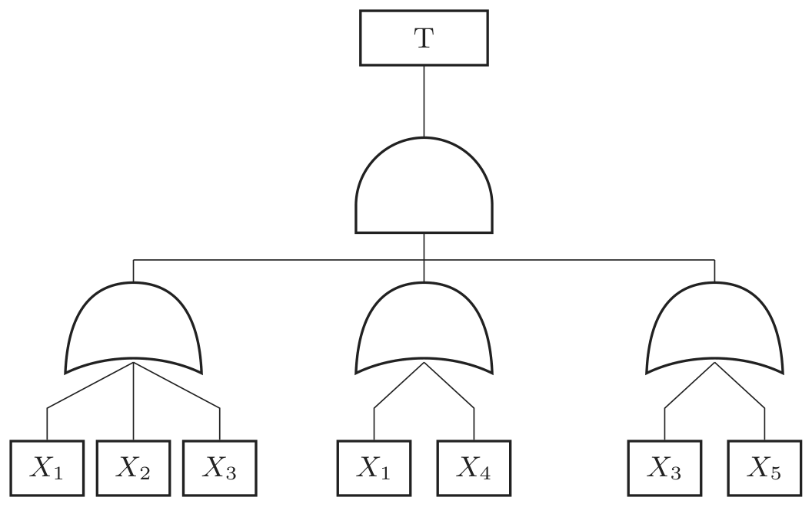

2026년 4회 · 산업안전기사 필기 CBT 기출 재배열 전사 검수본
지면(PDF)과 대조 검수용 · 수식은 KaTeX 렌더 · 총 문항
제1과목 안전관리론
001빈출도 ★☆☆난이도 1·쉬움개념형safe_A_2026_04_001
Y-K(Yutaka – Kohate) 성격검사에 관한 사항으로 옳은 것은?
① C,C'형은 적응이 빠르다.
② M,M'형은 내구성, 집념이 부족하다.
③ S,S'형은 담력, 자신감이 강하다
④ P,P'형은 운동, 결단이 빠르다.
정답: 1
해설
C·C′형(담즙질)은 적응이 빠르고 활동적이다. 나머지 셋은 설명이 다른 유형의 것과 뒤바뀌었다.
Y-K 성격검사의 네 유형
| 유형 | 기질 | 성격 | 알맞은 작업 |
|---|
| C · C′형 | 담즙질 | 적응이 빠르다 · 활동적 · 気 が 强함 | 대인 업무 · 활동적 작업 |
| M · M′형 | 흑담즙질 | 내구성 · 집념이 강하다 · 신중 | 단독 · 정밀 작업 |
| S · S′형 | 다혈질 | 담력과 자신감이 약하다 · 신경질적 | 보조 작업 |
| P · P′형 | 점액질 | 운동과 결단이 느리다 · 침착 | 대인 업무 |
오답 분석
② M·M′형은 내구성과 집념이 오히려 강하다.
③ S·S′형은 담력과 자신감이 약한 쪽이다.
④ P·P′형은 운동과 결단이 느린 쪽이다.
관련 개념 · 암기
Y-K(矢田部 · 木原) 성격검사M 은 강하고 S 는 약하다로 잡으면 두 개가 풀린다.
C 는 빠르고 P 는 느리다로 나머지 둘이 풀린다.
◈ 암기 C 빠르고 P 느리고, M 강하고 S 약하다.
🃏 관련 암기카드
분류: — > — > Y-K 성격검사 · 원본 2020.09.26
002빈출도 ★☆☆난이도 1·쉬움개념형safe_A_2026_04_002
재해의 발생확률은 개인적 특성이 아니라 그 사람이 종사하는 작업의 위험성에 기초한다는 이론은?
정답: 4
해설
기회설이다. 사람이 아니라 그가 맡은 일이 위험해서 사고가 난다고 본다.
재해 누발에 관한 네 가지 설
| 이론 | 무엇이 원인이라 보나 | 대책 |
|---|
| 기회설 | 그 사람이 맡은 작업이 위험하다 | 작업 자체를 바꾼다 · 교육 · 안전시설 |
| 암시설 | 한 번 사고를 겪어 심리적으로 위축 되었다 | 심리적 안정 · 배치 전환 |
| 경향설 | 사고를 잘 내는 소질을 타고났다 | 적성 배치 |
| 미숙설 | 기능이 서툴러 환경에 적응하지 못한다 | 교육 · 훈련 |
오답 분석
① 암시설은 한 번의 사고 경험이 위축을 낳는다고 본다.
② 경향설은 타고난 소질을 원인으로 본다.
③ 미숙설은 기능 미숙을 원인으로 본다.
관련 개념 · 암기
재해 누발에 관한 이론사람 탓인가 일 탓인가로 가른다.
기회설만 일 탓이고 나머지 셋은 사람 쪽을 본다.
◈ 암기 작업이 위험해서면 기회설.
🃏 관련 암기카드
분류: 재해조사 및 분석 > 재해 발생 이론 > 재해 발생 이론 · 원본 2020.09.26
003빈출도 ★☆☆난이도 1·쉬움개념형safe_A_2026_04_003
산업안전보건법령상 유해·위험 방지를 위한 방호 조치가 필요한 기계·기구가 아닌 것은?
① 예초기
② 지게차
③ 금속절단기
④ 금속탐지기
정답: 4
해설
금속탐지기는 사람을 다치게 하는 위험부가 없다. 나머지 셋은 모두 돌거나 움직이는 날이 있다.
방호조치를 해야 하는 기계·기구 (시행령 별표20)
| 기계·기구 | 방호조치 | 무엇을 막나 |
|---|
| 예초기 | 날 접촉 예방장치 | 돌아가는 날 |
| 원심기 | 회전체 접촉 예방장치 | 회전체 |
| 공기압축기 | 압력방출장치 | 과압 |
| 금속절단기 | 날 접촉 예방장치 | 절단날 |
| 지게차 | 헤드가드 · 백레스트 · 전조등 · 후미등 · 안전벨트 | 낙하 · 전도 |
| 포장기계 | 구동부 방호 연동장치 | 구동부 |
오답 분석
① 예초기는 날 접촉 예방장치가 필요하다.
② 지게차는 헤드가드 등 다섯 가지가 필요하다.
③ 금속절단기도 날 접촉 예방장치가 필요하다.
관련 개념 · 암기
시행령 별표20 — 유해·위험 방지를 위한 방호조치 대상여섯 가지뿐이다.
예초기 · 원심기 · 공기압축기 · 금속절단기 · 지게차 · 포장기계. 이 목록에 없으면 답이다.
◈ 암기 예 · 원 · 공 · 금 · 지 · 포 여섯.
⚖ 근거 법령 — 산업안전보건법 시행령 별표 20산업안전보건법 시행령 시행 2026. 8. 1.
분류: — > — > 방호조치 대상 · 원본 2020.09.26
004빈출도 ★☆☆난이도 2·보통개념형safe_A_2026_04_004
다음 설명에 해당하는 학습 지도의 원리는?
학습자가 지니고 있는 각자의 요구와 능력 등에 알맞은 학습활동의 기회를 마련해주어야 한다는 원리
① 직관의 원리
② 자기활동의 원리
③ 개별화의 원리
④ 사회화의 원리
정답: 3
해설
개별화의 원리다. 「각자에게 알맞은」이라는 말이 곧 개별화다.
학습지도의 다섯 원리
| 원리 | 무엇을 말하나 | 열쇳말 |
|---|
| 자기활동의 원리 | 학습자가 스스로 활동 하게 한다 | 자발성 |
| 개별화의 원리 | 각자의 요구와 능력에 맞춘다 | 알맞은 — 이 문제의 열쇳말 |
| 사회화의 원리 | 공동 학습으로 사회성을 기른다 | 함께 |
| 통합의 원리 | 전인으로서 통합적으로 지도한다 | 전체 |
| 직관의 원리 | 실물이나 표본을 직접 보여 준다 | 구체물 |
오답 분석
① 직관의 원리는 실물이나 표본을 직접 보여 주는 것이다.
② 자기활동의 원리는 스스로 활동하게 하는 것이다.
④ 사회화의 원리는 공동 학습으로 사회성을 기르는 것이다.
관련 개념 · 암기
학습지도의 원리열쇳말 하나씩만 잡으면 갈린다 —
스스로(자기활동) · 알맞게(개별화) · 함께(사회화) · 통째로(통합) · 직접 보여(직관).
◈ 암기 「각자에게 알맞은」이면 개별화.
🃏 관련 암기카드
분류: 안전보건교육 > 교육 이론 > 학습지도 원리 · 원본 2020.09.26
005빈출도 ★★☆난이도 1·쉬움개념형safe_A_2026_04_005
무재해 운동을 추진하기 위한 조직의 세 기둥으로 볼 수 없는 것은?
① 최고경영자의 경영자세
② 소집단 자주활동의 활성화
③ 전 종업원의 안전요원화
④ 라인관리자에 의한 안전보건의 추진
정답: 3
해설
전 종업원의 안전요원화는 세 기둥에 없다. 세 기둥은 최고경영자 · 관리감독자 · 근로자 각각이 무엇을 하는가를 말한다.
무재해 운동 추진의 3기둥(3요소)
| 기둥 | 누가 | 무엇을 |
|---|
| 최고경영자의 경영자세 | 최고경영자 | 무재해·무질병에 대한 확고한 자세 |
| 라인관리자에 의한 안전보건의 추진 | 관리감독자 | 생산 활동 속에서 안전보건을 실천 |
| 소집단 자주활동의 활성화 | 근로자 | 팀 단위로 자주적으로 추진 |
오답 분석
① 최고경영자의 경영자세는 세 기둥의 하나다.
② 소집단 자주활동의 활성화도 그렇다.
④ 라인관리자에 의한 안전보건의 추진도 그렇다.
관련 개념 · 암기
무재해 운동 추진의 3기둥3원칙(
무 · 선취 · 참가)은
생각이고 3기둥은
사람이다. 보기에 「누가」가 드러나면 3기둥 쪽이다.
◈ 암기 위 · 가운데 · 아래 — 경영자, 관리감독자, 근로자.
🃏 관련 암기카드
분류: 무재해운동 > 무재해·위험예지 > 무재해 운동 · 원본 2016.08.21 · 2020.09.26
006빈출도 ★☆☆난이도 1·쉬움개념형safe_A_2026_04_006
산업재해의 기본원인 중 「작업정보, 작업방법 및 작업환경」 등이 분류되는 항목은?
① Man
② Machine
③ Media
④ Management
정답: 3
해설
Media다. 어원이 「사람과 기계를 잇는 매개」라, 작업정보 · 작업방법 · 작업환경이 여기 든다.
산업재해의 기본원인 4M
| 항목 | 우리말 | 무엇이 드나 |
|---|
| Man | 사람 | 심리 · 생리 · 직장의 인간관계 |
| Machine | 기계·설비 | 설계 결함 · 방호장치 미설치 · 표준화 부족 |
| Media | 작업 | 작업정보 · 작업방법 · 작업환경 · 정리정돈 |
| Management | 관리 | 안전관리 조직 · 규정 · 교육훈련 · 건강관리 |
오답 분석
① Man 은 사람 자신의 심리·생리·인간관계다.
② Machine 은 기계와 설비의 결함이다.
④ Management 는 관리 체제와 규정이다.
관련 개념 · 암기
4M 에 의한 재해 원인 분석Media 를 「매체」로 옮기면 헷갈린다. 여기서는
작업 그 자체와 그 둘레를 뜻한다고 새기는 편이 정확하다.
◈ 암기 작업정보 · 작업방법 · 작업환경 = Media.
🃏 관련 암기카드
분류: 보호구 > 호흡·눈·귀 > 4M · 원본 2019.08.04
007빈출도 ★★☆난이도 1·쉬움개념형safe_A_2026_04_007
헤드십의 특성이 아닌 것은?
① 지휘형태는 권위주의적이다.
② 권한행사는 임명된 헤드이다.
③ 구성원과의 사회적 간격은 넓다
④ 상관과 부하와의 관계는 개인적인 영향이다
정답: 4
해설
상관과 부하의 관계가 개인적 영향인 것은 리더십이다. 헤드십은 지배적 관계다.
헤드십과 리더십
| 헤드십 | 리더십 |
|---|
| 권한 부여 | 위에서 임명 | 아래에서 부여 |
| 권한 근거 | 법적 · 공식적 | 개인 능력 |
| 지휘 형태 | 권위주의적 | 민주주의적 |
| 상관과 부하의 관계 | 지배적 | 개인적인 영향 |
| 사회적 간격 | 넓다 | 좁다 |
| 책임 귀속 | 상사에게 | 상사와 부하 모두에게 |
오답 분석
① 권위주의적 지휘형태는 헤드십의 특성이다.
② 임명된 헤드라는 것도 헤드십이다.
③ 사회적 간격이 넓은 것도 헤드십이다.
관련 개념 · 암기
헤드십(headship)과 리더십(leadership)가르는 물음은 하나다 —
권한이 위에서 왔는가, 아래에서 왔는가. 나머지 특성은 모두 여기서 따라 나온다.
◈ 암기 임명되면 헤드십, 따르게 하면 리더십.
🃏 관련 암기카드
분류: 산업심리 > 집단·리더십 > 헤드십과 리더십 · 원본 2016.08.21 · 2021.05.15
008빈출도 ★★☆난이도 1·쉬움개념형safe_A_2026_04_008
일반적으로 시간의 변화에 따라 야간에 상승하는 생체리듬은?
정답: 4
해설
혈액의 수분과 염분량은 주간에 감소하고 야간에 상승 한다. 나머지 셋은 모두 주간에 오르고 야간에 내린다.
주간과 야간의 생체리듬
| 항목 | 주간 | 야간 |
|---|
| 체온 · 혈압 · 맥박수 | 상승 | 감소 |
| 체중 | 증가 | 감소 |
| 혈액의 수분 · 염분량 | 감소 | 상승 |
| 말초운동 기능 | 상승 | 감소 |
오답 분석
① 혈압은 주간에 오르고 야간에 내린다.
② 맥박수도 마찬가지다.
③ 체중도 야간에는 줄어든다.
관련 개념 · 암기
생체리듬(biorhythm)혈액의 수분과 염분량만 거꾸로다. 이 하나만 붙잡으면 어느 것을 물어도 갈린다. 그래서
야간작업은 사고율이 높다.
◈ 암기 수분과 염분만 밤에 오른다.
🃏 관련 암기카드
분류: 산업심리 > 부주의·착오 > 생체리듬 · 원본 2017.08.26 · 2021.03.07
009빈출도 ★★☆난이도 1·쉬움개념형safe_A_2026_04_009
작업자 적성의 요인이 아닌 것은?
정답: 4
해설
연령은 적성의 요인이 아니다. 적성 요인은 직업 적성 · 지능 · 흥미 · 인간성 넷이다.
오답 분석
① 지능은 적성 요인이다.
② 인간성도 적성 요인이다.
③ 흥미도 적성 요인이다.
관련 개념 · 암기
작업자 적성의 요인적성 배치의 조건도 함께 나온다 —
적성검사를 실시해 개인의 능력을 파악할 것 · 직무평가로 자격 수준을 정할 것 · 인사관리의 기준 원칙을 세울 것.
◈ 암기 직 · 지 · 흥 · 인 — 나이는 없다.
🃏 관련 암기카드
분류: 산업심리 > 적성·검사 > 적성 요인 · 원본 2018.03.04 · 2021.03.07
010빈출도 ★☆☆난이도 1·쉬움개념형safe_A_2026_04_010
산업안전보건법령상 안전보건관리규정에 반드시 포함되어야 할 사항이 아닌 것은? (단, 그 밖에 안전 및 보건에 관한 사항은 제외한다.)
① 재해코스트 분석 방법
② 사고 조사 및 대책 수립
③ 작업장 안전 및 보건관리
④ 안전 및 보건 관리조직과 그 직무
정답: 1
해설
재해코스트 분석 방법은 들어가지 않는다. 규정에 담는 것은 조직과 직무 · 교육 · 작업장 관리 · 사고조사와 대책 네 가지다.
안전보건관리규정에 담을 사항 (법 제25조)
| 반드시 담는 것 | 비고 |
|---|
| 안전 및 보건에 관한 관리조직과 그 직무 | 누가 무엇을 하나 |
| 안전보건교육 | 무엇을 가르치나 |
| 작업장의 안전 및 보건 관리 | 어떻게 관리하나 |
| 사고 조사 및 대책 수립 | 사고가 나면 어떻게 하나 |
| 그 밖에 안전 및 보건에 관한 사항 | |
오답 분석
② 사고 조사 및 대책 수립은 반드시 담는다.
③ 작업장 안전 및 보건관리도 그렇다.
④ 안전 및 보건 관리조직과 그 직무도 그렇다.
관련 개념 · 암기
산업안전보건법 제25조 — 안전보건관리규정작성해야 하는 사업장은
상시근로자 100명 이상(제조업 등) 또는
300명 이상(그 밖의 업종)이며, 사유가 생긴 날부터
30일 이내에 만든다. 변경할 때는
산업안전보건위원회의 심의·의결을 거친다.
◈ 암기 조직 · 교육 · 관리 · 사고조사 넷.
⚖ 근거 법령 — 산업안전보건법 제25조산업안전보건법 시행 2026. 8. 1.
① 사업주는 사업장의 안전 및 보건을 유지하기 위하여 다음 각 호의 사항이 포함된 안전보건관리규정을 작성하여야 한다.
1. 안전 및 보건에 관한 관리조직과 그 직무에 관한 사항
2. 안전보건교육에 관한 사항
3. 작업장의 안전 및 보건 관리에 관한 사항
4. 사고 조사 및 대책 수립에 관한 사항
5. 그 밖에 안전 및 보건에 관한 사항
② 제1항에 따른 안전보건관리규정(이하 "안전보건관리규정"이라 한다)은 단체협약 또는 취업규칙에 반할 수 없다. 이 경우 안전보건관리규정 중 단체협약 또는 취업규칙에 반하는 부분에 관하여는 그 단체협약 또는 취업규칙으로 정한 기준에 따른다.
③ 안전보건관리규정을 작성하여야 할 사업의 종류, 사업장의 상시근로자 수 및 안전보건관리규정에 포함되어야 할 세부적인 내용, 그 밖에 필요한 사항은 고용노동부령으로 정한다.
분류: 안전보건관리 체제 > 안전보건관리규정 > 안전보건관리규정 · 원본 2021.05.15
011빈출도 ★☆☆난이도 1·쉬움개념형safe_A_2026_04_011
산업안전보건법령상 안전보건교육 교육대상별 교육내용 중 관리감독자 정기교육의 내용으로 틀린 것은?
① 정리정돈 및 청소에 관한 사항
② 유해⸱위험 작업환경 관리에 관한 사항
③ 표준안전작업방법 및 지도 요령에 관한 사항
④ 작업공정의 유해⸱위험과 재해 예방대책에 관한 사항
정답: 1
해설
정리정돈 및 청소는 근로자 정기교육의 내용이다. 관리감독자에게는 지도하고 관리하는 쪽을 가르친다.
정기교육 내용 — 누구에게 무엇을
| 근로자 | 관리감독자 |
|---|
| 공통 | 산업안전보건법령 · 산업재해보상보험 · 직무스트레스 · 직장 내 괴롭힘 | |
| 차이 | 정리정돈 및 청소 · 건강증진 · 유해위험 작업환경 관리 | 표준안전작업방법 및 지도 요령 · 작업공정의 유해위험과 재해 예방대책 · 부하직원 지도 · 안전보건 점검 |
오답 분석
② 유해·위험 작업환경 관리는 관리감독자 정기교육에 든다.
③ 표준안전작업방법 및 지도 요령도 그렇다.
④ 작업공정의 유해·위험과 재해 예방대책도 그렇다.
관련 개념 · 암기
시행규칙 별표5 — 안전보건교육 교육내용가르는 물음 —
내가 직접 하는 일인가, 남을 지도하는 일인가.
「지도」·「관리」·「감독」이라는 말이 들어가면 관리감독자 쪽이다.
◈ 암기 정리정돈은 근로자 몫.
⚖ 근거 법령 — 산업안전보건법 시행규칙 별표 5산업안전보건법 시행규칙 시행 2026. 8. 1.
분류: 안전보건관리 체제 > 선임·자격 > 법정 교육내용 · 원본 2021.05.15
012빈출도 ★☆☆난이도 1·쉬움개념형safe_A_2026_04_012
데이비스(K.Davis)의 동기부여 이론에 관한 등식에서 그 관계가 틀린 것은?
① 지식 x 기능 = 능력
② 상황 x 능력 = 동기유발
③ 능력 x 동기유발 = 인간의 성과
④ 인간의 성과 x 물질의 성과 = 경영의 성과
정답: 2
해설
상황 × 태도 = 동기유발이다. 「능력」이 아니라 태도다.
데이비스의 동기부여 등식
| 등식 | 무엇을 말하나 |
|---|
| 지식 × 기능 = 능력 | 아는 것과 할 줄 아는 것이 합쳐져 능력이 된다 |
| 상황 × 태도 = 동기유발 | 「능력」이 아니라 「태도」다 |
| 능력 × 동기유발 = 인간의 성과 | |
| 인간의 성과 × 물질의 성과 = 경영의 성과 | |
오답 분석
① 지식 × 기능 = 능력은 맞다.
③ 능력 × 동기유발 = 인간의 성과도 맞다.
④ 인간의 성과 × 물질의 성과 = 경영의 성과도 맞다.
관련 개념 · 암기
데이비스(K. Davis)의 동기부여 이론네 식이 사슬처럼 이어진다 —
지식·기능 → 능력,
상황·태도 → 동기유발,
능력·동기유발 → 인간의 성과,
인간의 성과·물질의 성과 → 경영의 성과.
모두 곱셈이라 어느 하나가 0이면 결과도 0이다.
◈ 암기 상황 × 태도 — 태도 자리에 능력을 넣으면 오답.
🃏 관련 암기카드
분류: 안전보건교육 > 학습이론 > 동기부여 이론 · 원본 2021.05.15
013빈출도 ★★☆난이도 1·쉬움개념형safe_A_2026_04_013
참가자에게 일정한 역할을 주어 실제적으로 연기를 시켜봄으로써 자기의 역할을 보다 확실히 인식할 수 있도록 체험학습을 시키는 교육방법은?
① Symposium
② Brain Storming
③ Role Playing
④ Fish Bowl Playing
정답: 3
해설
역할연기법(Role Playing)이다. 맡아서 연기해 보며 자기 역할을 몸으로 익힌다.
집단 토의·학습 기법
| 기법 | 어떻게 하나 | 특징 |
|---|
| Symposium | 여러 강사가 주제를 나눠 발표 하고 질의 | 전문가 중심 |
| Panel Discussion | 패널끼리 토의 한 뒤 청중과 질의 | 4~5명 |
| Forum | 먼저 자료를 제시 하고 청중이 질문·토의 | |
| Buzz Session | 6명이 6분간 토의 | 6-6 회의 |
| Brain Storming | 비판 없이 자유롭게 아이디어를 낸다 | 4원칙 |
| Role Playing | 역할을 맡아 연기 한다 | 체험 학습 |
오답 분석
① 심포지엄은 여러 강사가 주제를 나눠 발표하는 방식이다.
② 브레인스토밍은 자유롭게 아이디어를 내는 방식이다.
④ 피시볼은 안쪽 원이 토의하고 바깥 원이 관찰하는 방식이다.
관련 개념 · 암기
집단 토의 기법연기·역할이라는 말이 나오면 롤플레잉이다. 실기 훈련이 아니라
태도교육 쪽 방법이라는 점이 특징이다.
◈ 암기 맡아서 해 보면 롤플레잉.
🃏 관련 암기카드
분류: 안전보건교육 > 토의법 > 토의법 · 원본 2017.03.05 · 2021.03.07
014빈출도 ★☆☆난이도 2·보통개념형safe_A_2026_04_014
브레인스토밍 기법에 관한 설명으로 옳은 것은?
① 타인의 의견을 수정하지 않는다.
② 지정된 표현방식에서 벗어나 자유롭게 의견을 제시한다.
③ 참여자에게는 동일한 횟수의 의견제시 기회가 부여된다.
④ 주제와 내용이 다르거나 잘못된 의견은 지적하여 조정한다.
정답: 2
해설
자유분방이 4원칙의 하나다. 형식에 매이지 않고 마음대로 말하게 한다.
브레인스토밍의 4원칙
| 원칙 | 뜻 | 이 문항의 보기 |
|---|
| 비판금지 | 좋다 나쁘다 평가하지 않는다 | ④가 어긋난다 |
| 자유분방 | 형식에 매이지 않고 자유롭게 | ②가 맞다 |
| 대량발언 | 양을 많이 — 질은 나중에 | ③이 어긋난다 |
| 수정발언 | 남의 의견에 덧붙이고 고쳐도 된다 | ①이 어긋난다 |
오답 분석
① 남의 의견을 고치고 덧붙이는 것이 오히려 원칙(수정발언)이다.
③ 횟수를 똑같이 나누지 않고 많이 말하게 한다(대량발언).
④ 잘못된 의견도 지적하지 않는다(비판금지).
관련 개념 · 암기
브레인스토밍(Brain Storming)의 4원칙네 원칙이 겨냥하는 것은 하나다 —
말을 막는 것을 모두 치운다. 비판도, 형식도, 발언 횟수 제한도 말을 막기 때문에 없앤다.
◈ 암기 비판금지 · 자유분방 · 대량발언 · 수정발언.
🃏 관련 암기카드
분류: 안전보건교육 > 교육계획·평가 > 브레인스토밍 · 원본 2021.03.07
015빈출도 ★☆☆난이도 1·쉬움개념형safe_A_2026_04_015
안전교육 중 같은 것을 반복하여 개인의 시행착오에 의해서만 점차 그 사람에게 형성되는 것은?
① 안전기술의 교육
② 안전지식의 교육
③ 안전기능의 교육
④ 안전태도의 교육
정답: 3
해설
기능교육이다. 되풀이해 몸에 익히는 것이라 남이 대신 해 줄 수 없다.
오답 분석
① 「안전기술의 교육」은 3단계 분류에 없는 말이다.
② 지식교육은 강의로 알게 하는 단계다.
④ 태도교육은 습관으로 굳히는 단계다.
관련 개념 · 암기
안전교육의 3단계지식은 알게, 기능은 할 수 있게, 태도는 하게 만든다.
「반복」과 「시행착오」가 나오면 기능교육이다.
◈ 암기 되풀이해 몸에 배면 기능교육.
🃏 관련 암기카드
분류: 안전보건교육 > 학습이론 > 안전교육 3단계 · 원본 2021.03.07
016빈출도 ★☆☆난이도 2·보통개념형safe_A_2026_04_016
안전점검표(체크리스트) 항목 작성 시 유의사항으로 틀린 것은?
① 정기적으로 검토하여 설비나 작업방법이 타당성 있게 개조된 내용일 것
② 사업장에 적합한 독자적 내용을 가지고 작성할 것
③ 위험성이 낮은 순서 또는 긴급을 요하는 순서대로 작성할 것
④ 점검항목을 이해하기 쉽게 구체적으로 표현할 것
정답: 3
해설
위험성이 높은 순서로 적어야 한다. 낮은 것부터 적으면 정작 급한 것을 놓친다.
오답 분석
① 정기적으로 검토해 개정된 내용을 담는다.
② 사업장에 맞는 독자적 내용으로 만든다.
④ 이해하기 쉽게 구체적으로 표현한다.
관련 개념 · 암기
안전점검표(체크리스트) 작성 시 유의사항네 가지 —
사업장에 맞게 · 구체적으로 · 위험이 큰 것부터 · 정기적으로 고쳐 가며. 모두
실제로 쓰이게 만든다는 한 가지를 향한다.
◈ 암기 급하고 위험한 것이 먼저.
🃏 관련 암기카드
분류: 안전점검·인증 > 안전점검 > 안전점검표 · 원본 2021.08.14
017빈출도 ★☆☆난이도 2·보통공식형safe_A_2026_04_017
재해의 빈도와 상해의 강약도를 혼합하여 집계하는 지표로 옳은 것은?
① 강도율
② 종합재해지수
③ 안전활동율
④ Safe-T-Score
정답: 2
해설
종합재해지수(FSI)다. $\mathrm{FSI} = \sqrt{\text{도수율} \times \text{강도율}}$ 로 얼마나 자주(도수율)와 얼마나 크게(강도율)를 하나로 묶는다.
재해 지표
| 지표 | 식 | 무엇을 보나 |
|---|
| 도수율(FR) | $\text{재해건수} / \text{연근로시간} \times 10^{6}$ | 얼마나 자주 |
| 강도율(SR) | $\text{근로손실일수} / \text{연근로시간} \times 10^{3}$ | 얼마나 크게 |
| 종합재해지수(FSI) | $\sqrt{\text{도수율} \times \text{강도율}}$ | 둘을 합쳐 |
| 연천인율 | $\text{재해자수} / \text{평균근로자수} \times 1 {,} 000$ | 도수율 × 2.4 |

도수율과 강도율 — 곱하는 수가 다르다
오답 분석
① 강도율은 상해의 크기만 본다.
③ 안전활동율은 안전활동의 양을 재는 지표다.
④ Safe-T-Score 는 과거와 현재의 재해율을 견주는 지표다.
관련 개념 · 암기
종합재해지수(FSI)도수율은 백만, 강도율은 천을 곱한다. 이 두 수를 바꿔 쓰는 것이 가장 흔한 실수다.
◈ 암기 $\mathrm{FSI} = \sqrt{FR \times SR}$ — 곱한 뒤 제곱근.
🃏 관련 암기카드
분류: 재해조사 및 분석 > 상해 분류 > 재해 지표 · 원본 2021.03.07
018빈출도 ★★☆난이도 1·쉬움개념형safe_A_2026_04_018
재해예방의 4원칙이 아닌 것은?
① 손실우연의 원칙
② 사전준비의 원칙
③ 원인계기의 원칙
④ 대책선정의 원칙
정답: 2
해설
사전준비의 원칙은 없다. 넷째는 예방가능의 원칙이다.
재해예방의 4원칙
| 원칙 | 뜻 | 함의 |
|---|
| 손실우연의 원칙 | 같은 사고라도 손실 크기는 우연이다 | 손실이 작았다고 넘기면 안 된다 |
| 원인계기의 원칙 | 사고에는 반드시 원인이 있다 | 원인은 여럿이 이어져 있다 |
| 예방가능의 원칙 | 천재를 뺀 인재는 모두 막을 수 있다 | 이 원칙이 안전관리의 전제다 |
| 대책선정의 원칙 | 원인에 맞는 대책이 반드시 있다 | 3E 로 세운다 |
오답 분석
① 손실우연의 원칙은 4원칙의 하나다.
③ 원인계기의 원칙도 그렇다.
④ 대책선정의 원칙도 그렇다.
관련 개념 · 암기
재해예방의 4원칙예방가능의 원칙이 나머지 셋을 떠받친다. 막을 수 있다고 보아야 원인을 찾고 대책을 세울 이유가 생긴다.
◈ 암기 손 · 원 · 예 · 대 — 사전준비는 없다.
🃏 관련 암기카드
분류: 재해조사 및 분석 > 재해 발생 이론 > 재해예방 4원칙 · 원본 2017.03.05 · 2020.09.26
019빈출도 ★☆☆난이도 3·어려움계산형safe_A_2026_04_019
강도율 7인 사업장에서 한 작업자가 평생 동안 작업을 한다면 산업재해로 인한 근로손실 일수는 며칠로 예상되는가? (단, 이 사업장의 연근로시간과 한 작업자의 평생근로시간은 100000시간으로 가정한다.)
정답: 3
해설
환산강도율 = 강도율 × 100이다. 강도율이 근로시간 1,000시간당 손실일수이므로, 평생 10만 시간이면 100배다. $7 \times 100 = 700$ 일이다.
오답 분석
① 500일은 계산과 맞지 않는다.
② 600일도 맞지 않는다.
④ 800일도 맞지 않는다.
관련 개념 · 암기
환산강도율과 환산도수율환산강도율 = 강도율 × 100,
환산도수율 = 도수율 ÷ 10이다. 강도율은 1,000시간 기준이라 100배, 도수율은 100만 시간 기준이라 10분의 1이 된다.
◈ 암기 강도율은 ×100, 도수율은 ÷10.
🃏 관련 암기카드
분류: 재해조사 및 분석 > 재해율 계산 > 환산강도율 · 원본 2020.09.26
020빈출도 ★☆☆난이도 1·쉬움개념형safe_A_2026_04_020
다음 재해원인 중 간접원인에 해당하지 않는 것은?
① 기술적 원인
② 교육적 원인
③ 관리적 원인
④ 인적 원인
정답: 4
해설
인적 원인(불안전한 행동)은 직접원인이다. 간접원인은 그 뒤에 숨은 배경이다.
재해의 직접원인과 간접원인
| 갈래 | 무엇 | 보기 |
|---|
| 직접원인 | 인적 원인 (불안전한 행동) | 보호구 미착용 · 안전장치 기능 제거 · 위험한 자세 |
| 물적 원인 (불안전한 상태) | 방호장치 결함 · 작업환경 결함 |
| 간접원인 | 기술적 원인 | 설계 불량 · 점검 정비 미흡 |
| 교육적 원인 | 안전지식 부족 · 훈련 미흡 |
| 관리적 원인 | 작업기준 불명확 · 인원 배치 부적당 |
| 신체적 · 정신적 원인 | 피로 · 질병 · 불안 |
| 작업관리상 원인 | 안전관리 조직 결함 |
오답 분석
① 기술적 원인은 간접원인이다.
② 교육적 원인도 간접원인이다.
③ 관리적 원인도 간접원인이다.
관련 개념 · 암기
재해의 직접원인과 간접원인가르는 물음 —
사고가 나는 그 순간에 있었던 일인가. 그 순간의 행동과 상태가 직접원인, 그 배경이 간접원인이다.
「인적·물적」이면 직접이다.
◈ 암기 인적 · 물적은 직접, 나머지는 간접.
🃏 관련 암기카드
분류: 재해조사 및 분석 > 재해 발생 형태 > 재해 원인 · 원본 2020.09.26
제2과목 인간공학 및 시스템안전공학
021빈출도 ★☆☆난이도 2·보통개념형safe_A_2026_04_021
결함수분석법에서 Path set에 관한 설명으로 옳은 것은?
① 시스템의 약점을 표현한 것이다.
② Top 사상을 발생시키는 조합이다.
③ 시스템이 고장 나지 않도록 하는 사상의 조합이다.
④ 시스템고장을 유발시키는 필요불가결한 기본사상들의 집합이다.
정답: 3
해설
패스셋은 그 안의 기본사상이 모두 일어나지 않으면 정상사상이 일어나지 않는 집합이다. 곧 시스템을 살려 두는 조합이다.
컷셋과 패스셋
| 컷셋(Cut Set) | 패스셋(Path Set) |
|---|
| 정의 | 모두 일어나면 정상사상이 일어나는 집합 | 모두 일어나지 않으면 정상사상이 일어나지 않는 집합 |
| 뜻 | 시스템을 죽이는 조합 | 시스템을 살리는 조합 |
| 최소집합 | 최소 컷셋 — 시스템의 위험도를 나타낸다 | 최소 패스셋 — 시스템의 신뢰성을 나타낸다 |
| 쓰임 | 어디를 막아야 하나 | 어디를 지켜야 하나 |
오답 분석
① 시스템의 약점을 나타내는 것은 최소 컷셋이다.
② 정상사상을 일으키는 조합은 컷셋이다.
④ 시스템 고장을 일으키는 필요불가결한 집합은 최소 컷셋이다.
관련 개념 · 암기
컷셋(Cut Set)과 패스셋(Path Set)한 문장으로 —
최소 컷셋은 위험, 최소 패스셋은 신뢰성. 이 대비가 이 유형 문제를 거의 다 가른다.
◈ 암기 컷은 끊어 죽이고, 패스는 통해 살린다.
🃏 관련 암기카드
분류: 결함수분석 > FTA 기호·구조 > 컷셋과 패스셋 · 원본 2020.09.26
022빈출도 ★★☆난이도 2·보통공식형safe_A_2026_04_022
그림과 같이 FTA로 분석된 시스템에서 현재 모든 기본사상에 대한 부품이 고장난 상태이다. 부품 X1부터 부품 X5 까지 순서대로 복구한다면 어느 부품을 수리 완료하는 시점에서 시스템이 정상가동 되는가?

① 부품 X2
② 부품 X3
③ 부품 X4
④ 부품 X5
정답: 2
해설
맨 위가 AND 게이트이므로 아래 세 OR 가운데 하나만 0이 되면 정상사상이 사라진다. 왼쪽 OR 는 $X_{1} + X_{2} + X_{3}$ 이라 셋을 다 고쳐야 0이 된다. $X_{1} \rightarrow X_{2} \rightarrow X_{3}$ 순으로 고치면 X₃ 를 고치는 순간 왼쪽 OR 가 0이 되어 시스템이 정상가동된다.

AND 아래 OR 셋 — 한 갈래만 끊으면 정상으로 돌아온다
오답 분석
① X₂ 까지 고쳐도 왼쪽 OR 에 X₃ 가 남아 여전히 1이다.
③ X₄ 는 가운데 OR 소속이라 이미 X₃ 에서 정상이 되었다.
④ X₅ 도 마찬가지로 이미 지난 뒤다.
관련 개념 · 암기
FT도의 해석 — AND 와 ORAND 는 하나만 끊어도 전체가 끊긴다. 그래서 복구 문제에서는
가장 먼저 0이 되는 갈래를 찾으면 된다. 반대로
OR 는 하나만 남아도 살아 있다.
◈ 암기 AND 아래는 한 갈래만 살리면 끝.
🃏 관련 암기카드
분류: 결함수분석 > FTA 기호·구조 > FT도 해석 · 원본 2017.03.05 · 2020.08.22
023빈출도 ★☆☆난이도 2·보통개념형safe_A_2026_04_023
인간 에러(human error)에 관한 설명으로 틀린 것은?
① omission error : 필요한 작업 또는 절차를 수행하지 않는데 기인한 에러
② commission error : 필요한 작업 또는 절차의 수행지연으로 인한 에러
③ extraneous error : 불필요한 작업 또는 절차를 수행함으로써 기인한 에러
④ sequential error : 필요한 작업 또는 절차의 순서 착오로 인한 에러
정답: 2
해설
수행 지연은 timing error다. commission error 는 「했지만 잘못한」 오류다.
스웨인의 휴먼에러 분류
| 이름 | 우리말 | 무엇인가 |
|---|
| omission error | 생략 오류 | 해야 할 일을 하지 않았다 |
| commission error | 작위 오류 | 했지만 잘못했다 |
| extraneous error | 과잉행동 오류 | 하지 않아도 될 일을 했다 |
| sequential error | 순서 오류 | 순서를 뒤바꿨다 |
| timing error | 시간 오류 | 너무 빠르거나 늦었다 |
오답 분석
① omission error 는 해야 할 일을 하지 않은 오류가 맞다.
③ extraneous error 는 불필요한 일을 한 오류가 맞다.
④ sequential error 는 순서 착오가 맞다.
관련 개념 · 암기
스웨인(Swain)의 휴먼에러 분류commission 과 timing 을 바꿔치기 하는 것이 이 유형의 단골 함정이다.
「지연」이 보이면 timing이다.
◈ 암기 안 함 · 잘못함 · 괜히 함 · 순서 바꿈 · 때를 놓침.
🃏 관련 암기카드
분류: 결함수분석 > FTA 기호·구조 > 휴먼에러 분류 · 원본 2020.08.22
024빈출도 ★☆☆난이도 1·쉬움개념형safe_A_2026_04_024
인간이 기계보다 우수한 기능이라 할 수 있는 것은? (단, 인공지능은 제외한다.)
① 일반화 및 귀납적 추리
② 신뢰성 있는 반복 작업
③ 신속하고 일관성 있는 반응
④ 대량의 암호화된 정보의 신속한 보관
정답: 1
해설
일반화와 귀납적 추리는 사람이 낫다. 나머지 셋은 모두 기계가 압도적으로 낫다.
인간과 기계, 어느 쪽이 나은가
| 기능 | 인간 | 기계 |
|---|
| 귀납적 추리 · 일반화 | ○ | |
| 예기치 못한 사건의 감지 | ○ | |
| 원칙을 적용해 문제 해결 | ○ | |
| 주관적 평가 · 융통성 | ○ | |
| 연역적 추리 | | ○ |
| 반복 작업의 신뢰성 | | ○ |
| 신속하고 일관된 반응 | | ○ |
| 대량 정보의 보관과 처리 | | ○ |
| 사람이 못 느끼는 자극 감지 | | ○ |
오답 분석
② 반복 작업의 신뢰성은 기계가 낫다.
③ 신속하고 일관된 반응도 기계가 낫다.
④ 대량 정보의 신속한 보관도 기계가 낫다.
관련 개념 · 암기
인간-기계 시스템의 기능 배분가르는 물음 —
처음 겪는 일을 다뤄야 하는가. 예상 밖의 상황을 판단하고 원칙을 적용하는 것은 사람,
정해진 것을 빠르고 정확히 되풀이 하는 것은 기계다.
◈ 암기 사람은 귀납, 기계는 연역.
🃏 관련 암기카드
분류: 정보입력표시 > 표시장치·조종장치 > 인간-기계 기능 배분 · 원본 2021.03.07
025빈출도 ★★☆난이도 1·쉬움개념형safe_A_2026_04_025
다음 중 열 중독증(heat illness)의 강도를 올바르게 나열한 것은?
ⓐ 열소모(heat exhaustion)
ⓑ 열발진(heat rash)
ⓒ 열경련(heat cramp)
ⓓ 열사병(heat stroke)
① ⓒ ＜ ⓑ ＜ ⓐ ＜ ⓓ
② ⓒ ＜ ⓑ ＜ ⓓ ＜ ⓐ
③ ⓑ ＜ ⓒ ＜ ⓐ ＜ ⓓ
④ ⓑ ＜ ⓓ ＜ ⓐ ＜ ⓒ
정답: 3
해설
약한 것부터 열발진 < 열경련 < 열소모 < 열사병이다. ⓑ < ⓒ < ⓐ < ⓓ다.
열중독증 — 약한 것부터
| 이름 | 증상 | 비고 |
|---|
| ① 열발진 heat rash | 피부에 붉은 좁쌀 | 땀띠 — 가장 가볍다 |
| ② 열경련 heat cramp | 근육 경련 | 땀으로 염분이 빠져서 |
| ③ 열소모 heat exhaustion | 탈진 · 어지럼 · 창백 | 수분과 염분이 모자라서 |
| ④ 열사병 heat stroke | 체온조절 중추 마비 · 의식 상실 | 생명이 위험 — 가장 무겁다 |
오답 분석
① ⓒ(열경련)가 ⓑ(열발진)보다 무겁다.
② ⓓ(열사병)가 ⓐ(열소모)보다 무겁다.
④ 순서가 크게 어긋난다.
관련 개념 · 암기
열중독증(heat illness)의 분류땀에서 무엇이 빠졌는가로 이어진다 — 피부 자극(열발진) → 염분 부족(열경련) → 수분·염분 부족(열소모) →
체온조절 자체가 무너짐(열사병). 열사병만 응급 상황이다.
◈ 암기 발진 · 경련 · 소모 · 사병 순으로 무거워진다.
🃏 관련 암기카드
분류: — > — > 열중독증 · 원본 2014.03.02 · 2020.09.26
026빈출도 ★☆☆난이도 2·보통개념형safe_A_2026_04_026
인간-기계 시스템에서 시스템의 설계를 다음과 같이 구분할 때 제3단계인 기본설계에 해당되지 않는 것은?
① 화면 설계
② 작업 설계
③ 직무 분석
④ 기능 할당
정답: 1
해설
화면 설계는 제4단계 인터페이스 설계다. 기본설계에 드는 것은 기능 할당 · 인간 성능 요건 명세 · 직무분석 · 작업 설계 넷이다.
인간-기계 시스템의 설계 6단계
| 단계 | 이름 | 무엇을 하나 |
|---|
| 1 | 목표와 성능명세 결정 | 무엇을 이룰 것인가 |
| 2 | 시스템의 정의 | 어떤 기능이 필요한가 |
| 3 | 기본 설계 | 기능 할당 · 인간 성능 요건 명세 · 직무분석 · 작업 설계 |
| 4 | 인터페이스 설계 | 표시장치 · 조종장치 · 화면 |
| 5 | 촉진물 설계 | 지침서 · 매뉴얼 · 훈련 도구 |
| 6 | 시험 및 평가 | 실제로 되는지 확인 |
오답 분석
② 작업 설계는 기본설계에 든다.
③ 직무분석도 기본설계에 든다.
④ 기능 할당도 기본설계에 든다.
관련 개념 · 암기
인간-기계 시스템의 설계 6단계기본설계는 「무엇을 누가 맡을 것인가」,
인터페이스 설계는 「어떻게 보여 주고 조작할 것인가」다. 화면은 뒤쪽이다.
◈ 암기 기능 · 성능요건 · 직무분석 · 작업설계 넷이 3단계.
🃏 관련 암기카드
분류: 정보입력표시 > 표시장치·조종장치 > 인간-기계 시스템 설계 · 원본 2020.09.26
027빈출도 ★☆☆난이도 2·보통개념형safe_A_2026_04_027
암호체계의 사용 시 고려해야 될 사항과 거리가 먼 것은?
① 정보를 암호화한 자극은 검출이 가능하여야 한다.
② 다 차원의 암호보다 단일 차원화된 암호가 정보 전달이 촉진된다.
③ 암호를 사용할 때는 사용자가 그 뜻을 분명히 알 수 있어야 한다
④ 모든 암호 표시는 감지장치에 의해 검출될 수 있고, 다른 암호 표시와 구별될 수 있어야 한다.
정답: 2
해설
다차원 암호가 단일 차원보다 낫다. 색과 모양을 함께 쓰면 하나만 쓸 때보다 더 빨리 알아본다.
암호체계 사용 시의 일반 지침
| 지침 | 뜻 | 보기 |
|---|
| 검출성 | 알아챌 수 있어야 한다 | 너무 작거나 흐리면 안 된다 |
| 변별성 | 다른 암호와 구별 되어야 한다 | 비슷한 색끼리 쓰지 않는다 |
| 표준화 | 늘 같은 뜻으로 쓴다 | 빨강은 언제나 정지 |
| 양립성 | 사람의 기대와 맞아야 한다 | 위로 올리면 증가 |
| 부호의 의미 | 뜻을 분명히 알 수 있어야 한다 | |
| 다차원 암호 | 여러 차원을 함께 쓰면 더 낫다 | 색 + 모양 |
오답 분석
① 암호화한 자극은 검출이 가능해야 한다.
③ 사용자가 뜻을 분명히 알 수 있어야 한다.
④ 다른 암호 표시와 구별될 수 있어야 한다.
관련 개념 · 암기
암호체계 사용상의 일반 지침여섯 지침이 겨냥하는 것은 하나다 —
보고 곧바로 알아채게 만든다. 차원을 겹쳐 쓰면 그중 하나를 놓쳐도 나머지로 알아볼 수 있어 더 낫다.
◈ 암기 여러 겹으로 표시하면 더 잘 보인다.
🃏 관련 암기카드
분류: 정보입력표시 > 표시장치·조종장치 > 암호체계 · 원본 2020.09.26
028빈출도 ★☆☆난이도 1·쉬움개념형safe_A_2026_04_028
신호검출이론(SDT)의 판정결과 중 신호가 없었는데도 있었다고 말하는 경우는?
① 긍정(hit)
② 누락(miss)
③ 허위(false alarm)
④ 부정(correct rejection)
정답: 3
해설
허위경보(false alarm)다. 없는데 있다고 한 경우다.
신호검출이론의 네 가지 판정
| 신호가 있었다 | 신호가 없었다 |
|---|
| 있었다고 판정 | 긍정 hit — 맞음 | 허위경보 false alarm — 틀림 |
| 없었다고 판정 | 누락 miss — 틀림 | 올바른 부정 correct rejection — 맞음 |
오답 분석
① 긍정은 신호가 있을 때 있다고 한 경우다.
② 누락은 신호가 있는데 없다고 한 경우다.
④ 올바른 부정은 신호가 없을 때 없다고 한 경우다.
관련 개념 · 암기
신호검출이론(Signal Detection Theory)판정 기준을 낮추면 누락은 줄지만 허위경보가 는다. 둘을 동시에 줄일 수는 없다. 화재감지기를 민감하게 할수록 오작동이 느는 것이 같은 이치다.
◈ 암기 없는데 있다면 허위, 있는데 없다면 누락.
🃏 관련 암기카드
분류: 시스템 위험분석 > HAZOP·기타 > 신호검출이론 · 원본 2020.09.26
029빈출도 ★☆☆난이도 1·쉬움개념형safe_A_2026_04_029
시스템 안전분석 방법 중 HAZOP에서 「완전대체」를 의미하는 것은?
① NOT
② REVERSE
③ PART OF
④ OTHER THAN
정답: 4
해설
OTHER THAN이다. 완전히 다른 것으로 바뀐 상태를 뜻한다.
HAZOP 의 가이드워드
| 가이드워드 | 뜻 | 무엇을 가리키나 |
|---|
| NO / NOT | 설계 의도의 완전한 부정 | 전혀 일어나지 않음 |
| MORE / LESS | 양의 증가 또는 감소 | 유량·압력·온도가 많거나 적음 |
| AS WELL AS | 성질상의 증가 | 의도한 것에 덧붙여 다른 것도 |
| PART OF | 성질상의 감소 | 의도한 것의 일부만 |
| REVERSE | 설계 의도와 반대 | 역류 |
| OTHER THAN | 완전한 대체 | 전혀 다른 것으로 바뀜 |
오답 분석
① NOT 은 설계 의도의 완전한 부정이다.
② REVERSE 는 설계 의도와 반대다.
③ PART OF 는 성질상의 감소, 곧 일부만 이루어진 상태다.
관련 개념 · 암기
HAZOP 의 가이드워드AS WELL AS 와 PART OF 는 양이 아니라 성질을 말한다.
MORE/LESS 가 양 쪽이다. 이 대비가 가장 자주 물어진다.
◈ 암기 완전히 다른 것 = OTHER THAN.
🃏 관련 암기카드
분류: 시스템 위험분석 > HAZOP·기타 > HAZOP 가이드워드 · 원본 2020.09.26
030빈출도 ★★★난이도 1·쉬움개념형safe_A_2026_04_030
다음 설명에 해당하는 설비보전방식의 유형은?
설비를 새로 계획·설계하는 단계에서 신기술을 기초로 신뢰성, 조작성, 보전성, 안전성, 경제성 등이 우수한 설비의 선정·조달 또는 설계를 통하여 궁극적으로 설비의 보전 불필요의 체제를 목표로 한 설비보전 방법을 말한다.
① 개량보전
② 보전예방
③ 사후보전
④ 일상보전
정답: 2
해설
보전예방(MP)이다. 설계 단계에서부터 고장이 안 나게 만들어 보전 자체가 필요 없게 하자는 것이다.
설비보전의 유형
| 유형 | 언제 무엇을 | 특징 |
|---|
| 보전예방 MP | 설계·계획 단계에서 고장이 안 나게 만든다 | 보전이 필요 없는 설비를 목표로 |
| 예방보전 PM | 고장 나기 전에 미리 점검·교체 | 일상보전 · 정기보전 · 예지보전 |
| 개량보전 CM | 설비 자체를 고쳐 고장을 줄인다 | 체질 개선 |
| 사후보전 BM | 고장 난 뒤에 고친다 | 가장 소극적 |
오답 분석
① 개량보전은 이미 있는 설비를 고쳐 체질을 바꾸는 것이다.
③ 사후보전은 고장 난 뒤에 고치는 것이다.
④ 일상보전은 예방보전의 한 갈래로 날마다 하는 점검·급유다.
관련 개념 · 암기
설비보전의 유형언제 손을 대는가로 갈린다 —
설계 때(보전예방) → 쓰기 전(예방보전) → 쓰면서 고쳐(개량보전) → 고장 난 뒤(사후보전). 넷을 합친 것이
종합적 생산보전(TPM)이다.
◈ 암기 설계 단계에서 손대면 보전예방.
🃏 관련 암기카드
분류: 신뢰성 > 보전 > 설비보전 · 원본 2012.03.04 · 2017.05.07 · 2019.08.04
031빈출도 ★☆☆난이도 3·어려움계산형safe_A_2026_04_031
인간의 신뢰도가 0.6, 기계의 신뢰도가 0.9이다. 인간과 기계가 직렬체제로 작업할 때의 신뢰도는?
① 0.32
② 0.54
③ 0.75
④ 0.96
정답: 2
해설
직렬은 곱한다. $0.6 \times 0.9 = 0.54$ 다.

직렬과 병렬 — 하나만 고장 나도 멈추면 직렬이다
오답 분석
① 0.32 는 계산과 맞지 않는다.
③ 0.75 도 맞지 않는다.
④ 0.96 은 병렬로 계산한 값 $1 - ( 1 - 0.6 ) ( 1 - 0.9 ) = 0.96$ 이다.
관련 개념 · 암기
직렬·병렬 신뢰도직렬은 $\prod R_{i}$
, 병렬은 $1 - \prod ( 1 - R_{i} )$다.
직렬은 가장 약한 것보다 더 낮아지고, 병렬은 가장 강한 것보다 더 높아진다.
◈ 암기 직렬은 곱하기, 병렬은 1에서 빼기.
🃏 관련 암기카드
분류: 신뢰성 > 신뢰도 계산 > 직렬 신뢰도 · 원본 2019.08.04
032빈출도 ★☆☆난이도 1·쉬움개념형safe_A_2026_04_032
작업공간의 배치에 있어 구성요소 배치의 원칙에 해당하지 않는 것은?
① 기능성의 원칙
② 사용빈도의 원칙
③ 사용순서의 원칙
④ 사용방법의 원칙
정답: 4
해설
사용방법의 원칙은 없다. 넷째는 중요성의 원칙이다.
부품 배치의 4원칙
| 원칙 | 뜻 | 적용 |
|---|
| 중요성의 원칙 | 중요한 것을 좋은 자리에 | 목표 달성에 결정적인 것 |
| 사용빈도의 원칙 | 자주 쓰는 것을 가까이 | |
| 기능별 배치의 원칙 | 기능이 비슷한 것끼리 모아 | |
| 사용순서의 원칙 | 쓰는 순서대로 늘어놓아 | |
오답 분석
① 기능성의 원칙(기능별 배치)은 4원칙에 든다.
② 사용빈도의 원칙도 그렇다.
③ 사용순서의 원칙도 그렇다.
관련 개념 · 암기
부품 배치의 4원칙앞의 둘(중요성 · 사용빈도)이 「어디에 둘 것인가」를 정하고,
뒤의 둘(기능별 · 사용순서)이 「어떻게 묶을 것인가」를 정한다.
◈ 암기 중 · 빈 · 기 · 순 — 사용방법은 없다.
🃏 관련 암기카드
분류: 인간계측·작업공간 > 작업공간·자세 > 부품 배치 4원칙 · 원본 2021.03.07
033빈출도 ★☆☆난이도 2·보통개념형safe_A_2026_04_033
정신작업 부하를 측정하는 척도를 크게 4가지로 분류할 때 심박수의 변동, 뇌 전위, 동공 반응 등 정보처리에 중추신경계 활동이 관여하고 그 활동이나 징후를 측정하는 것은?
① 주관적(subjective) 척도
② 생리적(physiological) 척도
③ 주 임무(primary task) 척도
④ 부 임무(secondary task) 척도
정답: 2
해설
생리적 척도다. 심박수 · 뇌전위 · 동공 반응처럼 몸에 나타나는 징후를 잰다.
정신작업 부하의 네 가지 척도
| 척도 | 무엇을 재나 | 보기 |
|---|
| 주관적 척도 | 본인이 느끼는 부하 | 설문 · 평정척도 (NASA-TLX) |
| 생리적 척도 | 몸에 나타나는 징후 | 심박변이 · 뇌전위 · 동공 반응 · 눈 깜박임 |
| 주 임무 척도 | 본래 하는 일의 성과 | 반응시간 · 오류율 |
| 부 임무 척도 | 남는 여유 능력 | 곁들인 과제의 성적 |
오답 분석
① 주관적 척도는 본인이 느끼는 부하를 설문으로 재는 것이다.
③ 주 임무 척도는 본래 과제의 성과를 재는 것이다.
④ 부 임무 척도는 남는 여유 능력을 재는 것이다.
관련 개념 · 암기
정신작업 부하의 측정 척도부 임무 척도는 「본래 일을 하면서 곁가지 일을 얼마나 해낼 수 있는가」로
남는 여유(spare capacity)를 잰다는 점이 특징이다.
◈ 암기 몸으로 재면 생리적 척도.
🃏 관련 암기카드
분류: 인간계측·작업공간 > 생리·에너지 > 정신부하 척도 · 원본 2021.03.07
034빈출도 ★★☆난이도 1·쉬움개념형safe_A_2026_04_034
손이나 특정 신체부위에 발생하는 누적손상장애(CTD)의 발생인자와 가장 거리가 먼 것은?
① 무리한 힘
② 다습한 환경
③ 장시간의 진동
④ 반복도가 높은 작업
정답: 2
해설
다습한 환경은 CTD 의 인자가 아니다. 온도 인자로는 저온이 든다.
누적손상장애(CTD)의 발생인자
| 인자 | 무엇 | 보기 |
|---|
| 반복도 | 같은 동작의 되풀이 | 조립 · 타이핑 |
| 무리한 힘 | 과도한 힘 | 무거운 것 쥐기 |
| 부적절한 자세 | 관절이 꺾인 자세 | 손목을 꺾은 채 작업 |
| 진동 | 장시간의 진동 | 전동공구 |
| 저온 | 차가운 환경 | 다습이 아니다 |
오답 분석
① 무리한 힘은 CTD 의 인자다.
③ 장시간의 진동도 인자다.
④ 반복도가 높은 작업도 인자다.
관련 개념 · 암기
누적손상장애(CTD) · 근골격계질환다섯 인자를
많이 · 세게 · 비틀어 · 떨리게 · 차갑게로 새긴다.
습도는 들어가지 않는다.
◈ 암기 저온은 맞고 다습은 아니다.
🃏 관련 암기카드
분류: 작업환경관리 > 온열·조명·진동 > 누적손상장애 · 원본 2017.03.05 · 2020.06.06
035빈출도 ★☆☆난이도 1·쉬움개념형safe_A_2026_04_035
직무에 대하여 청각적 자극 제시에 대한 음성 응답을 하도록 할 때 가장 관련 있는 양립성은?
① 공간적 양립성
② 양식 양립성
③ 운동 양립성
④ 개념적 양립성
정답: 2
해설
양식(modality) 양립성이다. 귀로 들었으면 입으로 답하는 것처럼 자극과 응답의 감각 양식이 맞는 경우다.
양립성의 네 가지
| 종류 | 뜻 | 보기 |
|---|
| 공간적 양립성 | 배치가 기대와 맞음 | 오른쪽 버너는 오른쪽 손잡이 |
| 운동 양립성 | 움직임이 기대와 맞음 | 시계 방향으로 돌리면 증가 |
| 개념적 양립성 | 뜻이 기대와 맞음 | 빨강은 뜨거움, 파랑은 차가움 |
| 양식 양립성 | 자극과 응답의 감각 양식이 맞음 | 들으면 말로 답한다 |

양립성 네 가지 — 어긋나면 급할 때 반드시 실수한다
오답 분석
① 공간적 양립성은 배치가 기대와 맞는 것이다.
③ 운동 양립성은 움직임의 방향이 기대와 맞는 것이다.
④ 개념적 양립성은 뜻이 기대와 맞는 것이다.
관련 개념 · 암기
양립성의 네 가지양립성이 지켜지면
배우기 쉽고, 반응이 빠르고, 실수가 준다. 급하고 당황한 순간일수록 사람은
몸에 밴 기대대로 움직이기 때문이다.
◈ 암기 귀로 듣고 입으로 답하면 양식 양립성.
🃏 관련 암기카드
분류: 정보입력표시 > 청각·경보 > 양립성 · 원본 2020.08.22
036빈출도 ★☆☆난이도 3·어려움계산형safe_A_2026_04_036
컴퓨터 스크린 상에 있는 버튼을 선택하기 위해 커서를 이동시키는데 걸리는 시간을 예측하는 가장 적합한 법칙은?
① Fitts의 법칙
② Lewin의 법칙
③ Hick의 법칙
④ Weber의 법칙
정답: 1
해설
피츠의 법칙(Fitts' Law)이다. 멀수록 오래 걸리고, 표적이 클수록 빨리 닿는다.
인간공학의 주요 법칙
| 법칙 | 무엇을 예측하나 | 식 |
|---|
| Fitts | 목표에 닿는 데 걸리는 시간 | $MT = a + b \log_{2} ( 2 D / W )$ |
| Hick-Hyman | 선택지가 많을수록 느려지는 반응시간 | $RT = a + b \log_{2} N$ |
| Weber | 차이를 느끼는 최소 변화량 | $\text{변화감지역} / \text{기준자극} = \text{일정}$ |
| Lewin | 행동은 사람과 환경의 함수 | $B = f ( P \cdot E )$ |
오답 분석
② 레빈의 법칙은 행동을 사람과 환경의 함수로 본 것이다.
③ 힉의 법칙은 선택지 수에 따른 반응시간을 다룬다.
④ 베버의 법칙은 자극의 차이를 느끼는 최소 변화량을 다룬다.
관련 개념 · 암기
피츠의 법칙(Fitts' Law)$D$ 는 거리, $W$ 는 표적의 폭이다.
거리가 멀수록 · 표적이 좁을수록 오래 걸린다. 화면에서 중요한 버튼을 크게 만드는 근거가 이 법칙이다.
◈ 암기 커서 이동시간이면 피츠.
🃏 관련 암기카드
분류: 정보입력표시 > 동작·반응 법칙 > 동작·반응 법칙 · 원본 2020.08.22
037빈출도 ★★☆난이도 3·어려움계산형safe_A_2026_04_037
반사율이 85%, 글자의 밝기가 400cd/m2인 VDT화면에 350lux의 조명이 있다면 대비는 약 얼마인가?
① -6.0
② -5.0
③ -4.2
④ -2.8
정답: 3
해설
배경 휘도는 $L_{b} = \text{반사율} \times \text{조도} / \pi = 0.85 \times 350 / \pi \fallingdotseq 94.7$ [cd/m²] 다. 글자 부분의 휘도는 배경에 글자 밝기를 더한 $94.7 + 400 = 494.7$ 이다. $\text{대비} = ( L_{b} - L_{t} ) / L_{b} = ( 94.7 - 494.7 ) / 94.7 \fallingdotseq - 4.2$ 다.
오답 분석
① −6.0 은 계산과 맞지 않는다.
② −5.0 도 맞지 않는다.
④ −2.8 도 맞지 않는다.
관련 개념 · 암기
대비(contrast)$\text{대비} = ( L_{b} - L_{t} ) / L_{b} \times 100$ 이다.
배경보다 글자가 밝으면 대비가 음수로 나온다. 화면처럼 스스로 빛을 내는 표시장치가 그렇다.
◈ 암기 휘도 = 반사율 × 조도 ÷ $\pi$ — 원주율로 나누는 것을 잊기 쉽다.
🃏 관련 암기카드
분류: 정보입력표시 > 시각 > 대비 · 원본 2017.05.07 · 2020.06.06
038빈출도 ★☆☆난이도 1·쉬움개념형safe_A_2026_04_038
화학설비에 대한 안전성 평가 중 정량적 평가항목에 해당되지 않는 것은?
① 공정
② 취급물질
③ 압력
④ 화학설비용량
정답: 1
해설
공정은 정성적 평가 항목이다. 정량적 평가는 취급물질 · 용량 · 온도 · 압력 · 조작 다섯이다.
정성적 평가와 정량적 평가
| 정성적 평가 (제2단계) | 정량적 평가 (제3단계) |
|---|
| 무엇을 | 있는가 없는가 | 얼마나 되는가 |
| 항목 | 입지 조건 · 공장 내 배치 · 건조물 · 소방설비 · 원재료 · 중간재 · 제품 · 공정 | 취급물질 · 화학설비의 용량 · 온도 · 압력 · 조작 |
| 결과 | | A ~ D 등급으로 점수화 |
오답 분석
② 취급물질은 정량적 평가 항목이다.
③ 압력도 정량적 평가 항목이다.
④ 화학설비용량도 정량적 평가 항목이다.
관련 개념 · 암기
화학설비의 안전성 평가정량적 다섯 항목은
모두 숫자로 잴 수 있는 것 들이다. 「공정」·「배치」처럼 숫자로 매기기 어려운 것은 정성적 쪽이다.
◈ 암기 물 · 용 · 온 · 압 · 조 다섯.
🃏 관련 암기카드
분류: 정보입력표시 > 표시장치·조종장치 > 안전성 평가 · 원본 2020.06.06
039빈출도 ★☆☆난이도 1·쉬움개념형safe_A_2026_04_039
시각 장치와 비교하여 청각 장치 사용이 유리한 경우는?
① 메시지가 길 때
② 메시지가 복잡할 때
③ 정보 전달 장소가 너무 소란할 때
④ 메시지에 대한 즉각적인 반응이 필요할 떄
정답: 4
해설
즉각적인 반응이 필요할 때는 귀가 낫다. 청각은 감각기관 가운데 반응이 가장 빠르다.
오답 분석
① 메시지가 길면 시각이 낫다.
② 복잡할 때도 시각이 낫다.
③ 너무 소란하면 소리가 묻히므로 시각이 낫다.
관련 개념 · 암기
청각적 표시장치와 시각적 표시장치의 선택한 줄로 —
귀는 짧고 급한 것, 눈은 길고 복잡한 것. 다만
주변이 시끄러우면 귀를 쓸 수 없다.
◈ 암기 급하면 귀, 복잡하면 눈.
🃏 관련 암기카드
분류: 정보입력표시 > 시각 > 표시장치 선택 · 원본 2020.06.06
040빈출도 ★☆☆난이도 1·쉬움개념형safe_A_2026_04_040
조종장치를 촉각적으로 식별하기 위하여 사용되는 촉각적 코드화의 방법으로 옳지 않은 것은?
① 색감을 활용한 코드화
② 크기를 이용한 코드화
③ 조종장치의 형상 코드화
④ 표면 촉감을 이용한 코드화
정답: 1
해설
색은 눈으로 보는 것이라 촉각적 코드화가 아니다.
촉각적 코드화의 세 가지
| 방법 | 어떻게 | 보기 |
|---|
| 형상 | 손잡이 모양을 다르게 | 비행기 조종실의 착륙장치 손잡이 — 바퀴 모양 |
| 크기 | 굵기와 지름을 다르게 | 지름 1.3 [cm] · 두께 0.95 [cm] 이상 차이 |
| 표면 촉감 | 매끄럽게 · 홈을 파서 · 오톨도톨하게 | |
오답 분석
② 크기를 이용한 코드화는 촉각적 방법이다.
③ 형상 코드화도 촉각적 방법이다.
④ 표면 촉감을 이용한 코드화도 그렇다.
관련 개념 · 암기
조종장치의 촉각적 코드화촉각적 코드화가 필요한 까닭은
어둡거나 눈을 다른 데 두어야 할 때에도 손으로 구별해야 하기 때문이다. 항공기 조종실이 대표 사례다.
◈ 암기 형상 · 크기 · 표면 촉감 셋 — 색은 시각이다.
🃏 관련 암기카드
분류: 정보입력표시 > 표시장치·조종장치 > 촉각적 코드화 · 원본 2020.06.06
제3과목 기계위험방지기술
041빈출도 ★☆☆난이도 2·보통개념형safe_A_2026_04_041
선반 작업에 대한 안전수칙으로 가장 적절하지 않은 것은?
① 선반의 바이트는 끝을 짧게 장치한다.
② 작업 중에는 면장갑을 착용하지 않도록 한다.
③ 작업이 끝난 후 절삭 칩의 제거는 반드시 브러시 등의 도구를 사용한다.
④ 작업 중 일감의 치수 측정 시 기계 운전 상태를 저속으로 하고 측정한다.
정답: 4
해설
치수는 반드시 기계를 완전히 세우고 잰다. 저속이라도 돌고 있으면 자와 손이 함께 말려든다.
오답 분석
① 바이트를 짧게 물리면 진동이 줄어 안전하다.
② 면장갑은 회전부에 말려들 수 있다.
③ 칩은 브러시로 제거한다.
관련 개념 · 암기
선반 작업의 안전수칙선반 작업의 세 원칙 —
돌 때는 손을 대지 않는다 · 장갑을 끼지 않는다 · 칩은 도구로 치운다. 「저속으로」라는 말이 붙으면 대개 오답이다.
◈ 암기 측정은 반드시 정지 상태에서.
🃏 관련 암기카드
분류: 공작기계 > 선반·밀링·드릴 > 선반 작업 · 원본 2021.03.07
042빈출도 ★☆☆난이도 1·쉬움개념형safe_A_2026_04_042
다음 중 절삭가공으로 틀린 것은?
정답: 3
해설
프레스는 재료를 눌러 모양을 바꾸는 소성가공이다. 깎아 내지 않는다.
절삭가공과 소성가공
| 갈래 | 무엇을 하나 | 보기 |
|---|
| 절삭가공 | 깎아 내어 모양을 만든다 — 칩이 나온다 | 선반 · 밀링 · 드릴 · 보링 · 연삭 · 셰이퍼 · 플레이너 |
| 소성가공 | 눌러서 모양을 바꾼다 — 칩이 없다 | 프레스 · 단조 · 압연 · 인발 · 압출 · 전조 |
오답 분석
① 선반은 공작물을 돌려 깎는 절삭가공이다.
② 밀링은 커터를 돌려 깎는 절삭가공이다.
④ 보링은 이미 뚫린 구멍을 넓히는 절삭가공이다.
관련 개념 · 암기
절삭가공과 소성가공가르는 물음 하나 —
칩(부스러기)이 나오는가. 나오면 절삭, 안 나오면 소성이다.
◈ 암기 프레스만 소성가공.
🃏 관련 암기카드
분류: 공작기계 > 선반·밀링·드릴 > 가공 방법 · 원본 2021.03.07
043빈출도 ★☆☆난이도 1·쉬움개념형safe_A_2026_04_043
연삭작업에서 숫돌의 파괴원인으로 가장 적절하지 않은 것은?
① 숫돌의 회전속도가 너무 빠를 때
② 연삭작업 시 숫돌의 정면을 사용할 때
③ 숫돌에 큰 충격을 줬을 때
④ 숫돌의 회전중심이 제대로 잡히지 않았을 때
정답: 2
해설
숫돌의 정면(원주면)을 쓰는 것이 올바른 사용법이다. 파괴 원인이 되는 것은 오히려 측면을 쓰는 것이다.
연삭숫돌의 파괴 원인
| 파괴 원인 | 까닭 |
|---|
| 회전속도가 너무 빠를 때 | 원심력이 강도를 넘는다 |
| 숫돌의 측면을 사용할 때 | 정면(원주면)이 정상 사용면이다 |
| 큰 충격을 줬을 때 | 취성 재료라 충격에 약하다 |
| 회전중심이 어긋났을 때 | 편심 진동이 생긴다 |
| 숫돌에 균열이 있을 때 | 작업 전 음향검사로 확인 |
| 플랜지가 현저히 작을 때 | 숫돌 지름의 1/3 이상 이어야 한다 |

연삭기의 숫자 묶음
오답 분석
① 회전속도가 너무 빠르면 원심력으로 깨진다.
③ 큰 충격을 주면 깨진다.
④ 회전중심이 어긋나면 진동으로 깨진다.
관련 개념 · 암기
연삭숫돌의 파괴 원인연삭기의 숫자 —
작업 시작 전 1분 이상, 교체 후 3분 이상 시운전,
플랜지 지름은 숫돌 지름의 1/3 이상,
덮개는 지름 5 [cm] 이상인 숫돌에 설치.
◈ 암기 정면은 옳고 측면이 위험하다.
🃏 관련 암기카드
분류: 공작기계 > 연삭기 > 연삭숫돌 파괴 · 원본 2020.09.26
044빈출도 ★☆☆난이도 2·보통개념형safe_A_2026_04_044
산업안전보건법령상 화물의 낙하에 의해 운전자가 위험을 미칠 경우 지게차의 헤드가드(head guard)는 지게차의 최대하중의 몇 배가 되는 등분포정하중에 견디는 강도를 가져야 하는가? (단, 4톤을 넘는 값은 제외)
정답: 3
해설
최대하중의 2배에 견뎌야 한다. 다만 그 값이 4톤을 넘으면 4톤으로 본다.
지게차 헤드가드의 기준
| 항목 | 기준 | 비고 |
|---|
| 강도 | 최대하중의 2배 등분포정하중 | 4톤을 넘으면 4톤 |
| 개구부 | 폭 또는 길이 16 [cm] 미만 | 머리가 빠지지 않게 |
| 높이 — 좌승식 | 운전자 좌석 윗면에서 0.903 [m] 이상 | |
| 높이 — 입승식 | 운전석 바닥면에서 1.88 [m] 이상 | |
오답 분석
① 1배는 기준에 못 미친다.
② 1.5배도 기준이 아니다.
④ 3배는 기준보다 크다.
관련 개념 · 암기
안전보건규칙 제180조 — 헤드가드지게차의 방호장치 넷 —
헤드가드(낙하) · 백레스트(뒤로 넘어짐) · 전조등과 후미등(어둠) · 좌석 안전띠(전도). 무엇을 막는지로 짝지으면 헷갈리지 않는다.
◈ 암기 2배, 4톤 상한, 개구부 16 [cm] 미만.
⚖ 근거 법령 — 산업안전보건기준에 관한 규칙 제180조산업안전보건기준에 관한 규칙 시행 2026. 3. 2.
사업주는 다음 각 호에 따른 적합한 헤드가드(head guard)를 갖추지 아니한 지게차를 사용해서는 안 된다. 다만, 화물의 낙하에 의하여 지게차의 운전자에게 위험을 미칠 우려가 없는 경우에는 그렇지 않다. <개정 2019.1.31, 2022.10.18>
1. 강도는 지게차의 최대하중의 2배 값(4톤을 넘는 값에 대해서는 4톤으로 한다)의 등분포정하중(等分布靜荷重)에 견딜 수 있을 것이 문항이 묻는 자리
2. 상부틀의 각 개구의 폭 또는 길이가 16센티미터 미만일 것
3. 운전자가 앉아서 조작하거나 서서 조작하는 지게차의 헤드가드는 한국산업표준에서 정하는 높이 기준 이상일 것
4. 삭제<2019.1.31>
분류: 기계 일반 > 위험점·방호 > 헤드가드 · 원본 2020.09.26
045빈출도 ★☆☆난이도 1·쉬움개념형safe_A_2026_04_045
크레인에 돌발 상황이 발생한 경우 안전을 유지하기 위하여 모든 전원을 차단하여 크레인을 급정지시키는 방호장치는?
① 호이스트
② 이탈방지장치
③ 비상정지장치
④ 아우트리거
정답: 3
해설
비상정지장치다. 모든 전원을 끊어 즉시 세운다.
오답 분석
① 호이스트는 짐을 감아올리는 장치이지 방호장치가 아니다.
② 이탈방지장치는 궤도에서 벗어나지 않게 하는 장치다.
④ 아우트리거는 이동식 크레인을 지면에 버티게 하는 다리다.
관련 개념 · 암기
안전보건규칙 제134조 — 방호장치의 조정크레인의 방호장치 넷 —
과부하방지장치 · 권과방지장치 · 비상정지장치 · 제동장치.
파이널 리미트 스위치는 승강기 것이라 여기 없다.
◈ 암기 전원을 끊어 세우면 비상정지장치.
⚖ 근거 법령 — 산업안전보건기준에 관한 규칙 제134조산업안전보건기준에 관한 규칙 시행 2026. 3. 2.
① 사업주는 다음 각 호의 양중기에 과부하방지장치, 권과방지장치(捲過防止裝置), 비상정지장치 및 제동장치, 그 밖의 방호장치[(승강기의 파이널 리미트 스위치(final limit switch), 속도조절기, 출입문 인터 록(inter lock) 등을 말한다]가 정상적으로 작동될 수 있도록 미리 조정해 두어야 한다. <개정 2017.3.3, 2019.4.19>이 문항이 묻는 자리
1. 크레인
2. 이동식 크레인
3. 삭제<2019.4.19>
4. 리프트
5. 곤돌라
6. 승강기
② 제1항제1호 및 제2호의 양중기에 대한 권과방지장치는 훅ㆍ버킷 등 달기구의 윗면(그 달기구에 권상용 도르래가 설치된 경우에는 권상용 도르래의 윗면)이 드럼, 상부 도르래, 트롤리프레임 등 권상장치의 아랫면과 접촉할 우려가 있는 경우에 그 간격이 0.25미터 이상[(직동식(直動式) 권과방지장치는 0.05미터 이상으로 한다)]이 되도록 조정하여야 한다.
③ 제2항의 권과방지장치를 설치하지 않은 크레인에 대해서는 권상용 와이어로프에 위험표시를 하고 경보장치를 설치하는 등 권상용 와이어로프가 지나치게 감겨서 근로자가 위험해질 상황을 방지하기 위한 조치를 하여야 한다.
분류: 기계 일반 > 위험점·방호 > 크레인 방호장치 · 원본 2020.09.26
046빈출도 ★☆☆난이도 2·보통개념형safe_A_2026_04_046
선반작업의 안전수칙으로 가장 거리가 먼 것은?
① 기계에 주유 및 청소를 할 때에는 저속회전에서 한다.
② 일반적으로 가공물의 길이가 지름의 12배 이상일 때는 방진구를 사용하여 선반작업을 한다.
③ 바이트는 가급적 짧게 설치한다.
④ 면장갑을 사용하지 않는다.
정답: 1
해설
주유와 청소는 기계를 완전히 정지시키고 한다. 저속이라도 돌고 있으면 손이 말려든다.
오답 분석
② 길이가 지름의 12배 이상이면 방진구를 쓴다.
③ 바이트는 짧게 물린다.
④ 면장갑은 쓰지 않는다.
관련 개념 · 암기
선반 작업의 안전수칙방진구는 가늘고 긴 공작물이 휘거나 떨리는 것을 받쳐 준다.
길이가 지름의 12배 이상이 기준이다.
◈ 암기 주유·청소·측정은 모두 정지 상태에서.
🃏 관련 암기카드
분류: 기계 일반 > 소음·진동 > 선반 작업 · 원본 2020.09.26
047빈출도 ★☆☆난이도 1·쉬움개념형safe_A_2026_04_047
슬라이드가 내려옴에 따라 손을 쳐내는 막대가 좌우로 왕복하면서 위험한계에 있는 손을 보호하는 프레스 방호장치는?
① 수인식
② 게이트 가드식
③ 반발예방장치
④ 손쳐내기식
정답: 4
해설
손쳐내기식(push away)이다. 막대가 좌우로 오가며 손을 밀어낸다.
프레스의 방호장치
| 장치 | 분류 | 어떻게 막나 | 적용 |
|---|
| 손쳐내기식 | 접근거부형 | 막대가 손을 밀어낸다 | 행정길이 40 [mm] 이상 · SPM 120 이하 |
| 수인식 | 접근거부형 | 끈으로 손을 잡아당긴다 | SPM 120 이하 · 행정길이 50 [mm] 이상 |
| 게이트 가드식 | 격리형 | 문이 닫혀야 작동 | |
| 광전자식 | 접근반응형 | 빛을 가리면 멈춘다 | 마찰식 클러치 |
| 양수조작식 | 위치제한형 | 두 손을 모두 써야 | 급정지기구 있는 것 |

방호장치의 분류 — 접근거부형은 밀어내고 접근반응형은 멈춘다
오답 분석
① 수인식은 끈으로 손을 잡아당기는 방식이다.
② 게이트 가드식은 문이 닫혀야 작동하는 방식이다.
③ 반발예방장치는 목재가공용 둥근톱의 방호장치다.
관련 개념 · 암기
프레스 방호장치의 종류손쳐내기식과 수인식은 둘 다 접근거부형 이지만,
미는가 당기는가로 갈린다. 둘 다
SPM 120 이하의 느린 프레스에 쓴다.
◈ 암기 막대가 밀어내면 손쳐내기식, 끈이 당기면 수인식.
🃏 관련 암기카드
분류: 기계 일반 > 위험점·방호 > 프레스 방호장치 · 원본 2020.09.26
048빈출도 ★☆☆난이도 3·어려움계산형safe_A_2026_04_048
롤러기의 가드와 위험점검간의 거리가 100mm일 경우 ILO 규정에 의한 가드 개구부의 안전간격은?
① 11mm
② 21mm
③ 26mm
④ 31mm
정답: 2
해설
$Y = 6 + 0.15 X$ 다. $6 + 0.15 \times 100 = 21$ [mm] 다.
가드 개구부의 안전간격
| 조건 | 식 | 비고 |
|---|
| X < 160 [mm] | $Y = 6 + 0.15 X$ | X 는 가드와 위험점 사이의 거리 |
| X ≥ 160 [mm] | $Y = 30$ [mm] | 더 멀어져도 30 에서 멈춘다 |
| 위험점이 전동체 | $Y = 6 + 0.1 X$ | 계수가 0.1로 더 엄격 |
오답 분석
① 11 [mm] 는 계수를 잘못 잡았을 때 나온다.
③ 26 [mm] 도 계산과 맞지 않는다.
④ 31 [mm] 은 X 가 160 [mm] 이상일 때의 30 에 가깝다.
관련 개념 · 암기
ILO 규정 — 가드 개구부의 안전간격멀수록 틈을 넓게 두어도 된다는 뜻이다. 손이 들어가더라도 위험점에 닿지 못하기 때문이다. 다만
160 [mm] 를 넘으면 30 [mm] 에서 멈춘다.
◈ 암기 $Y = 6 + 0.15 X$ — 전동체면 0.1.
🃏 관련 암기카드
분류: 기계 일반 > 위험점·방호 > 가드 개구부 간격 · 원본 2020.08.22
049빈출도 ★☆☆난이도 1·쉬움개념형safe_A_2026_04_049
지게차의 포크에 적재된 화물이 마스트 후방으로 낙하함으로서 근로자에게 미치는 위험을 방지하기 위하여 설치하는 것은?
① 헤드가드
② 백레스트
③ 낙하방지장치
④ 과부하방지장치
정답: 2
해설
백레스트(backrest)다. 마스트 뒤쪽에 세워 짐이 뒤로 넘어오는 것을 막는다.
오답 분석
① 헤드가드는 위에서 떨어지는 물건을 막는다.
③ 「낙하방지장치」는 지게차의 방호장치 이름이 아니다.
④ 과부하방지장치는 양중기의 방호장치다.
관련 개념 · 암기
안전보건규칙 제181조 — 백레스트헤드가드는 위, 백레스트는 뒤다. 방향으로 짝지으면 바꿔 쓰지 않는다. 다만
마스트 뒤쪽으로 짐이 떨어질 우려가 없으면 백레스트를 갖추지 않아도 된다.
◈ 암기 뒤로 넘어오는 것을 막으면 백레스트.
⚖ 근거 법령 — 산업안전보건기준에 관한 규칙 제181조산업안전보건기준에 관한 규칙 시행 2026. 3. 2.
제181조(백레스트) 사업주는 백레스트(backrest)를 갖추지 아니한 지게차를 사용해서는 아니 된다. 다만, 마스트의 후방에서 화물이 낙하함으로써 근로자가 위험해질 우려가 없는 경우에는 그러하지 아니하다.이 문항이 묻는 자리
분류: 기계 일반 > 위험점·방호 > 지게차 방호장치 · 원본 2020.08.22
050빈출도 ★☆☆난이도 1·쉬움개념형safe_A_2026_04_050
산업안전보건법령상 프레스 및 전단기에서 안전 블록을 사용해야 하는 작업으로 가장 거리가 먼 것은?
① 금형 가공작업
② 금형 해체작업
③ 금형 부착작업
④ 금형 조정작업
정답: 1
해설
안전블록은 금형을 붙이고 떼고 맞추는 작업에 쓴다. 금형을 만드는 가공작업은 프레스 밖에서 하는 일이라 해당하지 않는다.
오답 분석
② 금형 해체작업에는 안전블록을 쓴다.
③ 금형 부착작업에도 쓴다.
④ 금형 조정작업에도 쓴다.
관련 개념 · 암기
안전보건규칙 제103조 — 안전블록안전블록은
슬라이드가 갑자기 내려오는 것을 물리적으로 막는 마지막 방벽이다.
부착 · 해체 · 조정 세 작업에서 반드시 끼워 둔다.
◈ 암기 부 · 해 · 조 — 가공은 아니다.
⚖ 근거 법령 — 산업안전보건기준에 관한 규칙 제103조산업안전보건기준에 관한 규칙 시행 2026. 3. 2.
① 사업주는 프레스 또는 전단기(剪斷機)(이하 "프레스등"이라 한다)를 사용하여 작업하는 근로자의 신체 일부가 위험한계에 들어가지 않도록 해당 부위에 덮개를 설치하는 등 필요한 방호 조치를 하여야 한다. 다만, 슬라이드 또는 칼날에 의한 위험을 방지하는 구조로 되어 있는 프레스등에 대해서는 그러하지 아니하다.
② 사업주는 작업의 성질상 제1항에 따른 조치가 곤란한 경우에 프레스등의 종류, 압력능력, 분당 행정의 수, 행정의 길이 및 작업방법에 상응하는 성능(양수조작식 안전장치 및 감응형 안전장치의 경우에는 프레스등의 정지성능에 상응하는 성능)을 갖는 방호장치를 설치하는 등 필요한 조치를 하여야 한다. <개정 2024.6.28>
③ 사업주는 제1항 및 제2항의 조치를 하기 위하여 행정의 전환스위치, 방호장치의 전환스위치 등을 부착한 프레스등에 대하여 해당 전환스위치 등을 항상 유효한 상태로 유지하여야 한다.
④ 사업주는 제2항의 조치를 한 경우 해당 방호장치의 성능을 유지하여야 하며, 발 스위치를 사용함으로써 방호장치를 사용하지 아니할 우려가 있는 경우에 발 스위치를 제거하는 등 필요한 조치를 하여야 한다. 다만, 제1항의 조치를 한 경우에는 발 스위치를 제거하지 아니할 수 있다.
분류: 기계 일반 > 수공구·작업수칙 > 안전블록 · 원본 2020.08.22
051빈출도 ★☆☆난이도 1·쉬움개념형safe_A_2026_04_051
다음 중 기계 설비의 안전조건에서 안전화의 종류로 가장 거리가 먼 것은?
① 재질의 안전화
② 작업의 안전화
③ 기능의 안전화
④ 외형의 안전화
정답: 1
해설
재질의 안전화는 없다. 다섯 가지는 외형 · 기능 · 구조 · 작업 · 유지보수의 안전화다.
기계설비의 안전조건 다섯 가지
| 안전화 | 무엇을 | 보기 |
|---|
| 외형의 안전화 | 위험한 부분을 감춘다 | 덮개 · 울 · 격리 · 안전색채 |
| 기능의 안전화 | 오작동해도 위험하지 않게 | 풀 프루프 · 페일 세이프 · 인터록 |
| 구조의 안전화 | 튼튼하게 만든다 | 재료 결함 방지 · 설계상 결함 방지 · 가공 결함 방지 |
| 작업의 안전화 | 작업 방식을 안전하게 | 작업대 높이 · 안전한 자세 · 정지 후 작업 |
| 유지보수의 안전화 | 고치기 쉽게 만든다 | 점검 통로 · 부품 교환 용이 |
오답 분석
② 작업의 안전화는 다섯 가지에 든다.
③ 기능의 안전화도 그렇다.
④ 외형의 안전화도 그렇다.
관련 개념 · 암기
기계설비의 안전조건구조의 안전화 안에 재료 결함 방지가 들어 있다. 그래서 「재질의 안전화」라는 따로 된 항목은 없다.
◈ 암기 외 · 기 · 구 · 작 · 유 다섯.
🃏 관련 암기카드
분류: 기계 일반 > 안전조건·안전율 > 기계설비의 안전조건 · 원본 2020.08.22
052빈출도 ★☆☆난이도 1·쉬움개념형safe_A_2026_04_052
인간이 기계 등의 취급을 잘못해도 그것이 바로 사고나 재해와 연결되는 일이 없는 기능을 의미하는 것은?
① fail safe
② fail active
③ fail operational
④ fool proof
정답: 4
해설
풀 프루프(fool proof)다. 사람이 잘못해도 사고로 이어지지 않게 만든 것이다.
풀 프루프와 페일 세이프
| Fool Proof | Fail Safe |
|---|
| 무엇이 잘못되나 | 사람이 잘못한다 | 기계가 고장 난다 |
| 어떻게 대응 | 잘못 조작해도 작동하지 않게 | 고장 나도 안전한 쪽으로 |
| 보기 | 전자레인지 문을 열면 정지 · 세탁기 뚜껑 인터록 | 건널목 차단기는 정전되면 내려온다 |
오답 분석
① fail safe 는 기계가 고장 났을 때 안전한 쪽으로 작동하는 것이다.
② fail active 는 페일 세이프의 한 단계로 잠시 운전을 이어 가는 것이다.
③ fail operational 은 다음 검사까지 운전이 가능한 가장 높은 단계다.
관련 개념 · 암기
풀 프루프(fool proof)와 페일 세이프(fail safe)사람이 실수했는가, 기계가 고장 났는가로 가른다. 페일 세이프는 다시 세 단계로 나뉜다 —
fail passive(정지) → fail active(경보 후 짧게 운전) → fail operational(다음 검사까지 운전).
◈ 암기 사람 실수는 풀 프루프, 기계 고장은 페일 세이프.
🃏 관련 암기카드
분류: 기계 일반 > 안전조건·안전율 > 풀 프루프와 페일 세이프 · 원본 2020.08.22
053빈출도 ★★☆난이도 2·보통개념형safe_A_2026_04_053
아세틸렌 용접장치에 관한 설명 중 틀린 것은?
① 아세틸렌발생기로부터 5m 이내, 발생기실로부터 3m 이내에는 흡연 및 화기사용을 금지한다.
② 발생기실에는 관계 근로자가 아닌 사람이 출입하는 것을 금지한다.
③ 아세틸렌 용기는 뉘어서 사용한다.
④ 건식안전기의 형식으로 소결금속식과 우회로식이 있다.
정답: 3
해설
아세틸렌 용기는 반드시 세워서 쓴다. 눕히면 용기 안의 아세톤이 함께 흘러나온다. 아세틸렌은 아세톤에 녹여 담기 때문이다.
오답 분석
① 발생기 5 [m] · 발생기실 3 [m] 이내 화기 금지가 맞다.
② 발생기실에는 관계자 외 출입을 금지한다.
④ 건식안전기에는 소결금속식과 우회로식이 있다.
관련 개념 · 암기
안전보건규칙 제285조 이하 — 아세틸렌 용접장치아세틸렌의 숫자 —
게이지압력 127 [kPa] 초과 금지,
발생기실은 벽에서 1.5 [m] 이상 떨어뜨리고 지붕은 얇은 불연성,
구리·은·수은과 접촉 금지(폭발성 아세틸라이드 생성).
◈ 암기 용기는 반드시 세워서.
⚖ 근거 법령 — 산업안전보건기준에 관한 규칙 제285조산업안전보건기준에 관한 규칙 시행 2026. 3. 2.
제285조(압력의 제한) 사업주는 아세틸렌 용접장치를 사용하여 금속의 용접ㆍ용단 또는 가열작업을 하는 경우에는 게이지 압력이 127킬로파스칼을 초과하는 압력의 아세틸렌을 발생시켜 사용해서는 아니 된다.
분류: 산업용 기계 > 아세틸렌·용접 > 아세틸렌 용접장치 · 원본 2016.05.08 · 2020.06.06
054빈출도 ★☆☆난이도 1·쉬움개념형safe_A_2026_04_054
가스 용접에 이용되는 아세틸렌가스 용기의 색상으로 옳은 것은?
정답: 3
해설
아세틸렌 용기는 황색이다.
가스용기의 도색
| 가스 | 도색 | 가스 | 도색 |
|---|
| 산소 | 녹색 | 아세틸렌 | 황색 |
| 수소 | 주황색 | 액화석유가스 | 회색 |
| 액화암모니아 | 백색 | 액화염소 | 갈색 |
| 질소 · 그 밖의 가스 | 회색 | 액화탄산가스 | 청색 |
오답 분석
① 녹색은 산소다.
② 회색은 액화석유가스와 그 밖의 가스다.
④ 청색은 액화탄산가스다.
관련 개념 · 암기
고압가스 용기의 도색용접에 함께 쓰는 두 가지 —
산소는 녹색, 아세틸렌은 황색 — 만 확실히 잡으면 이 유형은 거의 풀린다.
◈ 암기 산소 녹색, 아세틸렌 황색.
🃏 관련 암기카드
분류: 산업용 기계 > 아세틸렌·용접 > 가스용기 색상 · 원본 2019.04.27
055빈출도 ★☆☆난이도 1·쉬움개념형safe_A_2026_04_055
아세틸렌 용접 시 역류를 방지하기 위하여 설치하여야 하는 것은?
정답: 1
해설
안전기(역화방지기)다. 산소가 아세틸렌 쪽으로 거꾸로 흘러들거나 불꽃이 거슬러 올라오는 것을 막는다.
오답 분석
② 청정기는 발생 가스의 불순물을 걸러 내는 장치다.
③ 발생기는 카바이드와 물로 아세틸렌을 만드는 장치다.
④ 유량기는 가스의 흐르는 양을 재는 계기다.
관련 개념 · 암기
안전보건규칙 제289조 — 안전기의 설치안전기는
취관마다 설치하는 것이 원칙이며,
주관과 취관에 가장 가까운 분기관마다 두면 그 갈래의 취관에는 따로 두지 않아도 된다.
◈ 암기 역류와 역화를 막으면 안전기.
⚖ 근거 법령 — 산업안전보건기준에 관한 규칙 제289조산업안전보건기준에 관한 규칙 시행 2026. 3. 2.
① 사업주는 아세틸렌 용접장치의 취관마다 안전기를 설치하여야 한다. 다만, 주관 및 취관에 가장 가까운 분기관(分岐管)마다 안전기를 부착한 경우에는 그러하지 아니하다.이 문항이 묻는 자리
② 사업주는 가스용기가 발생기와 분리되어 있는 아세틸렌 용접장치에 대하여 발생기와 가스용기 사이에 안전기를 설치하여야 한다.
분류: 산업용 기계 > 아세틸렌·용접 > 아세틸렌 용접장치 · 원본 2019.04.27
056빈출도 ★☆☆난이도 1·쉬움개념형safe_A_2026_04_056
재료가 변형 시에 외부응력이나 내부의 변형과정에서 방출되는 낮은 응력파(stress wave)를 감지하여 측정하는 비파괴시험은?
① 와류탐상 시험
② 침투탐상 시험
③ 음향탐상 시험
④ 방사선투과 시험
정답: 3
해설
음향방출시험(AE)이다. 균열이 자라면서 스스로 내는 소리를 잡아낸다.
오답 분석
① 와류탐상은 맴돌이전류로 표면 결함을 찾는다.
② 침투탐상은 침투액으로 표면에 열린 결함을 찾는다.
④ 방사선투과는 필름에 비쳐 내부 결함을 찾는다.
관련 개념 · 암기
음향방출시험(AE, Acoustic Emission)다른 비파괴검사가
이미 생긴 결함을 찾는 데 견주어,
음향방출시험은 지금 자라고 있는 균열을 잡아낸다. 그래서
사용 중인 설비를 실시간으로 감시 할 수 있다.
◈ 암기 스스로 내는 소리를 들으면 음향방출.
🃏 관련 암기카드
분류: 설비진단 > 비파괴검사 > 비파괴검사 · 원본 2019.08.04
057빈출도 ★☆☆난이도 1·쉬움개념형safe_A_2026_04_057
산업안전보건법령상 승강기의 종류로 옳지 않은 것은?
① 승객용 엘리베이터
② 리프트
③ 화물용 엘리베이터
④ 승객화물용 엘리베이터
정답: 2
해설
리프트는 승강기와 나란한 별개의 양중기다. 승강기의 하위 종류가 아니다.
양중기와 승강기
| 무엇 | 비고 |
|---|
| 양중기 다섯 | 크레인 · 이동식 크레인 · 리프트 · 곤돌라 · 승강기 | 리프트와 승강기는 나란한 관계 |
| 승강기 다섯 | 승객용 · 승객화물용 · 화물용 · 소형화물용 엘리베이터 · 에스컬레이터 | |
오답 분석
① 승객용 엘리베이터는 승강기의 종류다.
③ 화물용 엘리베이터도 그렇다.
④ 승객화물용 엘리베이터도 그렇다.
관련 개념 · 암기
안전보건규칙 제132조 — 양중기와 승강기의 종류리프트는 양중기의 한 종류이지 승강기의 한 종류가 아니다. 이 관계를 뒤집어 놓은 보기가 자주 나온다.
◈ 암기 양중기 다섯 안에 승강기가 하나.
⚖ 근거 법령 — 산업안전보건기준에 관한 규칙 제132조산업안전보건기준에 관한 규칙 시행 2026. 3. 2.
① 양중기란 다음 각 호의 기계를 말한다. <개정 2019.4.19>
1. 크레인[호이스트(hoist)를 포함한다]
2. 이동식 크레인
3. 리프트(이삿짐운반용 리프트의 경우에는 적재하중이 0.1톤 이상인 것으로 한정한다)
4. 곤돌라
5. 승강기
② 제1항 각 호의 기계의 뜻은 다음 각 호와 같다. <개정 2019.4.19, 2021.11.19, 2022.10.18>
1. "크레인"이란 동력을 사용하여 중량물을 매달아 상하 및 좌우(수평 또는 선회를 말한다)로 운반하는 것을 목적으로 하는 기계 또는 기계장치를 말하며, "호이스트"란 훅이나 그 밖의 달기구 등을 사용하여 화물을 권상 및 횡행 또는 권상동작만을 하여 양중하는 것을 말한다.
2. "이동식 크레인"이란 원동기를 내장하고 있는 것으로서 불특정 장소에 스스로 이동할 수 있는 크레인으로 동력을 사용하여 중량물을 매달아 상하 및 좌우(수평 또는 선회를 말한다)로 운반하는 설비로서 「건설기계관리법」을 적용 받는 기중기 또는 「자동차관리법」제3조에 따른 화물ㆍ특수자동차의 작업부에 탑재하여 화물운반 등에 사용하는 기계 또는 기계장치를 말한다.
3. "리프트"란 동력을 사용하여 사람이나 화물을 운반하는 것을 목적으로 하는 기계설비로서 다음 각 목의 것을 말한다.
가. 건설용 리프트: 동력을 사용하여 가이드레일(운반구를 지지하여 상승 및 하강 동작을 안내하는 레일)을 따라 상하로 움직이는 운반구를 매달아 사람이나 화물을 운반할 수 있는 설비 또는 이와 유사한 구조 및 성능을 가진 것으로 건설현장에서 사용하는 것
나. 산업용 리프트: 동력을 사용하여 가이드레일을 따라 상하로 움직이는 운반구를 매달아 화물을 운반할 수 있는 설비 또는 이와 유사한 구조 및 성능을 가진 것으로 건설현장 외의 장소에서 사용하는 것
다. 자동차정비용 리프트: 동력을 사용하여 가이드레일을 따라 움직이는 지지대로 자동차 등을 일정한 높이로 올리거나 내리는 구조의 리프트로서 자동차 정비에 사용하는 것
라. 이삿짐운반용 리프트: 연장 및 축소가 가능하고 끝단을 건축물 등에 지지하는 구조의 사다리형 붐에 따라 동력을 사용하여 움직이는 운반구를 매달아 화물을 운반하는 설비로서 화물자동차 등 차량 위에 탑재하여 이삿짐 운반 등에 사용하는 것
4. "곤돌라"란 달기발판 또는 운반구, 승강장치, 그 밖의 장치 및 이들에 부속된 기계부품에 의하여 구성되고, 와이어로프 또는 달기강선에 의하여 달기발판 또는 운반구가 전용 승강장치에 의하여 오르내리는 설비를 말한다.
5. "승강기"란 건축물이나 고정된 시설물에 설치되어 일정한 경로에 따라 사람이나 화물을 승강장으로 옮기는 데에 사용되는 설비로서 다음 각 목의 것을 말한다.
가. 승객용 엘리베이터: 사람의 운송에 적합하게 제조ㆍ설치된 엘리베이터
나. 승객화물용 엘리베이터: 사람의 운송과 화물 운반을 겸용하는데 적합하게 제조ㆍ설치된 엘리베이터
다. 화물용 엘리베이터: 화물 운반에 적합하게 제조ㆍ설치된 엘리베이터로서 조작자 또는 화물취급자 1명은 탑승할 수 있는 것(적재용량이 300킬로그램 미만인 것은 제외한다)
라. 소형화물용 엘리베이터: 음식물이나 서적 등 소형 화물의 운반에 적합하게 제조ㆍ설치된 엘리베이터로서 사람의 탑승이 금지된 것
마. 에스컬레이터: 일정한 경사로 또는 수평로를 따라 위ㆍ아래 또는 옆으로 움직이는 디딤판을 통해 사람이나 화물을 승강장으로 운송시키는 설비
분류: 운반·양중기 > 리프트·곤돌라·승강기 > 승강기의 종류 · 원본 2020.09.26
058빈출도 ★☆☆난이도 2·보통개념형safe_A_2026_04_058
산업안전보건법령상 크레인에서 권과방지장치의 달기구 윗면이 권상장치의 아랫면과 접촉할 우려가 있는 경우 최소 몇 m 이상 간격이 되도록 조정하여야 하는가? (단, 직동식 권과방지장치의 경우는 제외)
① 0.1
② 0.15
③ 0.25
④ 0.3
정답: 3
해설
0.25 [m] 이상 띄운다. 직동식은 0.05 [m] 이상으로 더 짧다.
권과방지장치의 조정 간격
| 형식 | 간격 | 까닭 |
|---|
| 일반(간접식) | 0.25 [m] 이상 | 작동에 시차가 있다 |
| 직동식 | 0.05 [m] 이상 | 직접 눌러 곧바로 멈춘다 |
오답 분석
① 0.1 [m] 는 기준이 아니다.
② 0.15 [m] 도 아니다.
④ 0.3 [m] 도 기준이 아니다.
관련 개념 · 암기
안전보건규칙 제134조 — 권과방지장치의 조정권과(捲過)는
훅이 너무 높이 감겨 올라가 부딪히는 것이다. 직동식은 훅이 직접 스위치를 눌러 세우므로 여유를 적게 두어도 된다.
◈ 암기 일반 0.25, 직동식 0.05.
⚖ 근거 법령 — 산업안전보건기준에 관한 규칙 제134조산업안전보건기준에 관한 규칙 시행 2026. 3. 2.
① 사업주는 다음 각 호의 양중기에 과부하방지장치, 권과방지장치(捲過防止裝置), 비상정지장치 및 제동장치, 그 밖의 방호장치[(승강기의 파이널 리미트 스위치(final limit switch), 속도조절기, 출입문 인터 록(inter lock) 등을 말한다]가 정상적으로 작동될 수 있도록 미리 조정해 두어야 한다. <개정 2017.3.3, 2019.4.19>
1. 크레인
2. 이동식 크레인
3. 삭제<2019.4.19>
4. 리프트
5. 곤돌라
6. 승강기
② 제1항제1호 및 제2호의 양중기에 대한 권과방지장치는 훅ㆍ버킷 등 달기구의 윗면(그 달기구에 권상용 도르래가 설치된 경우에는 권상용 도르래의 윗면)이 드럼, 상부 도르래, 트롤리프레임 등 권상장치의 아랫면과 접촉할 우려가 있는 경우에 그 간격이 0.25미터 이상[(직동식(直動式) 권과방지장치는 0.05미터 이상으로 한다)]이 되도록 조정하여야 한다.이 문항이 묻는 자리
③ 제2항의 권과방지장치를 설치하지 않은 크레인에 대해서는 권상용 와이어로프에 위험표시를 하고 경보장치를 설치하는 등 권상용 와이어로프가 지나치게 감겨서 근로자가 위험해질 상황을 방지하기 위한 조치를 하여야 한다.
분류: 운반·양중기 > 크레인 > 권과방지장치 · 원본 2020.09.26
059빈출도 ★☆☆난이도 2·보통개념형safe_A_2026_04_059
프레스 금형의 파손에 의한 위험방지 방법이 아닌 것은?
① 금형에 사용하는 스프링은 반드시 인장형으로 할 것
② 작업 중 진동 및 충격에 의해 볼트 및 너트의 헐거워짐이 없도록 할 것
③ 금형의 하중 중심은 원칙적으로 프레스 기계의 하중 중심과 일치하도록 할 것
④ 캠, 기타 충격이 반복해서 가해지는 부분에는 완충장치를 설치할 것
정답: 1
해설
금형의 스프링은 압축형으로 한다. 인장형은 끊어지면 그대로 튀어 나가기 때문이다.
오답 분석
② 볼트와 너트가 헐거워지지 않게 한다.
③ 금형의 하중 중심을 프레스의 하중 중심과 맞춘다.
④ 충격이 반복되는 부분에는 완충장치를 둔다.
관련 개념 · 암기
프레스 금형의 파손 방지압축 스프링은 끊어져도
제자리에 눌려 있어 튀지 않는다. 인장 스프링은 끊어지는 순간
저장된 에너지가 그대로 튀어 나간다. 이 차이가 「반드시 압축형」의 까닭이다.
◈ 암기 스프링은 압축형 — 인장형은 오답.
🃏 관련 암기카드
분류: 프레스·전단기 > 프레스 > 금형의 파손 방지 · 원본 2020.06.06
060빈출도 ★☆☆난이도 1·쉬움개념형safe_A_2026_04_060
프레스 금형부착, 수리 작업 등의 경우 슬라이드의 낙하를 방지하기 위하여 설치하는 것은?
정답: 3
해설
안전블록이다. 슬라이드 아래에 끼워 물리적으로 내려오지 못하게 한다.
오답 분석
① 슈트는 가공물이나 스크랩을 미끄러뜨려 내보내는 통로다.
② 키이록은 클러치의 키를 잠그는 장치다.
④ 스트리퍼는 펀치에 달라붙은 소재를 떼어 내는 부품이다.
관련 개념 · 암기
안전보건규칙 제103조 — 안전블록부착 · 해체 · 조정 세 작업에서 쓴다. 전원을 끊는 것만으로는
플라이휠의 관성이나 자중으로 슬라이드가 내려올 수 있어,
쐐기처럼 물리적으로 받쳐야 한다.
◈ 암기 슬라이드 낙하를 막으면 안전블록.
⚖ 근거 법령 — 산업안전보건기준에 관한 규칙 제103조산업안전보건기준에 관한 규칙 시행 2026. 3. 2.
① 사업주는 프레스 또는 전단기(剪斷機)(이하 "프레스등"이라 한다)를 사용하여 작업하는 근로자의 신체 일부가 위험한계에 들어가지 않도록 해당 부위에 덮개를 설치하는 등 필요한 방호 조치를 하여야 한다. 다만, 슬라이드 또는 칼날에 의한 위험을 방지하는 구조로 되어 있는 프레스등에 대해서는 그러하지 아니하다.이 문항이 묻는 자리
② 사업주는 작업의 성질상 제1항에 따른 조치가 곤란한 경우에 프레스등의 종류, 압력능력, 분당 행정의 수, 행정의 길이 및 작업방법에 상응하는 성능(양수조작식 안전장치 및 감응형 안전장치의 경우에는 프레스등의 정지성능에 상응하는 성능)을 갖는 방호장치를 설치하는 등 필요한 조치를 하여야 한다. <개정 2024.6.28>
③ 사업주는 제1항 및 제2항의 조치를 하기 위하여 행정의 전환스위치, 방호장치의 전환스위치 등을 부착한 프레스등에 대하여 해당 전환스위치 등을 항상 유효한 상태로 유지하여야 한다.
④ 사업주는 제2항의 조치를 한 경우 해당 방호장치의 성능을 유지하여야 하며, 발 스위치를 사용함으로써 방호장치를 사용하지 아니할 우려가 있는 경우에 발 스위치를 제거하는 등 필요한 조치를 하여야 한다. 다만, 제1항의 조치를 한 경우에는 발 스위치를 제거하지 아니할 수 있다.
분류: 프레스·전단기 > 프레스 > 안전블록 · 원본 2019.04.27
제4과목 전기위험방지기술
061빈출도 ★☆☆난이도 2·보통개념형safe_A_2026_04_061
전로에 지락이 생겼을 때에 자동적으로 전로를 차단하는 장치를 시설해야하는 전기기계의 사용전압 기준은? (단, 금속제 외함을 가지는 저압의 기계 기구로서 사람이 쉽게 접촉할 우려가 있는 곳에 시설되어 있다.)
① 30V 초과
② 50V 초과
③ 90V 초과
④ 150V 초과
정답: 2
해설
사용전압 50 [V] 를 넘으면 누전차단기를 달아야 한다. 50 [V] 아래는 감전되어도 위험이 낮다고 본다.
오답 분석
① 30 [V] 는 우리나라의 안전전압이지 누전차단기 시설의 기준이 아니다.
③ 90 [V] 라는 기준은 없다.
④ 150 [V] 는 접지 대상과 접지 생략의 기준이다.
관련 개념 · 암기
한국전기설비규정(KEC) 211.2.4 — 누전차단기의 시설세 숫자를 갈라 둔다 —
30 [V] 는 안전전압,
50 [V] 초과는 누전차단기 시설 대상,
150 [V] 초과는 접지 대상. 셋이 자주 섞여 나온다.
◈ 암기 50 [V] 넘으면 누전차단기.
🃏 관련 암기카드
분류: 감전재해 > 누전차단기 > 누전차단기 시설 · 원본 2020.08.22
062빈출도 ★☆☆난이도 3·어려움계산형safe_A_2026_04_062
Dalziel에 의하여 동물 실험을 통해 얻어진 전류값을 인체에 적용했을 때 심실세동을 일으키는 전기에너지(J)는 약 얼마인가? (단, 인체 전기저항은 500Ω으로 보며, 흐르는 전류 I = 165/√T mA로 한다.)
정답: 2
해설
$W = I^{2} R T$ 다. $I = 165 / \sqrt{T}$ [mA] 이므로 $W = ( 165 \times 10^{-3} / \sqrt{T} )^{2} \times 500 \times T$ 다. $T$ 가 약분되어 $W = 165^{2} \times 10^{-6} \times 500 = 0.027225 \times 500 \fallingdotseq 13.6$ [J] 다.
오답 분석
① 9.8 [J] 는 저항을 작게 잡았을 때 쪽이다.
③ 19.6 [J] 는 계산과 맞지 않는다.
④ 27 [J] 는 저항 500 을 곱하지 않은 값에 가깝다.
관련 개념 · 암기
심실세동 한계에너지핵심은
통전시간 $T$
가 약분되어 사라진다는 점이다. 그래서
시간과 무관하게 약 13.6 [J]이라는 하나의 값이 나온다. 이것이
감전의 위험한계에너지다.
◈ 암기 T 가 약분된다 — 답은 13.6 [J] 하나.
🃏 관련 암기카드
분류: 감전재해 > 인체 영향 > 심실세동 에너지 · 원본 2020.08.22
063빈출도 ★★☆난이도 1·쉬움개념형safe_A_2026_04_063
다음 중 폭발위험장소에 전기설비를 설치할 떄 전기적인 방호조치로 적절하지 않은 것은?
① 다상 전기기기는 결상운전으로 인한 과열방지 조치를 한다.
② 배선은 단락ㆍ지락 사고시의 영향과 과부하로부터 보호한다.
③ 자동차단이 점화의 위험보다 클 때는 경보장치를 사용한다.
④ 단락보호장치는 고장상태에서 자동복구 되도록 한다.
정답: 4
해설
단락보호장치는 자동복구되지 않게 해야 한다. 고장 원인을 없애지 않은 채 다시 붙으면 그때마다 아크가 튀어 점화원이 된다.
오답 분석
① 결상운전으로 인한 과열을 막는 조치를 한다.
② 배선을 단락·지락·과부하로부터 보호한다.
③ 자동차단이 오히려 더 위험하면 경보장치로 대신한다.
관련 개념 · 암기
폭발위험장소의 전기적 방호조치폭발위험장소의 대원칙은 하나다 —
불꽃이 튈 기회를 만들지 않는다. 자동복구는 사람이 모르는 사이에 불꽃을 되풀이해 만들므로 금지된다.
◈ 암기 자동복구는 금지 — 사람이 확인한 뒤 복구한다.
🃏 관련 암기카드
분류: 감전재해 > 누전차단기 > 폭발위험장소 전기설비 · 원본 2013.08.18 · 2020.06.06
064빈출도 ★★☆난이도 1·쉬움개념형safe_A_2026_04_064
감전사고를 일으키는 주된 형태가 아닌 것은?
① 충전전로에 인체가 접촉되는 경우
② 이중절연 구조로 된 전기 기계ㆍ기구를 사용하는 경우
③ 고전압의 전선로에 인체가 근접하여 섬락이 발생된 경우
④ 충전 전기회로에 인체가 단락회로의 일부를 형성하는 경우
정답: 2
해설
이중절연 구조는 감전을 막기 위한 구조다. 감전을 일으키는 형태가 아니다.
감전사고의 형태
| 형태 | 무엇 | 보기 |
|---|
| 직접 접촉 | 충전부에 직접 닿음 | 전선을 맨손으로 잡음 |
| 간접 접촉 | 누전된 외함에 닿음 | 세탁기 외함 감전 |
| 섬락(flashover) | 가까이 가기만 해도 튐 | 고압 전선로에 근접 |
| 단락회로 형성 | 몸이 회로의 일부가 됨 | 두 상에 동시에 닿음 |
오답 분석
① 충전전로에 직접 접촉하는 것은 대표적인 형태다.
③ 고전압에 근접해 섬락이 생기는 것도 형태의 하나다.
④ 몸이 단락회로의 일부가 되는 것도 형태의 하나다.
관련 개념 · 암기
감전사고의 발생 형태이중절연 구조는 기본절연이 깨져도
보조절연이 한 겹 더 있어 사람에게 전기가 닿지 않는다. 그래서
접지와 누전차단기를 생략할 수 있는 근거가 된다.
◈ 암기 이중절연은 원인이 아니라 대책.
🃏 관련 암기카드
분류: 감전재해 > 감전 방지대책 > 감전사고의 형태 · 원본 2015.08.16 · 2020.06.06
065빈출도 ★☆☆난이도 1·쉬움개념형safe_A_2026_04_065
감전사고 방지대책으로 틀린 것은?
① 설비의 필요한 부분에 보호접지 실시
② 노출된 충전부에 통전망 설치
③ 안전전압 이하의 전기기기 사용
④ 전기기기 및 설비의 정비
정답: 2
해설
충전부에는 통전망이 아니라 절연 덮개나 방호망을 씌워야 한다. 전기가 통하는 망을 씌우면 오히려 감전 위험이 커진다.
오답 분석
① 보호접지는 감전 방지의 기본이다.
③ 안전전압 이하의 기기를 쓰는 것도 대책이다.
④ 기기와 설비를 정비하는 것도 대책이다.
관련 개념 · 암기
감전사고의 방지대책충전부 방호의 다섯 가지 —
절연물로 감싼다 · 폐쇄형 외함 · 방호망이나 절연 덮개 · 대지전압 30 [V] 이하 · 출입이 어려운 곳에 두고 위험표시.
모두 「전기가 안 통하게」 하는 쪽이다.
◈ 암기 통전망이 아니라 절연망.
🃏 관련 암기카드
분류: 감전재해 > 감전 방지대책 > 감전 방지대책 · 원본 2020.06.06
066빈출도 ★★☆난이도 1·쉬움개념형safe_A_2026_04_066
누전사고가 발생될 수 있는 취약 개소가 아닌 것은?
① 나선으로 접속된 분기회로의 접속점
② 전선의 열화가 발생한 곳
③ 부도체를 사용하여 이중절연이 되어 있는 곳
④ 리드선과 단자와의 접속이 불량한 곳
정답: 3
해설
이중절연이 되어 있는 곳은 오히려 누전에 가장 강한 곳이다.
오답 분석
① 나선으로 접속된 분기회로의 접속점은 절연이 벗겨져 있어 취약하다.
② 열화된 전선도 취약하다.
④ 리드선과 단자의 접속 불량도 취약하다.
관련 개념 · 암기
누전의 취약 개소누전이 잘 나는 곳은
절연이 얇거나 없거나 상한 곳이다.
접속점 · 열화된 전선 · 굽은 부분 · 습기 찬 곳이 대표적이다.
◈ 암기 절연이 두꺼운 곳은 취약하지 않다.
🃏 관련 암기카드
분류: 감전재해 > 감전 방지대책 > 누전 취약개소 · 원본 2013.08.18 · 2019.08.04
067빈출도 ★☆☆난이도 3·어려움계산형safe_A_2026_04_067
20Ω의 저항 중에 5A의 전류를 3분간 흘렸을 때의 발열량(cal)은?
① 4320
② 90000
③ 21600
④ 376560
정답: 3
해설
$H = 0.24 I^{2} R t$ 다. $0.24 \times 5^{2} \times 20 \times 180 = 0.24 \times 25 \times 20 \times 180 = 21 {,} 600$ [cal] 이다.
오답 분석
① 4,320 은 전류를 제곱하지 않았을 때 나온다.
② 90,000 은 0.24 를 곱하지 않은 [J] 값이다.
④ 376,560 은 자릿수가 어긋난다.
관련 개념 · 암기
줄의 법칙(Joule's law)$H = I^{2} R t$ [J] 이고,
[cal] 로 바꾸려면 0.24 를 곱한다. 시간은
반드시 초로 바꿔야 한다 — 3분은 180초다.
◈ 암기 0.24 곱하고, 분은 초로.
🃏 관련 암기카드
분류: — > — > 줄의 법칙 · 원본 2020.09.26
068빈출도 ★☆☆난이도 2·보통개념형safe_A_2026_04_068
방폭기기에 별도의 주위 온도 표시가 없을 때 방폭기기의 주위 온도 범위는? (단, 기호 「X」의 표시가 없는 기기이다.)
① 20℃ ~ 40℃
② -20℃ ~ 40℃
③ 10℃ ~ 50℃
④ -10℃ ~ 50℃
정답: 2
해설
따로 적혀 있지 않으면 −20 [℃] ~ +40 [℃]가 표준 범위다.
오답 분석
① 아래쪽이 영상 20 [℃] 인 범위는 없다.
③ 10 ~ 50 [℃] 도 표준이 아니다.
④ −10 ~ 50 [℃] 도 표준이 아니다.
관련 개념 · 암기
KS C IEC 60079-0 — 방폭기기의 표준 주위온도이 범위를 벗어난 곳에서 쓰려면
인증번호에 접미사 X를 붙여 특정사용조건을 명시해야 한다. 그래서 문항 단서에 「X 표시가 없는 기기」라고 못박은 것이다.
◈ 암기 −20 에서 +40 까지.
🃏 관련 암기카드
분류: — > — > 방폭기기 주위온도 · 원본 2020.08.22
069빈출도 ★★☆난이도 1·쉬움개념형safe_A_2026_04_069
방폭구조에 관계있는 위험 특성이 아닌 것은?
① 발화 온도
② 증기 밀도
③ 화염 일주한계
④ 최소 점화전류
정답: 2
해설
증기 밀도는 가스가 어디에 고이는지를 알려 줄 뿐, 방폭구조를 고르는 기준이 아니다.
방폭구조를 정하는 세 가지 위험특성
| 특성 | 무엇을 정하나 | 비고 |
|---|
| 발화점 | 온도등급 T1 ~ T6 | 기기 표면이 이보다 뜨거우면 안 된다 |
| 화염일주한계(최대안전틈새) | 기기그룹 ⅡA · ⅡB · ⅡC | 내압 방폭구조의 틈새 설계 |
| 최소점화전류 | 기기그룹 ⅡA · ⅡB · ⅡC | 본질안전 방폭구조의 에너지 한도 |
오답 분석
① 발화점는 온도등급을 정한다.
③ 화염일주한계는 기기그룹을 정한다.
④ 최소점화전류도 기기그룹을 정한다.
관련 개념 · 암기
방폭구조와 위험특성세 특성이 각각
표시의 한 자리씩을 결정한다 —
발화점 → T 등급,
화염일주한계와 최소점화전류 → Ⅱ 그룹. 그래서 「Ex d ⅡB T3」 같은 표시가 나온다.
◈ 암기 발화점 · 화염일주한계 · 최소점화전류 셋.
🃏 관련 암기카드
분류: 전기 방폭 > 방폭구조 > 방폭 위험특성 · 원본 2014.05.25 · 2019.08.04
070빈출도 ★☆☆난이도 2·보통개념형safe_A_2026_04_070
금속관의 방폭형 부속품에 대한 설명으로 틀린 것은?
① 재료는 아연도금을 하거나 녹이 스는 것을 방지하도록 한 강 또는 가단주철일 것
② 안쪽 면 및 끝부분은 전선의 피복을 손상하지 않도록 매끈한 것일 것
③ 전선관과의 접속부분의 나사는 5턱 이상 완전히 나사결합이 될 수 있는 길이일 것
④ 완성품은 유입방폭구조의 폭발압력시험에 적합할 것
정답: 4
해설
내압방폭구조의 폭발압력시험에 적합해야 한다. 유입방폭구조가 아니다.
오답 분석
① 재료는 아연도금 강 또는 가단주철이 맞다.
② 안쪽 면과 끝부분이 매끈해야 하는 것도 맞다.
③ 5턱 이상 나사결합도 맞다.
관련 개념 · 암기
금속관 방폭형 부속품의 기준5턱 이상 나사결합이 이 유형의 대표 숫자다. 나사가 길게 물려야
그 틈으로 화염이 빠져나가며 식어 밖으로 번지지 않는다 — 곧 내압 방폭의 원리다.
◈ 암기 5턱 이상, 내압방폭구조 시험.
🃏 관련 암기카드
분류: 전기 방폭 > 방폭구조 > 금속관 방폭부속품 · 원본 2019.08.04
071빈출도 ★☆☆난이도 1·쉬움개념형safe_A_2026_04_071
방폭전기설비의 용기내부에 보호가스를 압입하여 내부압력을 외부 대기 이상의 압력으로 유지함으로써 용기 내부에 폭발성가스 분위기가 형성되는 것을 방지하는 방폭구조는?
① 내압 방폭구조
② 압력 방폭구조
③ 안전중 방폭구조
④ 유입 방폭구조
정답: 2
해설
압력 방폭구조(p)다. 깨끗한 공기나 불활성 가스를 밀어 넣어 폭발성 가스가 안으로 들어오지 못하게 한다.
오답 분석
① 내압 방폭구조(d)는 안에서 터져도 밖으로 새지 않게 하는 구조다.
③ 안전증 방폭구조(e)는 애초에 불꽃이 나지 않게 튼튼히 만든 구조다.
④ 유입 방폭구조(o)는 기름 속에 담가 가스와 닿지 않게 하는 구조다.
관련 개념 · 암기
압력 방폭구조(p)내압(d)과 압력(p)은 이름이 비슷해 잘 섞인다.
내압은 「터져도 견딘다」,
압력은 「애초에 못 들어오게 한다」로 방향이 정반대다.
◈ 암기 밀어 넣어 막으면 압력 방폭.
🃏 관련 암기카드
분류: 전기 방폭 > 방폭구조 > 방폭구조의 종류 · 원본 2019.08.04
072빈출도 ★★☆난이도 3·어려움계산형safe_A_2026_04_072
극간 정전용량이 1000pF이고, 착화에너지가 0.019mJ인 가스에서 폭발한계 전압(V)은 약 얼마인가? (단, 소수점 이하는 반올림한다.)
① 3900
② 1950
③ 390
④ 195
정답: 4
해설
$V = \sqrt{2 W / C}$ 다. $V = \sqrt{2 \times 0.019 \times 10^{-3} / ( 1 {,} 000 \times 10^{-12} )} = \sqrt{3.8 \times 10^{4}} \fallingdotseq 195$ [V] 다.
오답 분석
① 3,900 [V] 는 자릿수가 크게 어긋난다.
② 1,950 [V] 는 10배 어긋난다.
③ 390 [V] 는 2배 어긋난다.
관련 개념 · 암기
정전기 에너지와 착화한계전압$W = \dfrac{1}{2} C V^{2}$ 을 $V$ 에 대해 푼 것이다.
[mJ] 는 $10^{-3}$
, [pF] 는 $10^{-12}$로 바꾸는 자리에서 자릿수를 놓치기 쉽다.
◈ 암기 $V = \sqrt{2 W / C}$ — 단위를 [J] 와 [F] 로.
🃏 관련 암기카드
분류: 전기 일반 > 전기 기초 계산 > 착화한계전압 · 원본 2011.06.12 · 2021.03.07
073빈출도 ★☆☆난이도 1·쉬움개념형safe_A_2026_04_073
다음 중 전기화재의 주요 원인이라고 할 수 없는 것은?
① 절연전선의 열화
② 정전기 발생
③ 과전류 발생
④ 절연저항값의 증가
정답: 4
해설
절연저항이 커지는 것은 절연이 좋아졌다는 뜻이다. 화재의 원인이 되는 것은 절연저항이 낮아지는 쪽이다.
전기화재의 발화원
| 발화원 | 무엇 | 비고 |
|---|
| 단락(합선) | 두 선이 붙어 큰 전류 | 가장 잦다 |
| 과전류 | 정격을 넘는 전류 | 과부하 · 문어발 배선 |
| 누전(지락) | 전류가 새어 나감 | 절연 열화 |
| 접촉부 과열 | 접속 불량 | 리드선·단자 |
| 절연 열화 | 절연저항 저하 | 증가가 아니다 |
| 정전기 스파크 | 방전 불꽃 | |
| 스파크(개폐기) | 개폐 시 아크 | |
오답 분석
① 절연전선의 열화는 전기화재의 원인이다.
② 정전기 발생도 원인이다.
③ 과전류 발생도 원인이다.
관련 개념 · 암기
전기화재의 발화원절연저항은 클수록 좋다. 「증가」·「향상」이라는 말이 붙으면 대개 원인이 아니라 대책이다.
◈ 암기 저항이 떨어져야 위험.
🃏 관련 암기카드
분류: 전기설비 > 절연·측정 > 전기화재의 원인 · 원본 2021.05.15
074빈출도 ★☆☆난이도 1·쉬움개념형safe_A_2026_04_074
개폐기로 인한 발화는 스파크에 의한 가연물의 착화화재가 많이 발생한다. 이를 방지하기 위한 대책으로 틀린 것은?
① 가연성증기, 분진 등이 있는 곳은 방폭형을 사용한다.
② 개폐기를 불연성 상자 안에 수납한다.
③ 비포장 퓨즈를 사용한다.
④ 접속부분의 나사풀림이 없도록 한다.
정답: 3
해설
포장 퓨즈를 써야 한다. 비포장 퓨즈는 녹아 끊어질 때 불꽃과 금속 입자가 그대로 튄다.
오답 분석
① 가연성 증기나 분진이 있는 곳에는 방폭형을 쓴다.
② 개폐기를 불연성 상자에 넣는다.
④ 접속부의 나사가 풀리지 않게 한다.
관련 개념 · 암기
개폐기에 의한 화재의 방지대책개폐기 화재 대책은 모두
불꽃을 가둔다는 한 가지를 향한다 —
방폭형 · 불연성 상자 · 포장 퓨즈 · 접속 조임 · 가연물에서 이격.
◈ 암기 퓨즈는 포장형.
🃏 관련 암기카드
분류: 전기설비 > 차단기·개폐기 > 개폐기 화재 방지 · 원본 2021.03.07
075빈출도 ★☆☆난이도 2·보통개념형safe_A_2026_04_075
개폐기, 차단기, 유도 전압조정기의 최대 사용 전압이 7kV 이하인 전로의 경우 절연 내력 시험은 최대 사용 전압의 1.5배의 전압을 몇 분간 가하는가?
정답: 1
해설
10분간 가한다. 절연내력 시험시간은 전압 등급과 관계없이 10분이다.
오답 분석
② 15분이라는 기준은 없다.
③ 20분도 아니다.
④ 25분도 아니다.
관련 개념 · 암기
전로의 절연내력 시험시험전압의 배수는 등급마다 다르지만
시간은 언제나 10분이다. 7 [kV] 이하는
최대사용전압의 1.5배(다만 최저 500 [V])를 가한다.
◈ 암기 시간은 언제나 10분.
🃏 관련 암기카드
분류: 전기설비 > 차단기·개폐기 > 절연내력 시험 · 원본 2021.03.07
076빈출도 ★☆☆난이도 3·어려움계산형safe_A_2026_04_076
피뢰기의 제한 전압이 752kV이고 변압기의 기준충격 절연강도가 1050kV이라면, 보호 여유도(%)는 약 얼마인가?
정답: 3
해설
$\text{여유도} = \dfrac{\text{충격절연강도} - \text{제한전압}}{\text{제한전압}} \times 100$ 이다. $( 1 {,} 050 - 752 ) / 752 \times 100 = 298 / 752 \times 100 \fallingdotseq 39.6 \fallingdotseq 40$ [%] 다.
오답 분석
① 18 [%] 는 계산과 맞지 않는다.
② 28 [%] 는 분모를 충격절연강도로 잡았을 때에 가깝다.
④ 43 [%] 도 맞지 않는다.
관련 개념 · 암기
피뢰기의 보호여유도분모가 제한전압이라는 점이 갈림길이다. 보호여유도는 실무에서
20 [%] 이상을 확보하는 것이 보통이다.
◈ 암기 (BIL − 제한전압) ÷ 제한전압.
🃏 관련 암기카드
분류: 전기화재 > 전기화재·피뢰 > 피뢰기 보호여유도 · 원본 2021.08.14
077빈출도 ★☆☆난이도 2·보통개념형safe_A_2026_04_077
정전기재해의 방지대책에 대한 설명으로 적합하지 않는 것은?
① 접지의 접속은 납땜, 용접 또는 멈춤나사로 실시한다.
② 회전부품의 유막저항이 높으면 도전성의 윤활제를 사용한다.
③ 이동식의 용기는 절연성 고무제 바퀴를 달아서 폭발위험을 제거한다.
④ 폭발의 위험이 있는 구역은 도전성 고무류로 바닥 처리를 한다.
정답: 3
해설
절연성 바퀴를 달면 전하가 빠져나갈 길이 막힌다. 도전성 바퀴를 달아 대지로 흘려보내야 한다.
오답 분석
① 접지 접속은 납땜·용접·멈춤나사로 확실히 한다.
② 유막저항이 높으면 도전성 윤활제를 쓴다.
④ 위험구역 바닥은 도전성 고무류로 처리한다.
관련 개념 · 암기
정전기 재해의 방지대책네 보기가 모두 같은 한 가지를 말한다 —
전하가 대지로 빠져나갈 길을 만든다.
「절연성」이라는 말이 나오면 정전기 대책에서는 대개 오답이다.
◈ 암기 정전기는 길을 터 줘야 빠진다.
🃏 관련 암기카드
분류: 접지 > 접지 일반 > 정전기 대책 · 원본 2021.05.15
078빈출도 ★★☆난이도 1·쉬움개념형safe_A_2026_04_078
정전기가 대전된 물체를 제전시키려고 한다. 다음 중 대전된 물체의 절연저항이 증가되어 제전의 효과를 감소시키는 것은?
① 접지한다.
② 건조시킨다.
③ 도전성 재료를 첨가한다.
④ 주위를 가습한다.
정답: 2
해설
건조시키면 표면의 수분막이 사라져 절연저항이 커지고, 전하가 빠져나가지 못한다.
오답 분석
① 접지는 전하가 대지로 빠져나갈 길을 만든다.
③ 도전성 재료를 넣으면 저항이 낮아진다.
④ 가습하면 표면에 수분막이 생겨 전하가 흐른다.
관련 개념 · 암기
정전기의 제거 방법상대습도 60~70 [%]를 유지하면 물체 표면에 얇은 수분막이 생겨 전하가 흘러 나간다. 겨울에 정전기가 잦은 것도 공기가 건조하기 때문이다.
◈ 암기 말리면 쌓이고, 적시면 빠진다.
🃏 관련 암기카드
분류: 접지 > 접지 일반 > 정전기 제거 · 원본 2011.06.12 · 2021.03.07
079빈출도 ★☆☆난이도 2·보통개념형safe_A_2026_04_079
다음은 어떤 방전에 대한 설명인가?
정전기가 대전되어 있는 부도체에 접지체가 접근한 경우 대전물체와 접지체 사이에 발생하는 방전과 거의 동시에 부도체의 표면을 따라서 발생하는 나뭇가지 형태의 발광을 수반하는 방전
① 코로나 방전
② 뇌상 방전
③ 연면방전
④ 불꽃 방전
정답: 3
해설
연면방전이다. 부도체 표면을 따라 나뭇가지 모양으로 번지는 것이 특징이다. 필름이나 시트를 감을 때 잘 생긴다.
정전기 방전의 종류
| 종류 | 무엇 | 특징 |
|---|
| 코로나 방전 | 뾰족한 끝에서 국부적으로 | 파괴력이 가장 작다 · 「쉬」 소리 |
| 스트리머 방전 | 코로나가 자라 줄기 모양으로 | 코로나보다 세다 |
| 불꽃 방전 | 공기가 뚫려 한 번에 | 에너지가 크다 · 폭발 위험 큼 |
| 연면방전 | 부도체 표면을 따라 나뭇가지 모양 | 필름·시트 권취 |
| 뇌상 방전 | 공중에 떠 있는 대전운에서 | 분체 저장 사일로 |
오답 분석
① 코로나 방전은 뾰족한 끝에서 국부적으로 일어난다.
② 뇌상 방전은 공중의 대전운에서 일어난다.
④ 불꽃 방전은 공기가 뚫리며 한 번에 일어난다.
관련 개념 · 암기
정전기 방전의 종류연면(沿面)은 「면을 따라간다」는 뜻이다. 이름 그대로
표면을 타고 번지는 방전이라 부도체 표면에서만 생긴다.
◈ 암기 표면을 따라 나뭇가지 모양이면 연면방전.
🃏 관련 암기카드
분류: 정전기 > 정전기 발생·방전 > 정전기 방전 · 원본 2020.09.26
080빈출도 ★★☆난이도 1·쉬움개념형safe_A_2026_04_080
제전기의 종류가 아닌 것은?
① 전압인가식 제전기
② 정전식 제전기
③ 방사선식 제전기
④ 자기방전식 제전기
정답: 2
해설
「정전식 제전기」라는 것은 없다. 제전기는 전압인가식 · 자기방전식 · 방사선식 셋뿐이다.
제전기의 세 종류
| 종류 | 어떻게 이온을 만드나 | 특징 |
|---|
| 전압인가식 | 고전압을 걸어 코로나 방전으로 | 제전 능력이 가장 크다 · 폭발위험장소는 주의 |
| 자기방전식 | 대전물체 자신의 전기로 | 구조가 간단 · 약 50 [V] 정도 남는다 |
| 방사선식 | 방사선으로 공기를 이온화 | 폭발위험장소에 쓸 수 있다 · 취급 제한 |
오답 분석
① 전압인가식은 제전기의 한 종류다.
③ 방사선식도 그렇다.
④ 자기방전식도 그렇다.
관련 개념 · 암기
제전기의 종류제전기는
공기를 이온화해 반대 극성 이온으로 전하를 중화 한다. 접지와 달리
부도체에도 통한다는 것이 가장 큰 장점이며, 설치 시
제전효율 90 [%] 이상 이어야 한다.
◈ 암기 전압인가 · 자기방전 · 방사선 셋.
🃏 관련 암기카드
분류: 정전기 > 정전기 방지대책 > 제전기 · 원본 2012.05.20 · 2020.08.22
제5과목 화학설비위험방지기술
081빈출도 ★★☆난이도 1·쉬움개념형safe_A_2026_04_081
다음 중 인화성 가스가 아닌 것은?
정답: 4
해설
산소는 조연성(지연성) 가스다. 스스로 타지 않고 남을 태운다.
가스의 성질에 따른 분류
| 갈래 | 무엇 | 보기 |
|---|
| 가연성 가스 | 스스로 탄다 | 수소 · 메탄 · 에탄 · 프로판 · 부탄 · 아세틸렌 |
| 조연성 가스 | 남을 태운다 | 산소 · 오존 · 염소 · 불소 |
| 불연성 가스 | 타지도 태우지도 않는다 | 질소 · 아르곤 · 이산화탄소 · 헬륨 |
오답 분석
① 부탄은 가연성 가스다.
② 메탄도 가연성 가스다.
③ 수소도 가연성 가스다.
관련 개념 · 암기
가스의 연소성에 따른 분류산소는 화재의 3요소 가운데 「산소공급원」이지 「가연물」이 아니다. 이 자리 구분이 문제의 갈림길이다.
◈ 암기 산소는 태우는 쪽.
🃏 관련 암기카드
분류: 위험물 > 위험물 분류·저장 > 인화성 가스 · 원본 2019.03.03 · 2021.08.14
082빈출도 ★☆☆난이도 3·어려움계산형safe_A_2026_04_082
처음 온도가 20℃인 공기를 절대압력 1기압에서 3기압으로 단열압축하면 최종온도는 약 몇 도인가? (단, 공기의 비열비 1.4이다.)
① 68℃
② 75℃
③ 128℃
④ 164℃
정답: 3
해설
$T_{2} = T_{1} ( P_{2} / P_{1} )^{( k - 1 ) / k}$ 다. $T_{1} = 293$ [K] 이고 $( k - 1 ) / k = 0.4 / 1.4 = 0.2857$ 이므로 $T_{2} = 293 \times 3^{0.2857} = 293 \times 1.369 \fallingdotseq 401$ [K] = 128 [℃]다.
오답 분석
① 68 [℃] 는 지수를 잘못 잡았을 때 쪽이다.
② 75 [℃] 도 계산과 맞지 않는다.
④ 164 [℃] 는 지수를 크게 잡았을 때 나온다.
관련 개념 · 암기
단열압축과 온도 상승반드시
절대온도 [K] 로 바꿔 계산 한 뒤 다시 [℃] 로 돌린다. 압축기 토출부가 뜨거워지는 것, 디젤엔진이 점화플러그 없이 착화하는 것이 모두 이 원리다.
◈ 암기 $T_{2} = T_{1} ( P_{2} / P_{1} )^{( k - 1 ) / k}$ — 켈빈으로 계산.
🃏 관련 암기카드
분류: 화학설비 > 반응기·증류탑 > 단열압축 · 원본 2021.08.14
083빈출도 ★☆☆난이도 2·보통개념형safe_A_2026_04_083
인화점이 각 온도 범위에 포함되지 않는 물질은?
① -30℃미만 : 디에틸에테르
② -30℃ 이상 0℃ 미만 : 아세톤
③ 0℃ 이상 30℃미만 : 벤젠
④ 30℃ 이상 65℃ 이하 : 아세트산
정답: 3
해설
벤젠의 인화점은 −11 [℃]로 0 [℃] 보다 낮다. 「0 이상 30 미만」에 들지 않는다.
주요 물질의 인화점
| 물질 | 인화점 | 비고 |
|---|
| 디에틸에테르 | −45 [℃] | −30 [℃] 미만 — 맞다 |
| 아세톤 | −18 [℃] | −30 이상 0 미만 — 맞다 |
| 벤젠 | −11 [℃] | 0 이상 30 미만이 아니다 |
| 아세트산 | 약 40 [℃] | 30 이상 65 이하 — 맞다 |
| 메탄올 | 11 [℃] | 이 구간에 드는 것은 메탄올·에탄올 쪽 |
오답 분석
① 디에틸에테르는 −45 [℃] 로 −30 [℃] 미만이 맞다.
② 아세톤은 −18 [℃] 로 구간에 든다.
④ 아세트산은 약 40 [℃] 로 구간에 든다.
관련 개념 · 암기
인화점의 구간 판정벤젠은 영하라는 것만 확실히 잡으면 갈린다. 방향족이라 무거워 보이지만
인화점은 −11 [℃]로 낮다.
◈ 암기 벤젠은 영하 11 [℃].
🃏 관련 암기카드
분류: 연소·폭발 > 연소 이론 > 인화점 · 원본 2020.08.22
084빈출도 ★☆☆난이도 3·어려움계산형safe_A_2026_04_084
프로판과 메탄의 폭발하한계가 각각 2.5, 5.0vol% 이라고 할 때 프로판과 메탄이 3:1의 체적비로 혼합되어 있다면 이 혼합가스의 폭발하한계는 약 몇 vol%인가? (단, 상온, 상압 상태이다.)
정답: 1
해설
르 샤틀리에 식 $\dfrac{100}{L} = \sum \dfrac{V_{i}}{L_{i}}$ 다. 3:1 이므로 75 [%] 와 25 [%] 다. $\dfrac{100}{L} = \dfrac{75}{2.5} + \dfrac{25}{5.0} = 30 + 5 = 35$ 이므로 $L = 100 / 35 \fallingdotseq 2.9$ [vol%] 다.
오답 분석
② 3.3 은 계산과 맞지 않는다.
③ 3.8 도 맞지 않는다.
④ 4.0 은 단순 산술평균 쪽에 가깝다.
관련 개념 · 암기
르 샤틀리에의 혼합가스 폭발범위분모에 각 성분의 폭발범위가 들어간다. 그래서
하한이 낮은 성분이 결과를 크게 끌어내린다. 단순 평균으로 구하면 반드시 틀린다.
◈ 암기 $\dfrac{100}{L} = \sum \dfrac{V_{i}}{L_{i}}$ — 몫을 더한 뒤 뒤집는다.
🃏 관련 암기카드
분류: 연소·폭발 > 혼합가스 계산 > 르 샤틀리에 식 · 원본 2020.08.22
085빈출도 ★☆☆난이도 1·쉬움개념형safe_A_2026_04_085
다음 중 소화약제로 사용되는 이산화탄소에 관한 설명으로 틀린 것은?
① 사용 후에 오염의 영향이 거의 없다.
② 장시간 저장하여도 변화가 없다.
③ 주된 소화효과는 억제소화이다.
④ 자체 압력으로 방사가 가능하다.
정답: 3
해설
이산화탄소의 주된 소화효과는 질식소화다. 산소농도를 낮춰 끈다. 억제소화는 할론과 분말이다.
오답 분석
① 사용 뒤 오염이 거의 없어 정밀기기실에 쓴다.
② 장시간 저장해도 변질되지 않는다.
④ 자체 증기압이 높아 별도 가압 없이 방사된다.
관련 개념 · 암기
이산화탄소 소화약제장점은
오염이 없고 · 변질되지 않고 · 자체 압력으로 나간다는 것이고, 단점은
밀폐공간에서 질식 위험이 크다는 것이다.
B·C급에 쓴다.
◈ 암기 이산화탄소는 질식, 할론은 억제.
🃏 관련 암기카드
분류: 연소·폭발 > 연소 이론 > 소화약제 · 원본 2020.08.22
086빈출도 ★☆☆난이도 1·쉬움개념형safe_A_2026_04_086
다음 중 물질의 자연발화를 촉진시키는 요인으로 가장 거리가 먼 것은?
① 표면적이 넓고, 발열량이 클 것
② 열전도율이 클 것
③ 주위 온도가 높을 것
④ 적당한 수분을 보유할 것
정답: 2
해설
열전도율이 크면 열이 잘 빠져나가 쌓이지 않는다. 자연발화는 열전도율이 작을수록 잘 일어난다.
자연발화의 조건
| 인자 | 방향 | 까닭 |
|---|
| 발열량 | 클수록 | 열이 많이 난다 |
| 표면적 | 넓을수록 | 산화가 활발하다 |
| 주위 온도 | 높을수록 | 반응이 빨라진다 |
| 열전도율 | 작을수록 | 열이 빠져나가지 못한다 |
| 수분 | 적당할수록 | 미생물과 반응을 돕는다 |
| 공기 유통 | 적을수록 | 열이 갇힌다 |
오답 분석
① 표면적이 넓고 발열량이 크면 자연발화가 쉽다.
③ 주위 온도가 높으면 자연발화가 쉽다.
④ 적당한 수분은 자연발화를 돕는다.
관련 개념 · 암기
자연발화의 조건자연발화는
발열 > 방열 일 때 일어난다. 그래서
열이 나는 쪽을 키우는 인자는 모두 「클수록」이고,
열이 빠지는 쪽을 돕는 인자(열전도율·공기 유통)만 「작을수록」이다.
◈ 암기 열전도율만 거꾸로.
🃏 관련 암기카드
분류: 연소·폭발 > 자연발화 > 자연발화 · 원본 2020.08.22
087빈출도 ★★☆난이도 3·어려움계산형safe_A_2026_04_087
메탄 1vol%, 헥산 2vol%, 에틸렌 2vol%, 공기 95vol%로 된 혼합가스의 폭발하한계값(vol%)은 약 얼마인가? (단, 메탄, 헥산, 에틸렌의 폭발하한계 값은 각각 5.0, 1.1, 2.7vol% 이다.)
① 1.8
② 3.5
③ 12.8
④ 21.7
정답: 1
해설
가연성 가스만 100 [%] 로 환산한다. 합이 5 [%] 이므로 메탄 20, 헥산 40, 에틸렌 40 [%] 다. $\dfrac{100}{L} = \dfrac{20}{5.0} + \dfrac{40}{1.1} + \dfrac{40}{2.7} = 4 + 36.36 + 14.81 = 55.17$ 이므로 $L = 100 / 55.17 \fallingdotseq 1.8$ [vol%] 다.
오답 분석
② 3.5 는 환산을 빼먹었을 때 쪽이다.
③ 12.8 은 자릿수가 어긋난다.
④ 21.7 도 맞지 않는다.
관련 개념 · 암기
르 샤틀리에의 혼합가스 폭발범위핵심은
공기를 뺀 가연성 가스끼리만 100 [%] 로 다시 나눈다는 것이다. 이 환산을 빼먹으면 반드시 틀린다.
◈ 암기 공기는 빼고 가연성끼리 100 으로.
🃏 관련 암기카드
분류: 연소·폭발 > 혼합가스 계산 > 르 샤틀리에 식 · 원본 2014.03.02 · 2020.06.06
088빈출도 ★★★난이도 2·보통개념형safe_A_2026_04_088
분진폭발의 발생 순서로 옳은 것은?
① 비산→분산→퇴적분진→발화원→2차폭발→전면폭발
② 비산→퇴적분진→분산→발화원→2차폭발→전면폭발
③ 퇴적분진→발화원→분산→비산→전면폭발→2차폭발
④ 퇴적분진→비산→분산→발화원→전면폭발→2차폭발
정답: 4
해설
퇴적분진 → 비산 → 분산 → 발화원 → 전면폭발 → 2차폭발이다. 쌓인 것이 날아올라 흩어진 뒤 불이 붙는다는 순서다.
분진폭발의 진행
| 단계 | 무엇 | 비고 |
|---|
| ① 퇴적분진 | 바닥·구조물에 쌓여 있다 | 이것을 치우는 것이 최선의 대책 |
| ② 비산 | 진동·기류로 날아오른다 | |
| ③ 분산 | 공기 중에 고루 퍼진다 | 폭발범위 안의 농도가 된다 |
| ④ 발화원 | 불씨가 닿는다 | 정전기 · 마찰 · 스파크 |
| ⑤ 전면폭발 | 1차 폭발 | 압력파가 퍼진다 |
| ⑥ 2차 폭발 | 압력파가 다시 분진을 날려 더 큰 폭발 | 가장 무서운 단계 |
오답 분석
① 퇴적분진이 먼저 있어야 비산이 일어난다.
② 분산이 비산보다 먼저일 수 없다.
③ 발화원이 분산보다 먼저 오면 붙을 분진이 없다.
관련 개념 · 암기
분진폭발의 발생 순서2차 폭발이 마지막이라는 점만 잡아도 보기 둘이 걸러진다. 순서의 앞머리는
쌓인 분진이므로,
청소가 가장 실질적인 예방이 된다.
◈ 암기 퇴 · 비 · 분 · 발 · 전 · 2차.
🃏 관련 암기카드
분류: 연소·폭발 > 폭발 현상 > 분진폭발 · 원본 2014.08.17 · 2017.05.07 · 2020.06.06
089빈출도 ★☆☆난이도 1·쉬움개념형safe_A_2026_04_089
불연성이지만 다른 물질의 연소를 돕는 산화성 액체 물질에 해당하는 것은?
① 히드라진
② 과염소산
③ 벤젠
④ 암모니아
정답: 2
해설
과염소산(HClO₄)이다. 스스로 타지 않지만 산소를 내어 남을 태운다.
오답 분석
① 히드라진은 가연성이며 분해폭발성이 있다.
③ 벤젠은 인화성 액체다.
④ 암모니아는 가연성이면서 독성인 가스다.
관련 개념 · 암기
산화성 액체(제6류 위험물)과염소산 · 과산화수소 · 질산 셋이 대표다. 공통점은
분자 안에 산소를 많이 품고 있어 스스로 내놓는다는 것이다. 그래서
가연물과 함께 두면 안 된다.
◈ 암기 과염소산 · 과산화수소 · 질산 — 산화성 액체 셋.
🃏 관련 암기카드
분류: 위험물 > 위험물 분류·저장 > 산화성 물질 · 원본 2021.05.15
090빈출도 ★★☆난이도 2·보통개념형safe_A_2026_04_090
위험물을 산업안전보건법령에서 정한 기준량 이상으로 제조하거나 취급하는 설비로서 특수화학설비에 해당되는 것은?
① 가열시켜 주는 물질의 온도가 가열되는 위험물질의 분해온도보다 높은 상태에서 운전되는 설비
② 상온에서 게이지 압력으로 200kPa의 압력으로 운전되는 설비
③ 대기압 하에서 300℃로 운전되는 설비
④ 흡열반응이 행하여지는 반응설비
정답: 1
해설
가열 매체의 온도가 위험물질의 분해온도보다 높은 설비가 특수화학설비다. 나머지는 모두 기준에 못 미친다.
특수화학설비 여섯 가지 (규칙 제273조)
| 설비 | 기준 |
|---|
| 발열반응이 일어나는 반응장치 | 흡열이 아니다 |
| 증류 · 정류 · 증발 · 추출 등 분리를 하는 장치 | |
| 가열시켜 주는 물질의 온도가 가열되는 위험물질의 분해온도보다 높은 상태에서 운전되는 설비 | 온도·압력 기준과 달리 숫자가 없다 |
| 반응폭주 등 이상 화학반응에 의해 위험물질이 발생할 우려가 있는 설비 | |
| 온도가 350 [℃] 이상 이거나 게이지 압력이 980 [kPa] 이상인 상태에서 운전되는 설비 | 300 [℃] · 200 [kPa] 은 미달 |
| 가열로 또는 가열기 | |
오답 분석
② 게이지 압력 980 [kPa] 이상이라야 하므로 200 [kPa] 은 해당하지 않는다.
③ 온도 350 [℃] 이상이라야 하므로 300 [℃] 는 해당하지 않는다.
④ 흡열반응이 아니라 발열반응이 기준이다.
관련 개념 · 암기
안전보건규칙 제273조 — 특수화학설비숫자 둘을 확실히 —
온도 350 [℃] 이상, 게이지 압력 980 [kPa] 이상. 보기에서 이보다 작은 값을 주면 오답이다. 특수화학설비에는
계측장치 · 자동경보장치 · 긴급차단장치 · 예비동력원을 갖춰야 한다.
◈ 암기 350 [℃] · 980 [kPa] · 발열반응.
⚖ 근거 법령 — 산업안전보건기준에 관한 규칙 제273조산업안전보건기준에 관한 규칙 시행 2026. 3. 2.
사업주는 별표 9에 따른 위험물을 같은 표에서 정한 기준량 이상으로 제조하거나 취급하는 다음 각 호의 어느 하나에 해당하는 화학설비(이하 "특수화학설비"라 한다)를 설치하는 경우에는 내부의 이상 상태를 조기에 파악하기 위하여 필요한 온도계ㆍ유량계ㆍ압력계 등의 계측장치를 설치하여야 한다.
1. 발열반응이 일어나는 반응장치
2. 증류ㆍ정류ㆍ증발ㆍ추출 등 분리를 하는 장치
3. 가열시켜 주는 물질의 온도가 가열되는 위험물질의 분해온도 또는 발화점보다 높은 상태에서 운전되는 설비이 문항이 묻는 자리
4. 반응폭주 등 이상 화학반응에 의하여 위험물질이 발생할 우려가 있는 설비
5. 온도가 섭씨 350도 이상이거나 게이지 압력이 980킬로파스칼 이상인 상태에서 운전되는 설비이 문항이 묻는 자리
6. 가열로 또는 가열기
분류: 위험물 > 위험물 분류·저장 > 특수화학설비 · 원본 2018.04.28 · 2021.03.07
091빈출도 ★★★난이도 2·보통계산형safe_A_2026_04_091
공기 중 아세톤의 농도가 200ppm(TLV 500ppm), 메틸에틸케톤(MEK)의 농도가 100ppm(TLV 200ppm)일 때 혼합물질의 허용농도(ppm)는? (단, 두 물질은 서로 상가작용을 하는 것으로 가정한다.)
정답: 4
해설
노출지수는 $200 / 500 + 100 / 200 = 0.4 + 0.5 = 0.9$ 다. 혼합물의 허용농도는 $\dfrac{\text{실제 농도의 합}}{\text{노출지수}} = \dfrac{200 + 100}{0.9} = \dfrac{300}{0.9} \fallingdotseq 333$ [ppm] 이다.
오답 분석
① 150 [ppm] 은 계산과 맞지 않는다.
② 200 [ppm] 도 맞지 않는다.
③ 270 [ppm] 은 노출지수를 곱했을 때 쪽이다.
관련 개념 · 암기
상가작용 물질의 혼합 허용농도두 단계다.
① 노출지수 $\sum C_{i} / T_{i}$를 구해
1을 넘으면 초과로 판정하고,
② 허용농도 = 농도의 합 ÷ 노출지수로 환산한다. 여기서는 노출지수가 0.9 라
기준 이내다.
◈ 암기 농도의 합을 노출지수로 나눈다.
🃏 관련 암기카드
분류: 유해화학물질 > 노출기준·독성 > 혼합물질 허용농도 · 원본 2015.08.16 · 2018.08.19 · 2021.03.07
092빈출도 ★☆☆난이도 1·쉬움개념형safe_A_2026_04_092
압축하면 폭발할 위험성이 높아 아세톤 등에 용해시켜 다공성 물질과 함께 저장하는 물질은?
정답: 2
해설
아세틸렌이다. 그대로 압축하면 분해폭발을 일으키므로, 용기 안에 규조토 같은 다공성 물질을 채우고 아세톤에 녹여 담는다.
오답 분석
① 염소는 조연성 가스로 액화해 저장한다.
③ 에탄은 그대로 압축해 저장할 수 있다.
④ 수소도 고압으로 압축해 저장한다.
관련 개념 · 암기
아세틸렌의 저장이 때문에
용기를 눕히면 아세톤이 함께 흘러나온다. 「용기는 반드시 세워서 쓴다」는 규정의 뿌리가 여기에 있다. 또
구리·은·수은과 닿으면 폭발성 아세틸라이드를 만들어 금지된다.
◈ 암기 아세톤에 녹여 다공질에 담으면 아세틸렌.
🃏 관련 암기카드
분류: 유해화학물질 > 물질 식별 > 아세틸렌 저장 · 원본 2021.03.07
093빈출도 ★★★난이도 1·쉬움개념형safe_A_2026_04_093
자동화재탐지설비의 감지기 종류 중 열감지기가 아닌 것은?
정답: 4
해설
광전식은 연기감지기다. 연기가 빛을 가리거나 흩뜨리는 것을 잡아낸다.
화재감지기의 종류
| 갈래 | 종류 | 원리 | 비고 |
|---|
| 열감지기 | 차동식 | 온도가 빠르게 오르면 동작 | 사무실 등 |
| 정온식 | 정해진 온도에 이르면 동작 | 주방 · 보일러실 |
| 보상식 | 차동식 + 정온식 | 둘의 장점을 함께 |
| 연기감지기 | 이온화식 | 연기가 이온 전류를 바꿈 | |
| 광전식 | 연기가 빛을 흩뜨림 | 계단 · 복도 |
| 불꽃감지기 | 자외선 · 적외선식 | 불꽃의 빛을 잡음 | |
오답 분석
① 차동식은 온도 상승률로 감지하는 열감지기다.
② 정온식은 일정 온도에서 동작하는 열감지기다.
③ 보상식은 차동식과 정온식을 합친 열감지기다.
관련 개념 · 암기
자동화재탐지설비의 감지기차동은 「빠르기」, 정온은 「도달」이다. 주방처럼 평소에도 온도가 오르내리는 곳은 차동식이 오작동하므로
정온식을 쓴다.
◈ 암기 광전식만 연기감지기.
🃏 관련 암기카드
분류: 화재·소화 > 감지기·경보 > 화재감지기 · 원본 2012.03.04 · 2014.08.17 · 2020.08.22
094빈출도 ★☆☆난이도 1·쉬움개념형safe_A_2026_04_094
다음 중 유류화재의 화재급수에 해당하는 것은?
정답: 2
해설
B급이다. 황색으로 표시하며 질식소화로 끈다.
오답 분석
① A급은 일반화재(백색)다.
③ C급은 전기화재(청색)다.
④ D급은 금속화재(무색)다.
관련 개념 · 암기
화재의 분류A 일반(백) · B 유류(황) · C 전기(청) · D 금속(무색)이다.
물을 쓸 수 있는 것은 A급뿐이며, 유류에 물을 뿌리면
기름이 떠올라 불이 번진다.
◈ 암기 유류는 B급, 황색.
🃏 관련 암기카드
분류: 화재·소화 > 소화 이론·설비 > 화재의 급수 · 원본 2020.08.22
095빈출도 ★★★난이도 2·보통계산형safe_A_2026_04_095
5% NaOH 수용액과 10% NaOH 수용액을 반응기에 혼합하여 6% 100kg의 NaOH 수용액을 만들려면 각각 몇 kg의 NaOH 수용액이 필요한가?
① 5% NaOH 수용액: 33.3, 10% NaOH 수용액: 66.7
② 5% NaOH 수용액: 50, 10% NaOH 수용액: 50
③ 5% NaOH 수용액: 66.7, 10% NaOH 수용액: 33.3
④ 5% NaOH 수용액: 80, 10% NaOH 수용액: 20
정답: 4
해설
5 [%] 를 $x$ [kg] 이라 하면 10 [%] 는 $100 - x$ 다. NaOH 의 양으로 식을 세우면 $0.05 x + 0.10 ( 100 - x ) = 0.06 \times 100$ 이다. $10 - 0.05 x = 6$ 이므로 $x = 80$ 이다. 곧 5 [%] 80 [kg], 10 [%] 20 [kg]이다.
오답 분석
① 33.3 / 66.7 은 목표 농도가 8 [%] 를 넘을 때의 비다.
② 50 / 50 이면 농도가 7.5 [%] 가 된다.
③ 66.7 / 33.3 이면 농도가 약 6.7 [%] 가 된다.
관련 개념 · 암기
물질수지(mass balance)목표 농도 6 [%] 가
5 와 10 가운데 5 쪽에 훨씬 가까우므로, 계산하기 전에도
5 [%] 용액이 훨씬 많이 들어간다는 것을 알 수 있다. 이 감으로 보기 둘을 미리 거를 수 있다.
◈ 암기 용질의 양으로 식을 세운다.
🃏 관련 암기카드
분류: 화학설비 > 반응기·증류탑 > 물질수지 · 원본 2012.05.20 · 2017.05.07 · 2021.05.15
096빈출도 ★★☆난이도 1·쉬움개념형safe_A_2026_04_096
다음 중 왕복펌프에 속하지 않는 것은?
① 피스톤 펌프
② 플런저 펌프
③ 기어 펌프
④ 격막 펌프
정답: 3
해설
기어 펌프는 회전펌프다. 두 기어가 맞물려 돌며 액체를 밀어낸다.
펌프의 분류
| 갈래 | 종류 | 보기 | 특징 |
|---|
| 용적형 | 왕복펌프 | 피스톤 · 플런저 · 격막(다이어프램) | 맥동이 있다 |
| 회전펌프 | 기어 · 베인 · 나사 | 맥동이 적다 · 점성 액체에 좋다 |
| 비용적형 | 원심펌프 | 벌류트 · 터빈 | 대유량 · 저점도 |
| 축류 · 사류펌프 | | |
오답 분석
① 피스톤 펌프는 왕복펌프다.
② 플런저 펌프도 왕복펌프다.
④ 격막(다이어프램) 펌프도 왕복펌프다.
관련 개념 · 암기
펌프의 분류왕복이냐 회전이냐는 「무엇이 움직이는가」로 갈린다. 둘 다
용적형이라
토출 쪽을 막으면 압력이 급상승 하므로
안전밸브가 반드시 필요하다.
◈ 암기 기어 펌프만 회전펌프.
🃏 관련 암기카드
분류: 화학설비 > 배관·펌프·저장 > 펌프의 분류 · 원본 2017.05.07 · 2021.05.15
097빈출도 ★☆☆난이도 1·쉬움개념형safe_A_2026_04_097
산업안전보건법령상 특수화학설비를 설치할 때 내부의 이상 상태를 조기에 파악하기 위하여 필요한 계측장치를 설치하여야 한다. 이러한 계측장치로 거리가 먼 것은?
정답: 4
해설
비중계는 계측장치에 들지 않는다. 갖춰야 할 것은 온도계 · 유량계 · 압력계 셋이다.
오답 분석
① 압력계는 갖춰야 할 계측장치다.
② 유량계도 그렇다.
③ 온도계도 그렇다.
관련 개념 · 암기
안전보건규칙 제273조 — 계측장치의 설치특수화학설비에 갖출 것 넷 —
계측장치(온도·유량·압력) · 자동경보장치 · 긴급차단장치 · 예비동력원.
반응폭주를 초기에 잡는다는 한 가지 목적을 향한다.
◈ 암기 온 · 유 · 압 셋 — 비중계는 아니다.
⚖ 근거 법령 — 산업안전보건기준에 관한 규칙 제273조산업안전보건기준에 관한 규칙 시행 2026. 3. 2.
사업주는 별표 9에 따른 위험물을 같은 표에서 정한 기준량 이상으로 제조하거나 취급하는 다음 각 호의 어느 하나에 해당하는 화학설비(이하 "특수화학설비"라 한다)를 설치하는 경우에는 내부의 이상 상태를 조기에 파악하기 위하여 필요한 온도계ㆍ유량계ㆍ압력계 등의 계측장치를 설치하여야 한다.이 문항이 묻는 자리
1. 발열반응이 일어나는 반응장치
2. 증류ㆍ정류ㆍ증발ㆍ추출 등 분리를 하는 장치
3. 가열시켜 주는 물질의 온도가 가열되는 위험물질의 분해온도 또는 발화점보다 높은 상태에서 운전되는 설비
4. 반응폭주 등 이상 화학반응에 의하여 위험물질이 발생할 우려가 있는 설비
5. 온도가 섭씨 350도 이상이거나 게이지 압력이 980킬로파스칼 이상인 상태에서 운전되는 설비
6. 가열로 또는 가열기
분류: 화학설비 > 계측·제어 > 특수화학설비 · 원본 2021.05.15
098빈출도 ★★☆난이도 1·쉬움개념형safe_A_2026_04_098
가연성 가스 및 증기의 위험도에 따른 방폭전기기기의 분류로 폭발등급을 사용하는데, 이러한 폭발등급을 결정하는 것은?
① 발화도
② 화염일주한계
③ 폭발한계
④ 최소발화에너지
정답: 2
해설
화염일주한계(최대안전틈새)다. 화염이 빠져나가지 못하는 가장 좁은 틈을 재어 그룹을 나눈다.
기기그룹과 화염일주한계
| 그룹 | 최대안전틈새 | 최소점화전류비 | 대표 가스 |
|---|
| ⅡA | 0.9 [mm] 초과 | 0.8 초과 | 프로판 |
| ⅡB | 0.5 ~ 0.9 [mm] | 0.45 ~ 0.8 | 에틸렌 |
| ⅡC | 0.5 [mm] 미만 | 0.45 미만 | 수소 · 아세틸렌 |
오답 분석
① 발화도는 온도등급(T1~T6)을 정한다.
③ 폭발범위는 위험도 계산에 쓴다.
④ 최소발화에너지는 본질안전 방폭의 에너지 한도와 관련되지만, 기기그룹의 직접 기준은 최소점화전류비다.
관련 개념 · 암기
폭발등급(기기그룹)의 결정발화도는 T 등급, 화염일주한계는 Ⅱ 그룹을 정한다. 두 가지가 「Ex d ⅡB T3」의 서로 다른 자리를 맡는다.
◈ 암기 틈새로 그룹을 가른다.
🃏 관련 암기카드
분류: 연소·폭발 > 연소 이론 > 방폭 기기그룹 · 원본 2015.03.08 · 2020.06.06
099빈출도 ★★☆난이도 3·어려움계산형safe_A_2026_04_099
공기 중에서 폭발범위가 12.5~74vol% 인 일산화탄소의 위험도는 얼마인가?
① 4.92
② 5.26
③ 6.26
④ 7.05
정답: 1
해설
$H = \dfrac{U - L}{L} = \dfrac{74 - 12.5}{12.5} = \dfrac{61.5}{12.5} = 4.92$ 다.
오답 분석
② 5.26 은 분모를 잘못 잡았을 때 나온다.
③ 6.26 도 계산과 맞지 않는다.
④ 7.05 도 맞지 않는다.
관련 개념 · 암기
가스의 위험도분모가 하한이다. 일산화탄소는 폭발범위가 넓지만
하한이 12.5 [%] 로 높아 위험도는 4.92 로 중간쯤이다. 아세틸렌(31.4)이나 수소(17.8)보다 훨씬 낮다.
◈ 암기 $H = ( U - L ) / L$ — 분모는 하한.
🃏 관련 암기카드
분류: 연소·폭발 > 혼합가스 계산 > 위험도 · 원본 2018.03.04 · 2020.06.06
100빈출도 ★☆☆난이도 1·쉬움개념형safe_A_2026_04_100
가열ㆍ마찰ㆍ충격 또는 다른 화학물질과의 접촉 등으로 인하여 산소나 산화제의 공급이 없더라도 폭발 등 격렬한 반응을 일으킬 수 있는 물질은?
① 에틸알코올
② 인화성 고체
③ 니트로화합물
④ 테레핀유
정답: 3
해설
니트로화합물이다. 분자 안에 산소를 품고 있어 바깥에서 산소를 대지 않아도 터진다. 이런 연소를 자기연소(내부연소)라 한다.
오답 분석
① 에틸알코올은 인화성 액체다.
② 인화성 고체는 쉽게 불이 붙지만 산소 공급이 필요하다.
④ 테레핀유도 인화성 액체다.
관련 개념 · 암기
안전보건규칙 별표1 — 폭발성 물질 및 유기과산화물여기 드는 것 —
질산에스테르류 · 니트로화합물 · 니트로소화합물 · 아조화합물 · 디아조화합물 · 하이드라진 유도체 · 유기과산화물. 공통점은
분자 안에 산소를 지녀 자기연소한다는 것이다.
◈ 암기 「니트로」가 보이면 폭발성 물질.
⚖ 근거 법령 — 산업안전보건기준에 관한 규칙 별표 1산업안전보건기준에 관한 규칙 시행 2026. 3. 2.
분류: 연소·폭발 > 연소 이론 > 폭발성 물질 · 원본 2020.06.06
제6과목 건설안전기술
101빈출도 ★★★난이도 1·쉬움개념형safe_A_2026_04_101
흙막이 공법을 흙막이 지지방식에 의한 분류와 구조방식에 의한 분류로 나눌 때 다음 중 지지방식에 의한 분류에 해당하는 것은?
① 수평 버팀대식 흙막이 공법
② H-Pile 공법
③ 지하연속벽 공법
④ Top down method 공법
정답: 1
해설
수평 버팀대식은 무엇으로 벽을 버티는가를 말하므로 지지방식이다. 나머지 셋은 벽을 어떻게 만드는가이므로 구조방식이다.
흙막이 공법의 두 가지 분류
| 기준 | 무엇을 묻나 | 종류 |
|---|
| 지지방식 | 벽을 무엇으로 버티나 | 자립식 · 수평 버팀대식 · 어스앵커식 · 타이로드식 |
| 구조방식 | 벽을 어떻게 만드나 | H-Pile(엄지말뚝) · 강널말뚝 · 지하연속벽 · 슬러리월 · Top down method |
오답 분석
② H-Pile 공법은 벽체를 만드는 구조방식이다.
③ 지하연속벽 공법도 구조방식이다.
④ Top down method 도 구조방식이다.
관련 개념 · 암기
흙막이 공법의 분류가르는 물음 하나 —
벽 자체를 말하는가, 벽을 붙잡는 것을 말하는가.
버팀대 · 앵커 · 타이로드는 붙잡는 쪽이다.
◈ 암기 버티는 방법이면 지지방식.
🃏 관련 암기카드
분류: 가시설물 > 흙막이 > 흙막이 공법 · 원본 2011.08.21 · 2017.03.05 · 2020.09.26
102빈출도 ★★☆난이도 1·쉬움개념형safe_A_2026_04_102
말비계를 조립하여 사용하는 경우 지주부재와 수평면의 기울기는 얼마 이하로 하여야 하는가?
정답: 3
해설
75° 이하다.
말비계의 기준
| 항목 | 기준 | 비고 |
|---|
| 지주부재와 수평면의 기울기 | 75° 이하 | |
| 지주부재와 수평면의 각도가 75° 이하일 때 | 보조부재 설치 | 다리가 벌어지지 않게 |
| 높이 2 [m] 를 초과할 때 | 작업발판 폭 40 [cm] 이상 | |
| 밑부분 | 미끄럼 방지장치 | |
오답 분석
① 65° 는 기준보다 완만하다.
② 70° 도 기준이 아니다.
④ 80° 는 기준을 넘어 넘어지기 쉽다.
관련 개념 · 암기
안전보건규칙 제67조 — 말비계비계마다 숫자가 다르다 —
말비계는 기울기 75°,
사다리식 통로도 75°(고정식은 90°),
가설통로는 경사 30° 이하다. 셋을 섞지 않아야 한다.
◈ 암기 말비계 75°, 작업발판 폭 40 [cm].
⚖ 근거 법령 — 산업안전보건기준에 관한 규칙 제67조산업안전보건기준에 관한 규칙 시행 2026. 3. 2.
사업주는 말비계를 조립하여 사용하는 경우에 다음 각 호의 사항을 준수하여야 한다.
1. 지주부재(支柱部材)의 하단에는 미끄럼 방지장치를 하고, 근로자가 양측 끝부분에 올라서서 작업하지 않도록 할 것
2. 지주부재와 수평면의 기울기를 75도 이하로 하고, 지주부재와 지주부재 사이를 고정시키는 보조부재를 설치할 것
3. 말비계의 높이가 2미터를 초과하는 경우에는 작업발판의 폭을 40센티미터 이상으로 할 것
분류: 가시설물 > 비계 > 말비계 · 원본 2018.04.28 · 2020.09.26
103빈출도 ★☆☆난이도 1·쉬움개념형safe_A_2026_04_103
NATM공법 터널공사의 경우 록 볼트 작업과 관련된 계측결과에 해당되지 않은 것은?
① 내공변위 측정 결과
② 천단침하 측정 결과
③ 인발시험 결과
④ 진동 측정 결과
정답: 4
해설
진동 측정은 발파의 영향을 보는 것이지 록 볼트와 직접 관계가 없다.
록 볼트 작업과 관련된 계측
| 계측 | 무엇을 재나 | 왜 록 볼트와 관련되나 |
|---|
| 내공변위 측정 | 터널 안쪽이 얼마나 좁아졌나 | 보강 효과를 확인 |
| 천단침하 측정 | 터널 천장이 얼마나 내려앉았나 | 보강 효과를 확인 |
| 인발시험 | 록 볼트가 얼마나 힘을 견디나 | 직접 성능 확인 |
| 축력 측정 | 록 볼트에 걸린 축력 | |
오답 분석
① 내공변위 측정은 록 볼트 관련 계측이다.
② 천단침하 측정도 그렇다.
③ 인발시험은 록 볼트의 성능을 직접 재는 시험이다.
관련 개념 · 암기
NATM 공법의 계측NATM은
지반 자체를 지보재로 삼는 공법이라,
록 볼트와 숏크리트로 원지반을 보강 하고
계측으로 그 효과를 끊임없이 확인 한다. 계측이 공법의 일부다.
◈ 암기 내공변위 · 천단침하 · 인발시험 — 진동은 발파 쪽.
🃏 관련 암기카드
분류: 가시설물 > 흙막이 > NATM 계측 · 원본 2020.09.26
104빈출도 ★★★난이도 1·쉬움개념형safe_A_2026_04_104
추락방지망 설치 시 그물코의 크기가 10cm인 매듭 있는 방망의 신품에 대한 인장강도 기준으로 옳은 것은?
① 100kgf 이상
② 200kgf 이상
③ 300kgf 이상
④ 400kgf 이상
정답: 2
해설
그물코 10 [cm], 매듭 있는 방망의 신품 인장강도는 200 [kgf] 이상이다.
방망사의 인장강도 (단위 [kgf])
| 그물코 | 매듭 없는 방망 | 매듭 있는 방망 | 비고 |
|---|
| 10 [cm] 신품 | 240 | 200 | 가장 자주 묻는 줄 |
| 10 [cm] 폐기시 | 150 | 135 | |
| 5 [cm] 신품 | — | 110 | |
| 5 [cm] 폐기시 | — | 60 | |

방망사 인장강도 — 그물코가 작을수록 요구 강도도 낮다
오답 분석
① 100 [kgf] 는 기준에 못 미친다.
③ 300 [kgf] 는 기준보다 크다.
④ 400 [kgf] 도 기준이 아니다.
관련 개념 · 암기
추락재해방지 표준안전작업지침 — 방망사의 인장강도매듭 없는 쪽이 요구 강도가 더 높다(240 > 200). 매듭이 없으면 힘이 한 가닥에 몰리기 때문이다.
정기시험은 사용 개시 후 1년 이내, 그 뒤 6개월마다 한다.
◈ 암기 10 [cm] — 매듭 없음 240, 매듭 있음 200.
🃏 관련 암기카드
⚠ 원본 수정: 용어가 「추락방호망」으로 정비됐다. (안전보건규칙 제42조)
분류: 가시설물 > 추락방호망·방망사 > 방망사 인장강도 · 원본 2013.06.02 · 2016.08.21 · 2020.08.22
105빈출도 ★☆☆난이도 2·보통개념형safe_A_2026_04_105
다음은 산업안전보건법령에 따른 항타기 또는 항발기에 권상용 와이어로프를 사용하는 경우에 준수하여야 할 사항이다. ( )안에 알맞은 내용으로 옳은 것은?
권상용 와이어로프는 추 또는 해머가 최저의 위치에 있을 때 또는 널말뚝을 빼내기 시작할 때를 기준으로 권상장치의 드럼에 적어도 ( ) 감기고 남을 수 있는 충분한 길이일 것
정답: 2
해설
2회다. 로프가 드럼에 두 바퀴 남아 있어야 끝이 풀려 빠지지 않는다.
항타기·항발기의 와이어로프 기준
| 항목 | 기준 | 비고 |
|---|
| 드럼에 남는 감김 수 | 2회 이상 | 끝이 풀려 빠지지 않게 |
| 권상용 와이어로프의 안전계수 | 5 이상 | |
| 고정 방법 | 클램프 · 클립으로 확실히 | |
오답 분석
① 1회로는 로프 끝이 풀릴 수 있다.
③ 4회는 기준보다 많다.
④ 6회도 기준이 아니다.
관련 개념 · 암기
안전보건규칙 제210조 — 권상용 와이어로프의 안전계수 등같은 규칙에서
권상용 와이어로프의 안전계수는 5 이상으로 정한다.
감김 수 2회, 안전계수 5 두 숫자가 짝으로 나온다.
◈ 암기 드럼에 2회 남게.
⚖ 근거 법령 — 산업안전보건기준에 관한 규칙 제210조산업안전보건기준에 관한 규칙 시행 2026. 3. 2.
제210조(이음매가 있는 권상용 와이어로프의 사용 금지) 사업주는 항타기 또는 항발기의 권상용 와이어로프로 제63조제1항제1호 각 목에 해당하는 것을 사용해서는 안 된다. <개정 2021.5.28, 2022.10.18>이 문항이 묻는 자리
분류: 건설공구·장비 > 다짐·항타 > 항타기·항발기 · 원본 2021.08.14
106빈출도 ★☆☆난이도 2·보통개념형safe_A_2026_04_106
지반의 종류가 다음과 같을 때 굴착면의 기울기 기준으로 옳은 것은?
보통흙의 습지
① 1 : 0.5 ~ 1 : 1
② 1 : 1 ~ 1 : 1.5
③ 1 : 0.8
④ 1 : 0.5
정답: 2
해설
출제 당시 기준으로 보통흙 습지는 1 : 1 ~ 1 : 1.5 였다. 다만 현행 기준은 다르다. 아래 주의사항을 반드시 함께 보아야 한다.
굴착면의 기울기 — 옛 기준과 현행
| 지반 | 옛 기준 | 현행 (2021. 11. 19. 개정) |
|---|
| 보통흙 습지 | 1 : 1 ~ 1 : 1.5 | 「그 밖의 흙」 1 : 1.2 로 통합 |
| 보통흙 건지 | 1 : 0.5 ~ 1 : 1 | 「그 밖의 흙」 1 : 1.2 로 통합 |
| 모래 | 1 : 1.8 | 1 : 1.8 — 그대로 |
| 풍화암 | 1 : 1.0 | 「연암 및 풍화암」 1 : 1.0 |
| 연암 | 1 : 0.5 | 1 : 1.0 으로 완만해짐 |
| 경암 | 1 : 0.5 | 1 : 0.5 — 그대로 |
오답 분석
① 1 : 0.5 ~ 1 : 1 은 옛 기준의 보통흙 건지다.
③ 1 : 0.8 은 어느 기준에도 없다.
④ 1 : 0.5 는 경암의 기준이다.
관련 개념 · 암기
안전보건규칙 별표11 — 굴착면의 기울기 기준현행 기준은 네 줄뿐이다 —
모래 1:1.8 · 연암 및 풍화암 1:1.0 · 경암 1:0.5 · 그 밖의 흙 1:1.2.
◈ 암기 1.8 · 1.0 · 0.5 · 1.2 네 줄.
⚠ 주의사항 가답안 ②는 개정 전 기준이다. 2021. 11. 19. 개정으로 「보통흙」 구분 자체가 사라지고 「그 밖의 흙」으로 묶여 1 : 1.2가 되었다. 지금 시험을 본다면 1 : 1.2를 골라야 한다.
⚖ 근거 법령 — 산업안전보건기준에 관한 규칙 별표 11산업안전보건기준에 관한 규칙 시행 2026. 3. 2.
⚠ 원본 수정: 굴착면 기울기 기준이 네 가지로 단순화됐다 — 모래 1:1.8 / 연암·풍화암 1:1.0 / 경암 1:0.5 / 그 밖의 흙 1:1.2. (안전보건규칙 별표11 / 2023. 11. 14. 개정)
분류: 건설공사 안전개요 > 지반·토질 > 굴착면의 기울기 · 원본 2020.08.22
107빈출도 ★★★난이도 1·쉬움개념형safe_A_2026_04_107
공정율이 65%인 건설현장의 경우 공사 진척에 따른 산업안전보건관리비의 최소 사용기준으로 옳은 것은? (단, 공정율은 기성공정율을 기준으로 함)
① 40% 이상
② 50% 이상
③ 60% 이상
④ 70% 이상
정답: 2
해설
공정률 50 [%] 이상 70 [%] 미만 구간이므로 50 [%] 이상을 써야 한다.
공사 진척에 따른 산업안전보건관리비 사용기준
| 공정률 | 최소 사용기준 | 비고 |
|---|
| 50 [%] 이상 70 [%] 미만 | 50 [%] 이상 | 공정률 65 [%] 가 여기 든다 |
| 70 [%] 이상 90 [%] 미만 | 70 [%] 이상 | |
| 90 [%] 이상 | 90 [%] 이상 | |
오답 분석
① 40 [%] 라는 기준 구간은 없다.
③ 60 [%] 도 기준값이 아니다.
④ 70 [%] 는 공정률 70 [%] 이상일 때다.
관련 개념 · 암기
산업안전보건관리비 계상 및 사용기준 고시공정률과 사용기준이 같은 숫자로 짝을 이룬다 — 50→50, 70→70, 90→90. 안전관리비를 공사 막바지에 몰아 쓰는 것을 막으려는 규정이다.
◈ 암기 50 · 70 · 90 — 앞뒤가 같은 수.
🃏 관련 암기카드
분류: 건설공사 안전개요 > 계획·관리비 > 산업안전보건관리비 · 원본 2013.08.18 · 2017.05.07 · 2020.06.06
108빈출도 ★★★난이도 1·쉬움개념형safe_A_2026_04_108
콘크리트 타설 시 거푸집 측압에 관한 설명으로 옳지 않은 것은?
① 기온이 높을수록 측압은 크다.
② 타설속도가 클수록 측압은 크다.
③ 슬럼프가 클수록 측압은 크다.
④ 다짐이 과할수록 측압은 크다.
정답: 1
해설
기온이 높을수록 응결이 빨라져 측압은 작아진다. 측압이 큰 것은 기온이 낮을 때다.
거푸집 측압을 키우는 것
| 인자 | 측압 | 까닭 |
|---|
| 타설속도 | 빠를수록 크다 | 굳기 전에 높이 쌓인다 |
| 슬럼프 | 클수록 크다 | 묽어서 액체처럼 누른다 |
| 다짐 | 과할수록 크다 | 진동이 유동성을 키운다 |
| 기온·습도 | 낮을수록 크다 | 응결이 느려진다 |
| 타설 높이 | 높을수록 크다 | 머리압이 커진다 |
| 철근량 | 적을수록 크다 | 붙잡아 주는 것이 없다 |
| 거푸집 표면 | 매끄러울수록 크다 | 마찰이 적다 |
오답 분석
② 타설속도가 클수록 측압이 크다.
③ 슬럼프가 클수록 측압이 크다.
④ 다짐이 과할수록 측압이 크다.
관련 개념 · 암기
거푸집의 측압한 줄로 —
콘크리트가 액체에 가까울수록 측압이 크다. 굳기를 늦추는 것(낮은 기온·큰 슬럼프)과 굳기 전에 많이 쌓는 것(빠른 타설)이 모두 측압을 키운다.
◈ 암기 기온만 「낮을수록」 — 나머지는 「클수록」.
🃏 관련 암기카드
분류: 건설공사 안전개요 > 지반·토질 > 거푸집 측압 · 원본 2016.05.08 · 2019.08.04 · 2020.06.06
109빈출도 ★☆☆난이도 2·보통개념형safe_A_2026_04_109
산업안전보건법령에 따른 지반의 종류별 굴착면의 기울기 기준으로 옳지 않은 것은?
① 보통흙 습지 - 1 : 1 ~ 1 : 1.5
② 보통흙 건지 - 1 : 0.3 ~ 1 : 1
③ 풍화암 - 1 : 1.0
④ 연암 - 1 : 1.0
정답: 2
해설
옛 기준으로 보통흙 건지는 1 : 0.5 ~ 1 : 1이다. 1 : 0.3 이 아니다. 다만 현행 기준은 「보통흙」 구분 자체가 없다.
오답 분석
① 보통흙 습지 1 : 1 ~ 1 : 1.5 는 옛 기준으로 맞다.
③ 풍화암 1 : 1.0 은 맞다.
④ 연암 1 : 1.0 은 현행 기준으로 맞다.
관련 개념 · 암기
안전보건규칙 별표11 — 굴착면의 기울기 기준앞 문항과 짝이다. 현행 네 줄 —
모래 1:1.8 · 연암 및 풍화암 1:1.0 · 경암 1:0.5 · 그 밖의 흙 1:1.2.
◈ 암기 보통흙 건지는 0.5 부터 — 0.3 이 아니다.
⚠ 주의사항 2021. 11. 19. 개정으로 「보통흙 습지·건지」 구분이 사라지고 「그 밖의 흙」 1 : 1.2로 묶였다. 따라서 현행 기준으로는 ①도 옳지 않다. 옛 기준으로 푸는 문항 임을 알고 넘어가야 한다.
⚖ 근거 법령 — 산업안전보건기준에 관한 규칙 별표 11산업안전보건기준에 관한 규칙 시행 2026. 3. 2.
⚠ 원본 수정: 굴착면 기울기 기준이 네 가지로 단순화됐다 — 모래 1:1.8 / 연암·풍화암 1:1.0 / 경암 1:0.5 / 그 밖의 흙 1:1.2. (안전보건규칙 별표11 / 2023. 11. 14. 개정)
분류: 건설공사 안전개요 > 지반·토질 > 굴착면의 기울기 · 원본 2020.06.06
110빈출도 ★☆☆난이도 1·쉬움개념형safe_A_2026_04_110
굴착공사에서 비탈면 또는 비탈면 하단을 성토하여 붕괴를 방지하는 공법은?
① 배수공
② 배토공
③ 공작물에 의한 방지공
④ 압성토공
정답: 4
해설
압성토공이다. 비탈면 아래쪽에 흙을 쌓아 밀려 나오려는 힘을 눌러 준다.
오답 분석
① 배수공은 물을 빼내는 공법이다.
② 배토공은 비탈면 위쪽의 흙을 걷어 내는 공법이다.
③ 공작물에 의한 방지공은 옹벽·말뚝 등으로 막는 공법이다.
관련 개념 · 암기
비탈면 붕괴 방지공법활동력을 줄이는 쪽(배토공 — 위를 덜어 냄)과
저항을 키우는 쪽(압성토공 — 아래를 쌓음)이 짝을 이룬다.
위는 덜고 아래는 쌓는다가 한 줄 요약이다.
◈ 암기 아래를 쌓아 누르면 압성토공.
🃏 관련 암기카드
분류: 건설공사 안전개요 > 지하수·배수 > 비탈면 붕괴 방지 · 원본 2020.06.06
111빈출도 ★☆☆난이도 2·보통개념형safe_A_2026_04_111
달비계의 최대 적재하중을 정하는 경우 그 안전계수 기준으로 옳지 않은 것은?
① 달기와이어로프 및 달기강선의 안전계수 : 10 이상
② 달기체인 및 달기 훅의 안전계수 : 5 이상
③ 달기강대와 달비계의 하부 및 상부지점의 안전계수 : 강재의 경우 3 이상
④ 달기강대와 달비계의 하부 및 상부지점의 안전계수 : 목재의 경우 5 이상
정답: 3
해설
달기강대와 상하부 지점의 안전계수는 강재 2.5 이상이다. 3 이 아니다.
달비계의 안전계수
| 부재 | 안전계수 | 비고 |
|---|
| 달기 와이어로프 · 달기 강선 | 10 이상 | 가장 크다 |
| 달기 체인 · 달기 훅 | 5 이상 | |
| 달기 강대와 상·하부 지점 — 강재 | 2.5 이상 | 가장 작다 |
| 달기 강대와 상·하부 지점 — 목재 | 5 이상 | |
오답 분석
① 달기 와이어로프와 달기 강선은 10 이상이 맞다.
② 달기 체인과 달기 훅은 5 이상이 맞다.
④ 목재의 경우 5 이상이 맞다.
관련 개념 · 암기
안전보건규칙 제55조 — 달비계의 안전계수사람이 매달리는 줄일수록 안전계수가 크다. 그래서 와이어로프가 10 으로 가장 크고, 구조 부재인 강대는 2.5 로 가장 작다.
◈ 암기 10 · 5 · 2.5(강재) · 5(목재).
⚖ 근거 법령 — 산업안전보건기준에 관한 규칙 제55조산업안전보건기준에 관한 규칙 시행 2026. 3. 2.
제55조(작업발판의 최대적재하중) 사업주는 비계의 구조 및 재료에 따라 작업발판의 최대적재하중을 정하고, 이를 초과하여 실어서는 안 된다.
분류: 건설공사 안전개요 > 안전율·응력 > 달비계 안전계수 · 원본 2020.06.06
112빈출도 ★★★난이도 2·보통개념형safe_A_2026_04_112
근로자의 추락 등의 위험을 방지하기 위한 안전난간의 설치기준으로 옳지 않은 것은?
① 상부 난간대와 중간 난간대는 난간 길이 전체에 걸쳐 바닥면등과 평행을 유지할 것
② 발끝막이판은 바닥면등으로부터 20cm이상의 높이를 유지할 것
③ 난간대는 지름 2.7cm 이상의 금속제 파이프나 그 이상의 강도가 있는 재료일 것
④ 안전난간은 구조적으로 가장 취약한 지점에서 가장 취약한 방향으로 작용하는 100kg 이상의 하중에 견딜 수 있는 튼튼한 구조일 것
정답: 2
해설
발끝막이판(폭목)은 10 [cm] 이상이다. 20 [cm] 가 아니다.
안전난간의 기준
| 항목 | 기준 | 비고 |
|---|
| 구성 | 상부 난간대 · 중간 난간대 · 발끝막이판 · 난간기둥 | 네 가지 |
| 상부 난간대 높이 | 바닥면에서 90 [cm] 이상 | 120 [cm] 이하면 중간 난간대 1개 |
| 중간 난간대 | 상부 난간대와 바닥의 중간에 | 120 [cm] 초과면 60 [cm] 이하마다 |
| 발끝막이판 | 10 [cm] 이상 | 폭목이라고도 한다 |
| 난간대 지름 | 2.7 [cm] 이상 | 금속제 파이프 |
| 하중 | 100 [kg] 이상 | 가장 취약한 방향으로 |
오답 분석
① 상부·중간 난간대가 바닥면과 평행을 유지하는 것은 맞다.
③ 난간대 지름 2.7 [cm] 이상은 맞다.
④ 100 [kg] 이상의 하중에 견디는 것도 맞다.
관련 개념 · 암기
안전보건규칙 제13조 — 안전난간의 구조 및 설치요건상부 난간대는 90 [cm] 이상이며
상한은 없다. 120 [cm] 는
중간 난간대를 몇 개 둘 것인가를 가르는 분기점일 뿐이다.
◈ 암기 난간 90 이상, 폭목 10 이상, 지름 2.7, 하중 100.
⚖ 근거 법령 — 산업안전보건기준에 관한 규칙 제13조산업안전보건기준에 관한 규칙 시행 2026. 3. 2.
사업주는 근로자의 추락 등의 위험을 방지하기 위하여 안전난간을 설치하는 경우 다음 각 호의 기준에 맞는 구조로 설치해야 한다. <개정 2015.12.31, 2023.11.14>
1. 상부 난간대, 중간 난간대, 발끝막이판 및 난간기둥으로 구성할 것. 다만, 중간 난간대, 발끝막이판 및 난간기둥은 이와 비슷한 구조와 성능을 가진 것으로 대체할 수 있다.
2. 상부 난간대는 바닥면ㆍ발판 또는 경사로의 표면(이하 "바닥면등"이라 한다)으로부터 90센티미터 이상 지점에 설치하고, 상부 난간대를 120센티미터 이하에 설치하는 경우에는 중간 난간대는 상부 난간대와 바닥면등의 중간에 설치해야 하며, 120센티미터 이상 지점에 설치하는 경우에는 중간 난간대를 2단 이상으로 균등하게 설치하고 난간의 상하 간격은 60센티미터 이하가 되도록 할 것. 다만, 난간기둥 간의 간격이 25센티미터 이하인 경우에는 중간 난간대를 설치하지 않을 수 있다.이 문항이 묻는 자리
3. 발끝막이판은 바닥면등으로부터 10센티미터 이상의 높이를 유지할 것. 다만, 물체가 떨어지거나 날아올 위험이 없거나 그 위험을 방지할 수 있는 망을 설치하는 등 필요한 예방 조치를 한 장소는 제외한다.이 문항이 묻는 자리
4. 난간기둥은 상부 난간대와 중간 난간대를 견고하게 떠받칠 수 있도록 적정한 간격을 유지할 것이 문항이 묻는 자리
5. 상부 난간대와 중간 난간대는 난간 길이 전체에 걸쳐 바닥면등과 평행을 유지할 것
6. 난간대는 지름 2.7센티미터 이상의 금속제 파이프나 그 이상의 강도가 있는 재료일 것
7. 안전난간은 구조적으로 가장 취약한 지점에서 가장 취약한 방향으로 작용하는 100킬로그램 이상의 하중에 견딜 수 있는 튼튼한 구조일 것
분류: 건설재해 대책 > 추락 > 안전난간 · 원본 2016.03.06 · 2019.08.04 · 2021.08.14
113빈출도 ★☆☆난이도 1·쉬움개념형safe_A_2026_04_113
건설현장에서 사용되는 작업발판 일체형 거푸집의 종류에 해당되지 않는 것은?
① 갱폼(gang form)
② 슬립폼(slip form)
③ 클라이밍 폼(climbing form)
④ 유로폼(euro form)
정답: 4
해설
유로폼은 판을 짜 맞추는 일반 거푸집이다. 작업발판이 붙어 있지 않다.
작업발판 일체형 거푸집 네 가지
| 종류 | 무엇 | 쓰는 곳 |
|---|
| 갱폼 | 대형 벽체 거푸집 + 작업발판 | 아파트 외벽 |
| 슬립폼 | 멈추지 않고 계속 밀어 올림 | 사일로 · 굴뚝 |
| 클라이밍 폼 | 타설 뒤 스스로 올라감 | 고층 코어 |
| 터널 라이닝 폼 | 터널 라이닝 전용 | 터널 |
오답 분석
① 갱폼은 작업발판 일체형이다.
② 슬립폼도 그렇다.
③ 클라이밍 폼도 그렇다.
관련 개념 · 암기
안전보건규칙 제337조 — 작업발판 일체형 거푸집네 가지 —
갱폼 · 슬립폼(슬라이딩폼) · 클라이밍폼 · 터널 라이닝폼. 「그 밖에 거푸집과 작업발판이 일체로 제작된 거푸집」이 다섯째로 붙는다.
◈ 암기 갱 · 슬립 · 클라이밍 · 터널 라이닝 — 유로폼은 아니다.
⚖ 근거 법령 — 산업안전보건기준에 관한 규칙 제337조산업안전보건기준에 관한 규칙 시행 2026. 3. 2.
제337조산업안전보건기준에 관한 규칙 · 시행 2026. 3. 2. 분류: 건설재해 대책 > 추락 > 작업발판 일체형 거푸집 · 원본 2021.08.14
114빈출도 ★☆☆난이도 2·보통개념형safe_A_2026_04_114
산업안전보건법령에서 규정하는 철골작업을 중지하여야 하는 기후조건에 해당하지 않는 것은?
① 풍속이 초당 10m 이상인 경우
② 강우량이 시간당 1mm 이상인 경우
③ 강설량이 시간당 1cm 이상인 경우
④ 기온이 영하 5℃ 이하인 경우
정답: 4
해설
기온은 철골작업 중지 기준에 없다. 셋뿐이다 — 풍속 · 강우량 · 강설량.
철골작업의 중지 기준
| 기후 | 기준 | 비고 |
|---|
| 풍속 | 초당 10 [m] 이상 | |
| 강우량 | 시간당 1 [mm] 이상 | |
| 강설량 | 시간당 1 [cm] 이상 | |
| 기온 | 기준 없음 | 추위는 중지 사유가 아니다 |
오답 분석
① 풍속 초당 10 [m] 이상은 중지 기준이다.
② 강우량 시간당 1 [mm] 이상도 그렇다.
③ 강설량 시간당 1 [cm] 이상도 그렇다.
관련 개념 · 암기
안전보건규칙 제383조 — 작업의 제한풍속 기준이 여러 곳에 나온다 —
철골작업 중지 10 [m/s],
타워크레인 운전 중지 15 [m/s],
타워크레인 설치·해체 중지 10 [m/s],
순간풍속 30 [m/s] 초과 시 크레인 이탈 방지 조치.
◈ 암기 바람 10 · 비 1 [mm] · 눈 1 [cm] — 기온은 없다.
⚖ 근거 법령 — 산업안전보건기준에 관한 규칙 제383조산업안전보건기준에 관한 규칙 시행 2026. 3. 2.
사업주는 다음 각 호의 어느 하나에 해당하는 경우에 철골작업을 중지하여야 한다.
1. 풍속이 초당 10미터 이상인 경우
2. 강우량이 시간당 1밀리미터 이상인 경우
3. 강설량이 시간당 1센티미터 이상인 경우
분류: 구조물공사 > 콘크리트·철골 > 철골작업 중지 · 원본 2021.03.07
115빈출도 ★★★난이도 1·쉬움개념형safe_A_2026_04_115
거푸집동바리 등을 조립하는 경우에 준수하여야 할 사항으로 옳지 않은 것은?
① 깔목의 사용, 콘크리트 타설, 말뚝박기 등 동바리의 침하를 방지하기 위한 조치를 할 것
② 개구부 상부에 동바리를 설치하는 경우에는 상부하중을 견딜 수 있는 견고한 받침대를 설치할 것
③ 거푸집이 곡면인 경우에는 버팀대의 부착 등 그 거푸집의 부상(浮上)을 방지하기 위한 조치를 할 것
④ 동바리의 이음은 맞댄이음이나 장부이음을 피할 것
정답: 4
해설
동바리의 이음은 맞댄이음이나 장부이음으로 하여야 한다. 「피할 것」은 반대다.
오답 분석
① 깔목·콘크리트 타설·말뚝박기로 침하를 막는 것은 맞다.
② 개구부 상부에는 견고한 받침대를 설치한다.
③ 곡면 거푸집에는 버팀대를 붙여 부상을 막는다.
관련 개념 · 암기
안전보건규칙 제332조 — 거푸집 동바리 조립 시 안전조치맞댄이음과 장부이음은 축력이
한 직선으로 곧게 전달되는 이음이다. 어긋나게 잇거나 겹쳐 대면
편심이 생겨 좌굴 한다. 그래서 이 둘로 하라는 것이다.
◈ 암기 맞댄이음·장부이음은 「하라」는 것.
⚖ 근거 법령 — 산업안전보건기준에 관한 규칙 제332조산업안전보건기준에 관한 규칙 시행 2026. 3. 2.
사업주는 동바리를 조립하는 경우에는 하중의 지지상태를 유지할 수 있도록 다음 각 호의 사항을 준수해야 한다.
1. 받침목이나 깔판의 사용, 콘크리트 타설, 말뚝박기 등 동바리의 침하를 방지하기 위한 조치를 할 것
2. 동바리의 상하 고정 및 미끄러짐 방지 조치를 할 것
3. 상부ㆍ하부의 동바리가 동일 수직선상에 위치하도록 하여 깔판ㆍ받침목에 고정시킬 것
4. 개구부 상부에 동바리를 설치하는 경우에는 상부하중을 견딜 수 있는 견고한 받침대를 설치할 것
5. U헤드 등의 단판이 없는 동바리의 상단에 멍에 등을 올릴 경우에는 해당 상단에 U헤드 등의 단판을 설치하고, 멍에 등이 전도되거나 이탈되지 않도록 고정시킬 것
6. 동바리의 이음은 같은 품질의 재료를 사용할 것이 문항이 묻는 자리
7. 강재의 접속부 및 교차부는 볼트ㆍ클램프 등 전용철물을 사용하여 단단히 연결할 것
8. 거푸집의 형상에 따른 부득이한 경우를 제외하고는 깔판이나 받침목은 2단 이상 끼우지 않도록 할 것
9. 깔판이나 받침목을 이어서 사용하는 경우에는 그 깔판ㆍ받침목을 단단히 연결할 것
분류: 구조물공사 > 말뚝·기초 > 거푸집 동바리 · 원본 2013.06.02 · 2015.08.16 · 2018.03.04 · 2021.03.07
116빈출도 ★☆☆난이도 1·쉬움개념형safe_A_2026_04_116
재해사고를 방지하기 위하여 크레인에 설치된 방호장치로 옳지 않은 것은?
① 공기정화장치
② 비상정지장치
③ 제동장치
④ 권과방지장치
정답: 1
해설
공기정화장치는 환기·보건 설비이지 크레인의 방호장치가 아니다.
오답 분석
② 비상정지장치는 크레인의 방호장치다.
③ 제동장치도 그렇다.
④ 권과방지장치도 그렇다.
관련 개념 · 암기
안전보건규칙 제134조 — 방호장치의 조정크레인의 방호장치 넷 —
과부하방지장치 · 권과방지장치 · 비상정지장치 · 제동장치.
파이널 리미트 스위치는 승강기 것이라 여기 들지 않는다.
◈ 암기 과 · 권 · 비 · 제 넷.
⚖ 근거 법령 — 산업안전보건기준에 관한 규칙 제134조산업안전보건기준에 관한 규칙 시행 2026. 3. 2.
① 사업주는 다음 각 호의 양중기에 과부하방지장치, 권과방지장치(捲過防止裝置), 비상정지장치 및 제동장치, 그 밖의 방호장치[(승강기의 파이널 리미트 스위치(final limit switch), 속도조절기, 출입문 인터 록(inter lock) 등을 말한다]가 정상적으로 작동될 수 있도록 미리 조정해 두어야 한다. <개정 2017.3.3, 2019.4.19>이 문항이 묻는 자리
1. 크레인
2. 이동식 크레인
3. 삭제<2019.4.19>
4. 리프트
5. 곤돌라
6. 승강기
② 제1항제1호 및 제2호의 양중기에 대한 권과방지장치는 훅ㆍ버킷 등 달기구의 윗면(그 달기구에 권상용 도르래가 설치된 경우에는 권상용 도르래의 윗면)이 드럼, 상부 도르래, 트롤리프레임 등 권상장치의 아랫면과 접촉할 우려가 있는 경우에 그 간격이 0.25미터 이상[(직동식(直動式) 권과방지장치는 0.05미터 이상으로 한다)]이 되도록 조정하여야 한다.
③ 제2항의 권과방지장치를 설치하지 않은 크레인에 대해서는 권상용 와이어로프에 위험표시를 하고 경보장치를 설치하는 등 권상용 와이어로프가 지나치게 감겨서 근로자가 위험해질 상황을 방지하기 위한 조치를 하여야 한다.
분류: 기계 일반 > 위험점·방호 > 크레인 방호장치 · 원본 2022.03.05
117빈출도 ★☆☆난이도 2·보통개념형safe_A_2026_04_117
크레인 등 건설장비의 가공전선로 접근 시 안전대책으로 옳지 않은 것은?
① 안전 이격거리를 유지하고 작업한다.
② 장비를 가공전선로 밑에 보관한다.
③ 장비의 조립, 준비 시부터 가공전선로에 대한 감전 방지 수단을 강구한다.
④ 장비 사용 현장의 장애물, 위험물 등을 점검 후 작업계획을 수립한다.
정답: 2
해설
가공전선로 밑에 보관하면 안 된다. 붐을 올리는 순간 닿거나 섬락이 일어난다.
오답 분석
① 안전 이격거리를 유지하는 것은 기본이다.
③ 조립·준비 단계부터 감전 방지 수단을 세운다.
④ 현장의 장애물과 위험물을 점검한 뒤 작업계획을 세운다.
관련 개념 · 암기
안전보건규칙 제322조 — 충전전로 인근에서의 차량·기계장치 작업충전전로에서
차량이나 기계장치는 10 [m] 이상 떨어져야 하며,
대지전압이 50 [kV] 를 넘으면 10 [kV] 마다 10 [cm] 씩 더 띄운다. 절연용 방호구를 설치했다면 접촉 한계거리까지 접근할 수 있다.
◈ 암기 전선 밑에는 세워 두지 않는다.
⚖ 근거 법령 — 산업안전보건기준에 관한 규칙 제322조산업안전보건기준에 관한 규칙 시행 2026. 3. 2.
① 사업주는 충전전로 인근에서 차량, 기계장치 등(이하 이 조에서 "차량등"이라 한다)의 작업이 있는 경우에는 차량등을 충전전로의 충전부로부터 300센티미터 이상 이격시켜 유지시키되, 대지전압이 50킬로볼트를 넘는 경우 이격시켜 유지하여야 하는 거리(이하 이 조에서 "이격거리"라 한다)는 10킬로볼트 증가할 때마다 10센티미터씩 증가시켜야 한다. 다만, 차량등의 높이를 낮춘 상태에서 이동하는 경우에는 이격거리를 120센티미터 이상(대지전압이 50킬로볼트를 넘는 경우에는 10킬로볼트 증가할 때마다 이격거리를 10센티미터씩 증가)으로 할 수 있다.이 문항이 묻는 자리
② 제1항에도 불구하고 충전전로의 전압에 적합한 절연용 방호구 등을 설치한 경우에는 이격거리를 절연용 방호구 앞면까지로 할 수 있으며, 차량등의 가공 붐대의 버킷이나 끝부분 등이 충전전로의 전압에 적합하게 절연되어 있고 유자격자가 작업을 수행하는 경우에는 붐대의 절연되지 않은 부분과 충전전로 간의 이격거리는 제321조제1항제8호의 표에 따른 접근 한계거리까지로 할 수 있다. <개정 2021.5.28>
③ 사업주는 다음 각 호의 경우를 제외하고는 근로자가 차량등의 그 어느 부분과도 접촉하지 않도록 울타리를 설치하거나 감시인 배치 등의 조치를 하여야 한다. <개정 2019.10.15>
1. 근로자가 해당 전압에 적합한 제323조제1항의 절연용 보호구등을 착용하거나 사용하는 경우
2. 차량등의 절연되지 않은 부분이 제321조제1항의 표에 따른 접근 한계거리 이내로 접근하지 않도록 하는 경우
④ 사업주는 충전전로 인근에서 접지된 차량등이 충전전로와 접촉할 우려가 있을 경우에는 지상의 근로자가 접지점에 접촉하지 않도록 조치하여야 한다.
분류: 양중·해체 > 양중작업 > 가공전선로 접근 · 원본 2021.03.07
118빈출도 ★★☆난이도 1·쉬움개념형safe_A_2026_04_118
작업발판 및 통로의 끝이나 개구부로서 근로자가 추락할 위험이 있는 장소에서 난간등의 설치가 매우 곤란하거나 작업의 필요상 임시로 난간등을 해체하여야 하는 경우에 설치하여야 하는 것은?
① 구명구
② 수직보호망
③ 석면포
④ 추락방호망
정답: 4
해설
추락방호망이다. 난간을 둘 수 없을 때 떨어지는 사람을 받아 낸다.
오답 분석
① 구명구는 물에 빠졌을 때 쓰는 것이다.
② 수직보호망은 낙하물이 밖으로 날아가는 것을 막는다.
③ 석면포는 용접 불티를 막는 것이다.
관련 개념 · 암기
안전보건규칙 제42조 — 추락의 방지순서가 정해져 있다 —
작업발판을 먼저, 어려우면 추락방호망을, 그것도 어려우면 안전대를 쓴다. 추락방호망도 설치하기 어려우면
안전대 착용 등 추락위험 방지조치를 한다.
◈ 암기 발판 → 방호망 → 안전대.
⚖ 근거 법령 — 산업안전보건기준에 관한 규칙 제42조산업안전보건기준에 관한 규칙 시행 2026. 3. 2.
① 사업주는 근로자가 추락하거나 넘어질 위험이 있는 장소[작업발판의 끝ㆍ개구부(開口部) 등을 제외한다]또는 기계ㆍ설비ㆍ선박블록 등에서 작업을 할 때에 근로자가 위험해질 우려가 있는 경우 비계(飛階)를 조립하는 등의 방법으로 작업발판을 설치하여야 한다.
② 사업주는 제1항에 따른 작업발판을 설치하기 곤란한 경우 다음 각 호의 기준에 맞는 추락방호망을 설치해야 한다. 다만, 추락방호망을 설치하기 곤란한 경우에는 근로자에게 안전대를 착용하도록 하는 등 추락위험을 방지하기 위해 필요한 조치를 해야 한다. <개정 2017.12.28, 2021.5.28>이 문항이 묻는 자리
1. 추락방호망의 설치위치는 가능하면 작업면으로부터 가까운 지점에 설치하여야 하며, 작업면으로부터 망의 설치지점까지의 수직거리는 10미터를 초과하지 아니할 것
2. 추락방호망은 수평으로 설치하고, 망의 처짐은 짧은 변 길이의 12퍼센트 이상이 되도록 할 것
3. 건축물 등의 바깥쪽으로 설치하는 경우 추락방호망의 내민 길이는 벽면으로부터 3미터 이상 되도록 할 것. 다만, 그물코가 20밀리미터 이하인 추락방호망을 사용한 경우에는 제14조제3항에 따른 낙하물 방지망을 설치한 것으로 본다.
③ 사업주는 추락방호망을 설치하는 경우에는 한국산업표준에서 정하는 성능기준에 적합한 추락방호망을 사용하여야 한다. <신설 2017.12.28, 2022.10.18>
④ 사업주는 제1항 및 제2항에도 불구하고 작업발판 및 추락방호망을 설치하기 곤란한 경우에는 근로자로 하여금 3개 이상의 버팀대를 가지고 지면으로부터 안정적으로 세울 수 있는 구조를 갖춘 이동식 사다리를 사용하여 작업을 하게 할 수 있다. 이 경우 사업주는 근로자가 다음 각 호의 사항을 준수하도록 조치해야 한다. <신설 2024.6.28>
1. 평탄하고 견고하며 미끄럽지 않은 바닥에 이동식 사다리를 설치할 것
2. 이동식 사다리의 넘어짐을 방지하기 위해 다음 각 목의 어느 하나 이상에 해당하는 조치를 할 것
가. 이동식 사다리를 견고한 시설물에 연결하여 고정할 것
나. 아웃트리거(outrigger, 전도방지용 지지대)를 설치하거나 아웃트리거가 붙어있는 이동식 사다리를 설치할 것
다. 이동식 사다리를 다른 근로자가 지지하여 넘어지지 않도록 할 것
3. 이동식 사다리의 제조사가 정하여 표시한 이동식 사다리의 최대사용하중을 초과하지 않는 범위 내에서만 사용할 것
4. 이동식 사다리를 설치한 바닥면에서 높이 3.5미터 이하의 장소에서만 작업할 것
5. 이동식 사다리의 최상부 발판 및 그 하단 디딤대에 올라서서 작업하지 않을 것. 다만, 높이 1미터 이하의 사다리는 제외한다.
6. 안전모를 착용하되, 작업 높이가 2미터 이상인 경우에는 안전모와 안전대를 함께 착용할 것
7. 이동식 사다리 사용 전 변형 및 이상 유무 등을 점검하여 이상이 발견되면 즉시 수리하거나 그 밖에 필요한 조치를 할 것
분류: 양중·해체 > 해체공사 > 추락 방지 · 원본 2017.03.05 · 2020.09.26
119빈출도 ★★☆난이도 3·어려움계산형safe_A_2026_04_119
권상용 와이어로프의 절단하중이 200ton일 때 와이어로프에 걸리는 최대하중은? (단, 안전계수는 5임)
① 1000ton
② 400ton
③ 100ton
④ 40ton
정답: 4
해설
$\text{안전계수} = \dfrac{\text{절단하중}}{\text{최대하중}}$ 이므로 $\text{최대하중} = 200 / 5 = 40$ [ton] 이다.
오답 분석
① 1,000톤은 나누지 않고 곱한 값이다.
② 400톤은 계산과 맞지 않는다.
③ 100톤은 안전계수를 2 로 잡았을 때다.
관련 개념 · 암기
와이어로프의 안전계수양중기 달기구의 안전계수 —
달기 와이어로프·달기 체인 5 이상,
훅·섀클·클램프·리프팅빔 3 이상,
그 밖의 것 4 이상.
달비계의 달기 와이어로프만 10 이상으로 유난히 높다.
◈ 암기 절단하중을 안전계수로 나눈다.
🃏 관련 암기카드
분류: 건설공사 안전개요 > 안전율·응력 > 안전계수 · 원본 2014.08.17 · 2019.08.04
120빈출도 ★☆☆난이도 2·보통공식형safe_A_2026_04_120
토질시험(soil test)방법 중 전단시험에 해당하지 않는 것은?
① 1면 전단 시험
② 베인 테스트
③ 일축 압축 시험
④ 투수시험
정답: 4
해설
투수시험은 물이 얼마나 잘 지나가는가를 재는 시험이다. 전단강도와 무관하다.
토질시험의 갈래
| 갈래 | 시험 | 무엇을 재나 |
|---|
| 전단시험 | 직접전단(1면·2면) · 삼축압축 · 일축압축 · 베인테스트 | 전단강도 ($c$, $\phi$) |
| 투수시험 | 정수위 · 변수위 투수시험 | 투수계수 |
| 압밀시험 | 표준압밀시험 | 침하량과 침하 속도 |
| 다짐시험 | 표준다짐 · 수정다짐 | 최적 함수비와 최대 건조밀도 |
오답 분석
① 1면 전단 시험은 직접전단시험의 하나다.
② 베인 테스트는 연약 점토의 전단강도를 재는 현장 전단시험이다.
③ 일축 압축 시험도 전단시험에 든다.
관련 개념 · 암기
토질시험의 분류전단시험은
흙이 얼마나 버티는가, 투수시험은
물이 얼마나 지나가는가를 본다. 물음이 아예 다르다.
◈ 암기 투수시험만 전단이 아니다.
🃏 관련 암기카드
분류: 건설공사 안전개요 > 지반·토질 > 토질시험 · 원본 2019.08.04